Tout ce que la plateforme sait faire pour gérer un centre d'hémodialyse — et chaque règle qu'elle applique, sans exception.
HemoDialyse couvre toute la gestion d'un centre d'hémodialyse : accueil et dossier administratif des patients, prises en charge, planification des postes et du personnel, séances et cahier de dialyse, dossier médical et suivi clinique, stock et pharmacie, maintenance des équipements, facturation, règlements et comptabilité, pilotage de la direction. La plateforme est multi-centres et multi-sociétés, en français, arabe, kabyle et anglais.
Au-delà de la disponibilité de l'information, le système surveille (absences, observance des traitements, sous-effectif, péremptions, indisponibilité des équipements, licences), propose (meilleures places de dialyse classées, remplaçants, réforme d'un équipement, simulation de facturation) et protège (placement incohérent refusé, isolement automatique des patients à risque, gel du stock pendant un inventaire, anonymat de la direction, cloisonnement par centre).
| Profil | Rôle | Périmètre principal |
|---|---|---|
ADMIN | Administrateur du centre | Paramétrage, utilisateurs, séances, facturation, GMAO, comptabilité, planification |
MEDECIN | Médecin | Dossier médical, prescriptions, validation et signature, cibles cliniques, greffe |
INFIRMIER | Infirmier | Séances, consommables, administrations, « mon planning », absences |
SECRETAIRE | Secrétaire | Accueil, patients, PEC, règlements, planning, absences |
PHARMACIEN | Pharmacien / magasinier | Stock : bons, lots, inventaire |
DIRECTION | Direction de société | Tableaux de bord consolidés et anonymes, instantanés, rapports |
SUPERADMIN | Propriétaire de la plateforme | Sociétés, centres, comptes d'encadrement, licences, journal d'audit |
Chaque règle porte un identifiant stable RG-XXX-nnn, jamais renuméroté. Le code d'erreur renvoyé à l'utilisateur figure entre apostrophes inversées ; la source dans le code est citée. Un encadré point d'attention signale un écart connu entre l'intention métier et le comportement actuel : il est conservé tant qu'il n'est pas corrigé.
Règles qui s'appliquent à tous les modules : isolation par centre, erreurs, pagination, cache, internationalisation, temps réel, traçabilité technique. Les identifiants
RG-TRV-nnnsont stables : ne jamais les renuméroter.
Toute donnée métier appartient à un centre (center_id, UUID). Aucune donnée n'est créée, lue,
modifiée ou
supprimée sans être rattachée à un centre. Sources : CenterAccessGuard, AGENTS.md §2.
Le centre utilisé par une requête est toujours celui de la session (porté par le jeton). Si le
client
fournit un centerId différent, la requête est refusée (403 ACCESS_DENIED). Une session sans centre de rattachement
est
refusée sur les routes de centre. Source : CenterAccessGuard.requireCenter.
Exception : le propriétaire de la plateforme (SUPERADMIN) est transverse aux centres ; il doit alors
préciser le centre visé (sinon 403 « centerId requis pour un accès transverse »). Source : CenterAccessGuard.
Les clés de cache incluent systématiquement le centre (aucune fuite inter-centres). Les écritures qui
invalident une donnée mise en cache déclenchent l'éviction correspondante. Sources : CacheConfig, AGENTS.md §6.
Les canaux temps réel d'un centre sont /topic/center/{centerId}/events ; les canaux d'une société
sont
/topic/societe/{societeId}/… et réservés à la direction de cette société (voir RG-SEC-040). Source :
NotificationService.
Une règle métier violée renvoie HTTP 422 avec un corps
{title:"Regle metier violee", detail, code}
où code est un identifiant stable (ex. ABSENCE_EXISTANTE) que l'interface traduit. Source :
ApiExceptionHandler.
Une requête invalide (argument illégal) renvoie HTTP 400 BAD_REQUEST ; une validation de
formulaire
échouée renvoie 400 VALIDATION_ERROR. Source : ApiExceptionHandler.
Un état incohérent signalé par une exception d'état renvoie HTTP 422 BUSINESS_RULE_VIOLATION et
est
journalisé côté serveur (aucun échec silencieux). Source : ApiExceptionHandler.
Un refus d'accès renvoie HTTP 403 ACCESS_DENIED (et non 500). Source : ApiExceptionHandler.
Une erreur d'accès aux données renvoie HTTP 500 DATA_ACCESS_ERROR ; toute autre erreur imprévue
HTTP 500 INTERNAL_ERROR. Une déconnexion du client en cours de réponse n'est jamais journalisée comme une
erreur. Source : ApiExceptionHandler.
Deux erreurs de séance ont un code dédié (HTTP 422) : SEANCE_STOCK_EXIT_DATE_IMMUTABLE (la date
d'une
sortie de stock rattachée à une séance est immuable) et SEANCE_BILLED_STOCK_EXIT_IMMUTABLE (le stock d'une séance
facturée ne se modifie plus). Source : ApiExceptionHandler (voir RG-SEA-002 et RG-SEA-023).
Toute erreur affichée à l'utilisateur est traduite à partir de son code (jamais le texte brut du
serveur quand une clé de traduction existe) ; l'erreur s'affiche à l'endroit de l'action (formulaire, panneau),
pas
seulement en haut de page. Source : stores front, AGENTS.md §19.
Toute liste est paginée : l'API accepte page (0-indexé, défaut 0) et size (défaut 20) et répond
{items, total, page, size}. Aucune liste ne charge toutes les données sans limite. Source : PagedResult,
AGENTS.md §9.
Côté interface, toute table de liste porte un paginateur (tailles proposées : 10, 20, 50, 100) ; le
centre
actif fait toujours partie du filtre de pagination. Source : PagedListState.
Exceptions bornées : les vues dont le volume est borné par construction (grille d'une semaine de
planning,
liste des salles d'une page) renvoient l'ensemble de la période sans pagination. Sources :
AbsencePatientService.semaine.
Un montant (Money) est obligatoire et ne peut être négatif. Source : Money.
Une quantité (Quantite) est obligatoire et ne peut être négative. Source : Quantite.
Un poids (Poids) est obligatoire, strictement positif et ne dépasse pas 500 kg. Source :
Poids.
Un email est obligatoire, normalisé en minuscules et doit respecter le format x@y.zz.
Source : Email.
Un téléphone est obligatoire ; espaces, tirets et parenthèses sont ignorés, un préfixe 00
devient +,
il compte 8 à 15 chiffres. Source : PhoneNumber.
Un identifiant de centre (CenterId) ne peut être nul. Source : CenterId.
Toutes les clés primaires sont des UUID ; tous les horodatages sont en UTC. Source :
AGENTS.md §10.
Mis en cache (Caffeine, 10 000 entrées max, expiration après écriture) : référentiels (TTL 6 h par
défaut,
CACHE_TTL_REFERENTIALS), détail patient et associés (15 min, CACHE_TTL_PATIENT_DETAIL), listes patient (3 min,
CACHE_TTL_PATIENT_LIST), comptage patient (3 min), valorisation du stock (30 min, CACHE_TTL_STOCK_VALORISATION),
types de TVA (TTL référentiels), modèles d'impression personnalisés compilés (12 h), indicateur « mot de passe
temporaire » (1 min). Source : CacheConfig.
Jamais mis en cache : données temps réel ou financières nécessitant une fraîcheur garantie —
planning de
la semaine, présence des infirmiers, absences, salles et générateurs, tableaux de bord de la direction (réponses
Cache-Control: no-store), journal d'audit, résultats d'authentification. Sources : contrôleurs concernés.
Les langues de l'application sont le français (défaut), l' arabe, le kabyle et l'
anglais ; toute
chaîne visible est traduite, aucune n'est écrite en dur ; toute nouvelle clé est ajoutée dans les quatre langues.
L'arabe
s'affiche de droite à gauche. Source : frontend/public/i18n/*.json, AGENTS.md §19.
Toute interface est responsive (mobile 320–767 px, tablette, bureau) sans débordement horizontal de
la page ;
les tableaux denses défilent horizontalement dans leur conteneur. Source : AGENTS.md §4.1, §21.
Un thème d'apparence (clair/sombre et variantes) est proposé à l'utilisateur. Source :
core/theme.
Les évènements métier sont poussés en temps réel (STOMP sur /ws) vers les utilisateurs du centre ;
chaque
évènement porte un type, le centre, une charge utile et un horodatage ; un évènement peut cibler des rôles
(targetRoles) : seuls ces rôles le voient dans la cloche de notifications. Source : NotificationService.
Chaque évènement de centre signale aussi au tableau de bord de la direction qu'une donnée a changé
(rafraîchissement
temps réel). Source : NotificationService.send → DirectionRealtimeService.markDirtyForCentre.
La connexion WebSocket est permise sans authentification (les canaux de centre ne changent pas) ;
seuls les
canaux de société exigent une session de direction valide. Source : WebSocketAuthentication.
| Tâche | Cadence | Rôle | Règles détaillées |
|---|---|---|---|
AuditScheduler.flush |
toutes les 3 s | écrit le journal d'audit par lots | RG-SEC-050 |
AuditScheduler.purge |
03:30 chaque jour | purge au-delà de la rétention (365 j) | RG-SEC-052 |
LicenseOnlineCheckJob.checkAll |
03:15 chaque jour | contrôle en ligne des licences | RG-SEC-032 |
AbsencePatientScheduler.controlerAbsences |
02:30 chaque jour | détecte les absences de patients | RG-ABS-040 |
DirectionSnapshotScheduler |
02:30 le 1er du mois | fige le mois écoulé | RG-DIR-090 |
ObservancePrescriptionScheduler |
06:30 chaque jour | contrôle l'observance des prescriptions | RG-MED-073 |
ExpirationAlertScheduler.scanExpirations |
07:00 chaque jour | contrôle de péremption J-30 (consigné au journal technique) | RG-STK-061 |
ReplanificationAutomatiqueScheduler.replanifier |
02:30 chaque nuit | replanification automatique (centres volontaires) | RG-PLN-100 |
PresenceInfirmierScheduler.controlerPresence |
07:15 chaque jour | alerte de sous-effectif infirmiers | RG-INF-046 |
DirectionRealtimeScheduler |
1 s et 10 s | diffusion temps réel de la direction | RG-DIR-100 |
Préfixe
RG-SEC. Couvre : authentification, double authentification, mot de passe, périmètres de rôles, gestion des comptes et des rôles, installation initiale, licences, journal d'audit.
Rôles du système : ADMIN (administrateur du centre), MEDECIN, INFIRMIER, SECRETAIRE,
PHARMACIEN
(stock), DIRECTION (direction d'une société, sans centre), SUPERADMIN (propriétaire de la plateforme, sans
centre) ;
habilitations complémentaires GMAO_REFORME (autorise la réforme d'un équipement) et GMAO_RECTIFICATION (autorise
la
rectification d'une intervention). Des rôles personnalisés peuvent être créés par l'administrateur. Sources :
seed.sql,
RoleRestController.
Un compte peut cumuler plusieurs rôles ; les périmètres restreints (RG-SEC-020 à 024) ne s'appliquent
qu'aux comptes dont le seul rôle de centre est celui concerné. Source : RoleScopeFilter.
Le rôle SUPERADMIN est réservé au propriétaire : il est invisible dans les listes de rôles pour
tout autre
profil, ne peut être ni créé, ni modifié, ni supprimé par un non-SUPERADMIN (403 « Rôle réservé »), n'est jamais
attribuable
par l'écran de gestion des utilisateurs à moins que l'appelant le détienne déjà, et un non-SUPERADMIN ne peut pas
retirer
ce rôle à un compte qui le possède. Sources : RoleRestController, UserRestController.filterAssignableRoleIds.
Le code d'un rôle est unique (« Code rôle déjà existant », 400). Source :
RoleRestController.createRole.
La gestion des utilisateurs et des rôles est réservée à l'ADMIN. Source : @PreAuthorize de
UserRestController, RoleRestController.
La connexion se fait en deux étapes d'annuaire publiques (sociétés actives disposant d'au moins un
centre
actif ; puis centres actifs de la société choisie) puis identifiant/mot de passe. Les annuaires n'exposent que
identifiant
et nom. Sources : AuthService.listLoginSocietes/listLoginCentres, AuthRestController.
Un identifiant ou un mot de passe erroné renvoie le même message « Identifiants invalides » (on ne
révèle pas
lequel est faux). Le mot de passe (BCrypt) est vérifié avant tout contrôle de rôle ou de rattachement. Source :
AuthService.
Un compte désactivé ne peut pas se connecter (« Compte utilisateur désactivé »). Source :
AuthService.login.
La connexion à un centre exige que l'utilisateur soit rattaché à ce centre, que le centre soit actif,
que sa
société soit active et, si une société est sélectionnée, que le centre lui appartienne. Source :
AuthService.login,
assertCentreEtSocieteUtilisables.
Trois types de session : CENTRE (utilisateur d'un centre), SOCIETE (direction : rôle DIRECTION,
compte
rattaché à la société, société active) et PLATEFORME (propriétaire : rôle SUPERADMIN, sans société). Source :
AuthService.loginScoped.
Le jeton d'accès (JWT) est stocké dans un cookie HttpOnly (HEMO_AUTH, durée 8 h par défaut) et un
jeton de
rafraîchissement opaque dans un cookie distinct (HEMO_REFRESH, 7 jours par défaut, restreint à
/api/v1/auth/refresh) ;
jamais dans le stockage local du navigateur. Le serveur est sans état. Sources : AuthRestController,
application.yml.
Le jeton de rafraîchissement n'est stocké qu'en empreinte SHA-256, est à usage unique (rotation à
chaque
rafraîchissement) ; sa réutilisation révoque tous les jetons de l'utilisateur. Un jeton révoqué ou expiré est
refusé. Source : AuthService.rotateFromRefreshToken.
À chaque rafraîchissement, la session est reconstruite en revérifiant compte actif, rattachement et
état du
centre/de la société. La déconnexion révoque le jeton et expire les deux cookies. Source :
AuthService.rebuildSession.
Un jeton expiré provoque un rafraîchissement silencieux côté interface ; en cas d'échec, retour à la
page de
connexion. Source : authInterceptor.
Politique d'un nouveau mot de passe choisi par l'utilisateur (changement de mot de passe) : 10 à 128
caractères, au moins une lettre et un chiffre, et ne contenant pas l'identifiant de connexion ; sinon
PASSWORD_TROP_FAIBLE. Source : PolitiqueMotDePasse.
Politique des mots de passe posés par le propriétaire pour les comptes administrateur de centre
et
direction : 12 à 100 caractères, au moins une lettre et un chiffre, sans l'identifiant (codes PASSWORD_TOO_SHORT,
PASSWORD_TOO_LONG, PASSWORD_WEAK, PASSWORD_CONTAINS_USERNAME). Politique du compte propriétaire
(installation
initiale) : 14 caractères minimum avec majuscule, minuscule, chiffre et symbole, sans l'identifiant. Source :
PasswordPolicy. Point d'attention : trois seuils coexistent (10 / 12 / 14) ; un mot de passe de 10-11 caractères
est donc accepté au
changement par l'utilisateur mais refusé à la création par le propriétaire.
Un compte créé avec un mot de passe temporaire est marqué « à changer » : tant que le mot de passe
n'est pas
remplacé, toute route /api/** hors /api/v1/auth/** répond 403 PASSWORD_CHANGE_REQUIRED. L'indicateur est mis
en
cache 1 minute et vidé au changement. Sources : PasswordChangeRequiredFilter, ChangementMotDePasseService.
Changement de mot de passe : le mot de passe actuel doit être exact (PASSWORD_ACTUEL_INVALIDE), le
nouveau
doit différer de l'actuel (PASSWORD_IDENTIQUE) et respecter la politique (PASSWORD_TROP_FAIBLE) ; compte
introuvable ou
inactif : PASSWORD_COMPTE_INTROUVABLE. Source : ChangementMotDePasseService.changer.
L'inscription génère un secret chiffré au repos, confirmé par un premier code valide ; la
confirmation produit 8 codes de secours à usage unique (10 caractères, affichés une seule fois, stockés hachés).
Une inscription inachevée est
remplacée. Déjà activée : MFA_ALREADY_ENABLED ; confirmation sans inscription : MFA_NOT_ENROLLED ; code faux :
MFA_INVALID. Source : MfaService.
Si elle est activée, la connexion exige un code après le mot de passe (MFA_REQUIRED si absent). Un
code TOTP
déjà accepté ne peut pas être rejoué (dernier pas mémorisé) ; un code de secours est consommé à l'usage. Source :
MfaService.
Après 5 échecs consécutifs le compte est verrouillé 5 minutes (MFA_LOCKED). La
désactivation exige un
code valide. Source : MfaService.
SUPERADMIN : accès limité aux sociétés (/societes), licences (/licenses) et journal d'audit
(/audit) ;
tout autre route /api/v1/** répond 403 ROLE_SCOPE. Source : RoleScopeFilter.
DIRECTION : accès limité à /api/v1/direction/**, en lecture seule, sur des agrégats
anonymes ; aucune
donnée de centre (patients, séances, absences, stock, facturation…). Source : RoleScopeFilter,
DirectionAccessGuard.
Infirmier « seul » (rôle INFIRMIER sans autre rôle de centre) : routes /api/v1/infirmiers/** et
/api/v1/planning/** interdites, hormis son propre planning /api/v1/infirmiers/moi/**. Côté interface il n'accède
qu'à son
planning du jour, au tableau de bord des séances et au suivi des absences de patients. Source : RoleScopeFilter,
role-scope.guard.
Médecin « seul » (rôle MEDECIN sans ADMIN/SECRETAIRE/INFIRMIER) : routes infirmiers,
planning,
facturation, reglements, comptabilite et gmao interdites, sauf la lecture du planning de la semaine
(/planning/semaine) et de la présence des infirmiers (/infirmiers/presence/semaine). Il consulte patients (fiche
en
lecture seule), dossier médical, cahier de dialyse, statistiques, le suivi des absences et, comme accueil
(/medecin), exactement le planning des séances (vues semaine et jour, RG-PLN-103).
Source : idem.
Les écrans interdits à un profil restreint le redirigent vers son accueil (/infirmiers/moi,
/medecin,
/direction, /admin/societes). Source : homeRouteFor, roleScopeGuard.
La société d'une session direction vient du jeton (jamais d'un paramètre) et est revérifiée en base
à chaque
requête : compte actif, rôle DIRECTION, rattachement à la société, société active. Un compte désactivé ou détaché
perd
l'accès immédiatement. Source : DirectionAccessGuard.
Une licence est un jeton signé (RS256) lié à un centre : type, nombre maximal d'utilisateurs, début
et fin de
validité. L'expiration, le quota et le centre sont lus dans le jeton signé, jamais dans les colonnes de la base
(modifier
la base n'a aucun effet). Seule l'instance « autorité » (détenant la clé privée) émet des licences. Seule la
révocation
est un fait propre à la base. Sources : LicenseService, LicenseTokenService.
Émission pour une société : une licence par centre actif (ou une sélection de ses centres
actifs), en une
seule transaction (tous ou aucun) ; société sans centre actif ou centre étranger/inactif : refus. Source :
LicenseService.issueForSociete.
Activation hors ligne : la licence doit avoir été émise pour ce centre et ne peut être activée deux
fois. Source : LicenseService.activate.
Verdict d'un centre : aucune licence, révoquée, signature/expiration invalide, jeton d'un autre
centre (falsification), vérification en ligne trop ancienne → licence invalide. Source : LicenseService.verify.
Tant qu'un centre n'a pas de licence valide, toute route d'un utilisateur non-SUPERADMIN répond
402
LICENSE_REQUIRED, sauf /auth, /licenses/status|activate|authority, /system/ping, actuator, documentation d'API
et
/ws. Le verdict est mis en mémoire 60 s par centre. Source : LicenseEnforcementFilter.
Contrôle en ligne quotidien (03:15, instances clientes avec URL d'autorité configurée) : une licence
révoquée
chez l'autorité est révoquée localement ; un échec réseau n'est que journalisé. La période de grâce hors ligne
(offlineGraceDays) est décomptée depuis le dernier contrôle réussi (ou l'activation). Sources :
LicenseOnlineCheckJob,
LicenseService.isOnlineCheckStale.
Quota de postes : assertSeatAvailable refuse un utilisateur actif de plus que le maximum de la
licence (LicenseRequiredException). Point d'attention : ce contrôle existe dans LicenseService mais son appel
est
actuellement désactivé (commenté) dans UserRestController.createUser : la création d'un utilisateur n'est donc
pas
bloquée par le quota. Source : LicenseService, UserRestController.
Création d'un utilisateur : identifiant unique (« Nom d'utilisateur déjà existant »), mot de passe
haché, rôles
filtrés (RG-SEC-003), rattachement à un ou plusieurs centres. Modification : le mot de passe n'est remplacé que s'il
est fourni ;
l'état actif/inactif est propagé à la fiche infirmier liée ; la suppression supprime aussi le lien infirmier.
Source : UserRestController.
À la première ouverture, tant qu'aucun propriétaire (SUPERADMIN) n'existe, l'écran d'installation
permet de
créer ce compte ; la création est sérialisée (jamais deux propriétaires), refusée dès qu'un propriétaire existe
(SETUP_ALREADY_DONE), protégée par un jeton d'installation facultatif (SETUP_TOKEN_INVALID), avec identifiant
valide (USERNAME_INVALID), identifiant libre (USERNAME_TAKEN), email valide (EMAIL_INVALID) et mot de passe
conforme à la
politique. Sources : InitialSetupService, InitialSetupRestController.
Un abonnement à un canal de société est refusé (« canal réservé à la direction de la société ») sauf
pour un
compte DIRECTION rattaché à cette société, revalidé en base. Source : WebSocketAuthentication.
Réponses durcies : politique de sécurité de contenu restrictive, interdiction d'affichage en cadre,
type MIME
imposé, politique de référent stricte ; CORS limité aux origines configurées, avec cookies. Routes publiques :
connexion,
déconnexion, rafraîchissement, annuaires de sociétés/centres, installation initiale, ping système, actuator health,
documentation d'API et WebSocket ; tout le reste exige une authentification. Source : SecurityConfig.
Toute écriture (POST, PUT, PATCH, DELETE) sur /api/v1/** est tracée automatiquement
(utilisateur,
rôles, centre, société, action, entité, gabarit de route, statut HTTP, durée, adresse IP) ; le gabarit de route
est
journalisé, jamais l'URL brute (pas d'identifiant nominatif dans le libellé). Seule lecture tracée : la consultation
du dossier
médical d'un patient. Sources : AuditRequestFilter, AuditActionResolver.
L'écriture du journal est asynchrone : file mémoire bornée à 5 000 évènements (les plus anciens
sont
abandonnés au-delà), vidée par lots de 500 toutes les 3 s ; un échec d'écriture est journalisé techniquement sans
jamais
affecter la requête. Sources : AuditWriterService, AuditScheduler.flush.
Purge nocturne (03:30) des entrées plus anciennes que la rétention (365 jours par défaut,
AUDIT_RETENTION_DAYS). Source : AuditScheduler.purge.
La consultation du journal est paginée (taille max 200), filtrable (utilisateur, action, période,
centre,
société) et réservée à ADMIN (limité à son centre) et SUPERADMIN (toute la plateforme) ; jamais à la direction.
Sources :
AuditRestController, AuditQueryService.
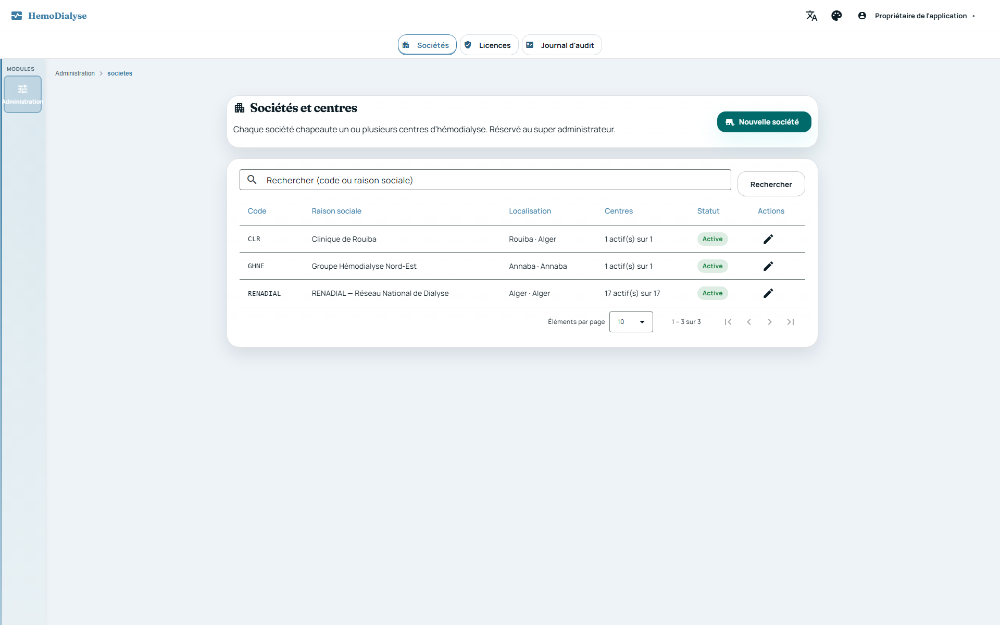
Préfixe
RG-ORG. Le propriétaire de la plateforme (SUPERADMIN) administre les sociétés, leurs centres, les comptes administrateur de centre et les comptes direction. Sources :Societe,Centre,Coordonnees,SocieteDomainService,SocieteRestController,SocieteAdminAccountService,DirectionAccountService,SocieteLogoService.
Une société chapeaute un ou plusieurs centres. Elle ne peut être créée qu'avec son premier centre
(SOCIETE_SANS_CENTRE). Une société reconstituée sans centre est refusée.
Code de société : 2 à 30 caractères (lettres majuscules, chiffres, tiret, souligné ; normalisé en
majuscules,
commence par une lettre ou un chiffre) ; sinon SOCIETE_CODE_INVALIDE. Le code est unique
(SOCIETE_CODE_DEJA_UTILISE).
Raison sociale obligatoire, 200 caractères maximum (SOCIETE_NOM_INVALIDE).
Identifiants légaux NIF, NIS, RC facultatifs, 40 caractères maximum chacun
(SOCIETE_IDENTIFIANT_INVALIDE).
Pied de page des documents : 500 caractères maximum (SOCIETE_PIED_PAGE_TROP_LONG) ; vide = absent.
Une société désactivée n'est plus proposée à la connexion ; ses centres sont conservés ; elle peut être réactivée. Un centre de société désactivée ne peut pas se connecter (RG-SEC-013).
Société introuvable : SOCIETE_INTROUVABLE.
La liste des sociétés est paginée, filtrable par recherche, taille plafonnée à 100.
Code de centre : mêmes règles que le code de société (CENTRE_CODE_INVALIDE) ; unique sur toute la
plateforme (CENTRE_CODE_DEJA_UTILISE).
Nom de centre obligatoire, 150 caractères maximum (CENTRE_NOM_INVALIDE).
Un centre appartient à exactement une société. Le rattacher une seconde fois à la même société est
refusé (CENTRE_DEJA_AFFECTE) ; un centre inconnu de la société : CENTRE_INTROUVABLE.
Invariant : une société conserve toujours au moins un centre actif. On ne peut ni désactiver
ni
retirer (transférer) son dernier centre actif (SOCIETE_DERNIER_CENTRE). Désactiver un centre déjà inactif est sans
effet.
Transfert d'un centre vers une autre société : refusé si source = cible
(CENTRE_TRANSFERT_MEME_SOCIETE),
si la société cible est désactivée (SOCIETE_INACTIVE) ou si la source perdrait son dernier centre actif ; le
transfert des
deux sociétés est atomique (tous deux enregistrés ou aucun).
Un centre inactif ne peut plus être sélectionné à la connexion (RG-SEC-010/013) mais ses données sont conservées.
Tous les champs sont facultatifs et nettoyés (vide = absent) : adresse (250), ville (100), wilaya
(100),
téléphone (30), email (150), site web (200) ; dépassement : COORDONNEES_TROP_LONG.
Téléphone : 6 à 25 caractères parmi chiffres, espace, point, parenthèses, tiret, + initial
(COORDONNEES_TELEPHONE_INVALIDE). Email normalisé en minuscules (COORDONNEES_EMAIL_INVALIDE). Site web au format
[http(s)://]domaine.tld[/chemin] (COORDONNEES_SITE_WEB_INVALIDE).
Ces coordonnées alimentent l'en-tête et le pied de page de tous les documents imprimés (voir RG-DOC).
Le logo est un PNG ou un JPEG reconnu à son contenu (signature), jamais à l'extension ni au type
déclaré ;
le SVG est refusé. Taille maximale 512 Ko (TOO_LARGE), dimensions maximales 2000 × 2000 px contrôlées avant décodage
(DIMENSIONS), image décodable (IMAGE_INVALID), fichier non vide (EMPTY), type valide (FILE_TYPE). Un refus
répond 422
avec la liste des violations ; l'envoi accepté est journalisé.
Le logo est servi sans mise en cache (no-store, nosniff, CSP default-src 'none') ; il est
imprimé dans
l'en-tête des documents. Sa suppression est possible à tout moment.
Seul le SUPERADMIN crée, modifie, active/désactive les comptes ADMIN d'une société et réinitialise
leur mot de
passe ; le mot de passe n'est jamais renvoyé ni journalisé.
Création : le centre est obligatoire (CENTRE_REQUIS) et doit appartenir à la société
(CENTRE_HORS_SOCIETE) ;
identifiant 3 à 50 caractères (minuscules, chiffres, point, tiret, souligné) (USERNAME_INVALID) et libre
(USERNAME_TAKEN) ;
email valide si renseigné (EMAIL_INVALID) ; mot de passe selon RG-SEC-019b. Le compte reçoit le rôle ADMIN.
Modification : un administrateur est rattaché à au moins un centre de la société
(CENTRE_REQUIS) ; chaque
centre doit appartenir à la société ; les rattachements à des centres d' autres sociétés ne sont jamais modifiés ;
retirer
un centre révoque les sessions ouvertes sur ce centre.
Désactiver un compte ou réinitialiser son mot de passe révoque toutes ses sessions ; seul un
compte portant
le rôle ADMIN et rattaché à la société est concerné (COMPTE_INTROUVABLE).
Un compte direction porte le rôle DIRECTION, est rattaché à une société (et jamais à un centre) ;
mêmes règles
d'identifiant, d'email et de mot de passe que RG-ORG-041.
Activation/désactivation et réinitialisation de mot de passe réservées au SUPERADMIN ; une
désactivation coupe
les sessions ouvertes ; un compte hors société ou sans rôle DIRECTION est introuvable (COMPTE_INTROUVABLE).
Les comptes direction n'ont accès qu'aux indicateurs anonymes (RG-SEC-021 et chapitre direction).
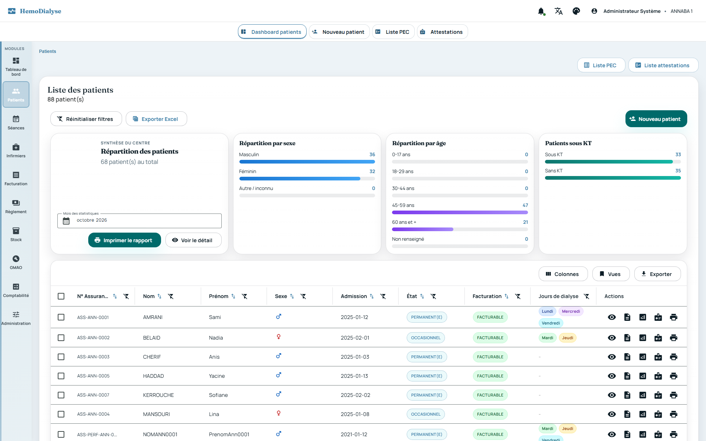
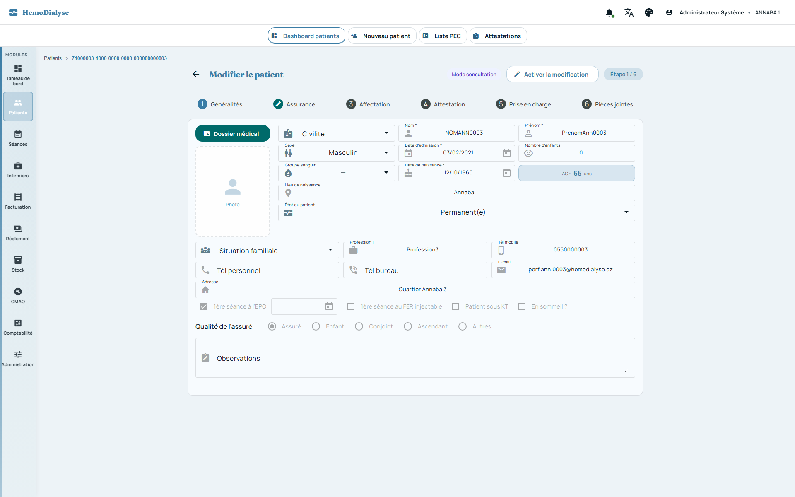
Préfixes
RG-PAT(patient),RG-ASS(assuré),RG-ATT(attestation de droits),RG-PEC(prise en charge). Sources :Patient,PatientDomainService,PatientApplicationService,PatientRestController,Assure,AssurePatientAssignment,AttestationDroit,AttestationDomainService,PriseEnCharge,PecDomainService,PecRestController,PatientListQueryService.
Un patient appartient à un centre (centerId) ; sa fiche n'est lisible/modifiable que dans ce centre
(RG-TRV-001/002). Un patient inconnu du centre : « Patient introuvable » (400).
Champs obligatoires à la création : nom, prénom, sexe, date d'admission, date de naissance, numéro d'assurance (valeur non vide). Une valeur manquante est refusée (400).
Le code patient est généré par le système (PAT- + 8 caractères hexadécimaux majuscules) et n'est
jamais
saisi ni modifié.
Le numéro d'assurance est unique par centre : créer un patient avec un numéro déjà utilisé dans le centre est refusé (« Numero assurance deja utilise pour ce centre »).
État du patient : PERMANENT (défaut à la création), OCCASIONNEL, TRANSFERE, DECEDE, GREFFE,
GUERRI, VACANCIER_LOCAL, VACANCIER_ETRANGER, avec une date de l'évènement d'état. À la modification, l'état
fourni
remplace l'état courant ; non fourni, l'état courant est conservé. Sens et obligation de la date : RG-PAT-030/031.
Type de patient dérivé de l'état : VACANCIER si l'état est VACANCIER_LOCAL ou
VACANCIER_ETRANGER,
sinon NON_VACANCIER.
Un patient non vacancier doit avoir une attestation de droits : à la création, dates de début et de fin d'attestation obligatoires ; à la modification, soit fournies, soit déjà existantes (« Attestation obligatoire pour un patient non-vacancier »). Un vacancier en est dispensé.
Un patient « en sommeil » (enSommeil) est conservé mais n'est plus considéré en file active active
(voir
indicateurs).
Téléphones (personnel, mobile, bureau) : normalisés et validés selon RG-TRV-034 (8 à 15 chiffres) ; email validé et mis en minuscules (RG-TRV-033) ; champ vide = absent. Un format invalide est refusé.
La fiche porte aussi : civilité, groupe sanguin, nombre d'enfants, lieu de naissance, situation familiale, profession, adresse, photo, observation, indicateurs « sous KT », EPO (activé + date) et fer (activé + date), pièces jointes.
Affectation clinique et logistique de la fiche : médecin traitant, salle, créneau (position), générateur, transporteurs aller/retour, catégorie de transport, centre payeur, et jours de dialyse (dimanche à samedi, cases à cocher). Un patient sans jour coché n'a pas de séance planifiée.
Le générateur affecté est un équipement du parc GMAO de type générateur de dialyse du même centre ; son nom, sa marque et son état (statut GMAO) sont lus en temps réel à la consultation de la fiche.
L'écriture de la fiche (création, modification, assurés) est refusée au médecin « seul » (il consulte
sans
modifier) ; autorisée à ADMIN, SECRETAIRE, INFIRMIER et aux rôles personnalisés.
Création ou modification : tout le placement (salle, créneau, générateur, jours) est contrôlé côté serveur par la planification (voir RG-PLN-050 à 053). Une fiche sans placement est acceptée ; une fiche dont le placement n'a pas changé n'est pas recontrôlée (une anomalie héritée ne bloque pas la modification d'autres données).
Création et modification notifient en temps réel le centre (évènements « patient créé/modifié ») et vident les caches de listes et de synthèse patient (RG-TRV-004/040).
Les affectations de jours/salles saisies dans l'assistant sont verrouillées côté interface lorsqu'elles dépendent du planning ; seul le planificateur les modifie (voir chapitre planification).
La date d'évènement (dateEvenementEtat) a un sens propre à l'état : pour TRANSFERE,
DECEDE, GREFFE et GUERRI, c'est la date de sortie (transfert, décès, greffe, guérison) ; pour OCCASIONNEL,
VACANCIER_LOCAL et VACANCIER_ETRANGER, c'est la date de fin de séjour (dernier jour inclus), le séjour
commençant à la date d'admission ; pour PERMANENT, elle n'existe pas.
À la création comme à la modification, un état de sortie exige une date d'évènement
(PATIENT_DATE_EVENEMENT_REQUISE) et aucune date d'évènement ne peut précéder la date d'admission
(PATIENT_DATE_EVENEMENT_AVANT_ADMISSION). La date de fin d'un séjour limité reste facultative (séjour non borné).
Dernier jour d'occupation de la place : TRANSFERE et GUERRI = la date d'évènement incluse
(dernière séance) ; DECEDE et GREFFE = la veille de la date d'évènement (le patient ne dialyse plus ce jour-là) ;
séjour limité = la date de fin de séjour incluse ; un état de sortie sans date libère la place immédiatement ;
PERMANENT n'a pas de limite. Cette règle unique alimente le planning (RG-PLN-010, 040), la charge des infirmiers
(RG-INF-040), les séances attendues (RG-ABS-041, RG-SEA-042) et la libération des places (RG-PAT-033).
Libération effective de la place : lorsque le dernier jour d'occupation est dépassé, la fiche perd sa salle, son créneau, son générateur et ses jours de dialyse ; le patient reste dans le centre (consultation, facturation, historique). Le traitement s'exécute chaque nuit à 04:00 (après le contrôle des absences de 02:30, qui a encore besoin des jours de dialyse de la veille) et à l'enregistrement d'une fiche dont l'échéance est dépassée de plus d'un jour. Il est idempotent, par centre, et vide les caches de liste et de synthèse patient.
Mouvements de patients : chaque admission, changement d'état ou de date d'évènement et chaque
libération de place produit un mouvement immuable (ADMISSION, SEJOUR_TEMPORAIRE, REPRISE, TRANSFERT,
DECES, GREFFE, GUERISON, PLACE_LIBEREE) portant l'état précédent et nouveau, la date d'effet et
l' affectation occupée à cet instant (salle, créneau, générateur, jours). Un mouvement n'est jamais modifié ni
supprimé ; la libération automatique est marquée comme telle.
Enregistrer la fiche ne dégrade jamais la prise en charge ni l'attestation : la demande de prise
en charge saisie sur la fiche retrouve la PEC existante (par identifiant, à défaut de même demande) et la conserve
avec
son statut et son accord (une PEC VALIDEE reste VALIDEE) ; seule une demande modifiée met à jour les dates et le
forfait demandés. Une PEC n'est créée (état CREE) que si aucune PEC ne correspond. Une attestation déjà présente
avec
les mêmes dates n'est pas recréée (aucun doublon).
Effectif d'une période (règle unique, partout où l'on compte des patients : synthèse mensuelle, tableau de bord de la direction — patients, sexe, âge, caisse, anémie —, file active rapportée à la capacité, nombre de patients du tableau de bord du centre) : un patient est compté s'il est admis au plus tard le dernier jour de la période et s'il n'est pas sorti avant son premier jour. La sortie (transfert, décès, greffe, guérison) ou la fin de séjour est lue à la date d'évènement selon RG-PAT-032 : un évènement pendant ou après la période garde le patient dans l'effectif, un évènement antérieur l'en retire ; un état de sortie sans date n'est jamais compté. La file active de la capacité écarte en plus les patients « en sommeil » (RG-PAT-008).
Le suivi des mouvements est consultable en liste paginée (page 0, taille 20 par défaut,
100 maximum), du plus récent au plus ancien, filtrable par patient, type et période de date d'effet, limitée au
centre courant, pour les profils ADMIN, SECRETAIRE, MEDECIN et INFIRMIER.
La recherche de patients est paginée (taille 1 à 200, 20 par défaut), toujours limitée au centre, et
filtrable
par code, nom, prénom, sexe, période d'admission, numéro d'assurance, état, statut « non facturable » et, par texte du
libellé
affiché, médecin traitant, créneau, transporteurs aller/retour et forfait. Les filtres sexe et état acceptent
plusieurs valeurs séparées par des virgules (ex. M,F) : le patient doit correspondre à l'une d'elles
(comparaison exacte, insensible à la casse et aux espaces) ; une saisie sans virgule reste une recherche par contenu.
Tri autorisé uniquement sur code, nom, prénom, sexe, date d'admission, numéro d'assurance, état ; un tri demandé sur une autre colonne retombe sur l'ordre par défaut (jamais d'erreur, jamais de tri SQL arbitraire).
Un patient est « non facturable » tant qu'il n'a aucune prise en charge validée ; le statut et le forfait de sa dernière PEC validée apparaissent dans la liste.
Les libellés de référentiels (médecin, créneau, transporteurs, forfait) sont résolus par lot pour la page (pas de requête par ligne).
La synthèse mensuelle des patients (comptages par sexe, âge, KT) est calculée pour le mois demandé
(mois courant par défaut) sur l' effectif du mois (RG-PAT-037), mise en cache par centre et par mois (3 min) ;
ses détails de même (motif d'inclusion : PERMANENT, EVENT_MONTH = sortie ou fin de séjour dans le mois,
ACTIVE_PERIOD = sortie ou fin de séjour postérieure au mois).
Qualité d'assuré : ASSURE_LUI_MEME (défaut), ENFANT, CONJOINT, ASCENDANT, AUTRE.
Patient assuré lui-même : ses propres nom, prénom, sexe, date de naissance, téléphones, adresse et groupe sanguin tiennent lieu d'informations d'assuré, son numéro d'assurance est celui de l'assuré, et toute affectation d'assuré principale antérieure est effacée.
Patient ayant droit : le numéro d'assurance de l'assuré est obligatoire (« N° assurance assuré obligatoire pour cette qualité d'assuré ») ; l'assuré est créé ou mis à jour (clé : numéro d'assurance) avec ses coordonnées, puis affecté comme assuré principal du patient (l'ancien principal est clôturé).
Un même assuré peut être lié à plusieurs patients (fratrie, famille) ; son historique d'affectation est conservé et consultable (numéro, principal ou non, actif, dates).
Affecter explicitement un assuré existant à un patient : impossible si le patient est assuré lui-même (« Impossible d'affecter un assuré si le patient est assuré lui-même ») ; assuré inconnu : « Assuré introuvable » ; la date de début est automatiquement aujourd'hui, l'affectation principale précédente est clôturée à cette même date, la nouvelle est active (sans date de fin).
Correction des dates d'une affectation : la date de fin ne peut précéder la date de début (« La date de fin doit être >= à la date de début ») ; l'affectation doit appartenir au patient et au centre sinon 403.
Modification d'un assuré : l'assuré doit appartenir au centre (sinon 403) ; téléphones validés selon RG-TRV-034.
Une affectation est active tant qu'elle n'a pas de date de fin.
Une attestation couvre une période : dates de début et de fin obligatoires (« Dates attestation obligatoires ») et la fin ne peut précéder le début (« Date fin avant date debut »).
Une attestation est rattachée à un patient et à un centre ; plusieurs attestations successives sont conservées.
Une attestation est valide à une date donnée si cette date est comprise dans sa période ; sa validité à la date du jour conditionne la création de PEC et de séances pour un non-vacancier (RG-PEC-002, RG-PEC-005).
Création et suppression d'une attestation notifient le centre en temps réel. La recherche des attestations du centre est paginée.
Cycle de vie : CREE → VALIDEE → CLOTUREE. Toute autre transition est refusée (« Transition
invalide vers
VALIDEE » / « …vers CLOTUREE »).
Création : le patient doit exister dans le centre ; pour un non-vacancier, une attestation valide à la date du jour est obligatoire (« Attestation valide obligatoire pour PEC non-vacancier »). La PEC enregistre la période et le forfait demandés.
Validation (réservée à ADMIN) : renseigne la période et le forfait effectifs accordés ;
possible
uniquement depuis CREE. Elle notifie le centre.
Clôture : possible uniquement depuis VALIDEE. Elle notifie le centre.
Une séance ne peut être créée que si la PEC est validée et, pour un non-vacancier, si une
attestation est valide à
la date du jour (session-allowed).
Un patient n'ayant aucune PEC validée est « non facturable » (RG-PAT-022) : aucune séance ne peut lui être facturée.
Saisie dans l'assistant patient : une PEC (période et forfait demandés) et une attestation peuvent être créées en même temps que la fiche, dans la même transaction que le patient et l'assuré.
La suppression d'une PEC exige qu'elle existe dans le centre ; elle notifie le centre. La recherche des PEC du centre est paginée.
Tableau de bord administratif du centre (/api/v1/dashboard/stats, mois facultatif au format
AAAA-MM, ignoré s'il est invalide) : nombre de PEC créées et validées (du mois
par date de création, ou au total), d'attestations (idem), de patients, de PEC validées dont la fin demandée est
atteinte et d' attestations dont la fin est atteinte dans l'horizon d'alerte (30 jours par défaut,
paramétrable). Point d'attention : ces deux compteurs « à échéance » comptent aussi les documents déjà expirés
de toute ancienneté (condition « date de fin ≤ horizon »), ce qui
surestime le besoin de renouvellement ; à borner en bas par la date du jour.
GET /api/v1/pec (PEC du centre) et GET /api/v1/pec/patient/{id} renvoient des
listes non
paginées (volume borné par patient pour la seconde ; non borné pour la première) — écart à RG-TRV-020 à résorber au
profit de la
recherche paginée POST /api/v1/pec/pec-center/search.
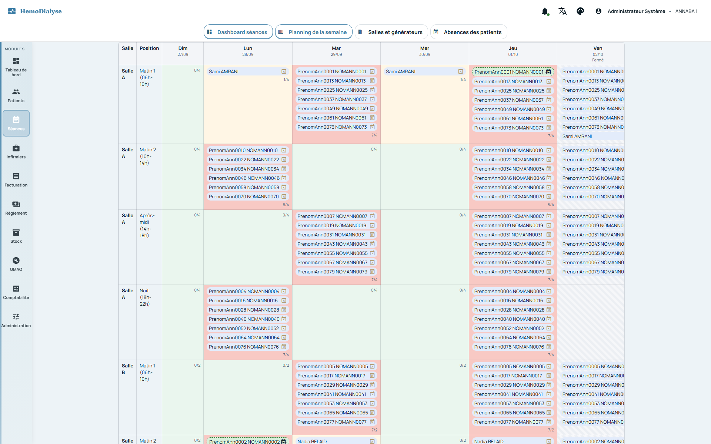
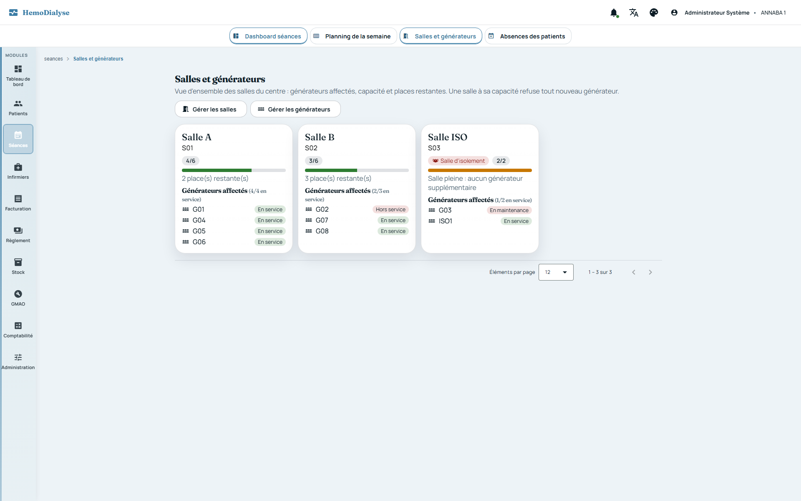
Préfixe
RG-PLN. Le système propose les meilleures places, refuse les placements incohérents, détecte les conflits du planning réel et replace automatiquement un patient devenu à risque infectieux. Sources :PlanificationAffectationService,PlanningSemaineService,PlacementPatientService,PlanningParametres,PlanningParametresService,PlanningDonneesJdbcAdapter,SalleGenerateursService,CapaciteSalleRegle,CapaciteTheoriqueCalculator, contrôleursPlanning*RestController,SalleGenerateursRestController.
Chaque centre paramètre : jours d'ouverture, salles d'isolement, ratio de sécurité « patients par infirmier » et nombre de « patients par poste et par série ». Valeurs par défaut : tous les jours ouverts, aucune salle d'isolement, ratio 4, 3 patients par poste et par série.
Au moins un jour d'ouverture est requis (« Au moins un jour d'ouverture est requis »).
Ratio patients par infirmier : entier de 1 à 20. Patients par poste et par série : entier de 1 à 10 (sinon refus 400).
Une salle d'isolement doit appartenir au centre (« Une salle d'isolement n'appartient pas à ce centre »).
Lecture du paramétrage : ADMIN, SECRETAIRE, MEDECIN, INFIRMIER ; modification : ADMIN seul.
La semaine de dialyse commence le dimanche et se termine le samedi.
Un patient occupe une place dès que sa fiche porte une salle, un créneau (position) et au moins un
jour de
dialyse. Les patients transférés, décédés, greffés ou guéris ne tiennent plus de place à partir de la date de
l'évènement (date_evenement_etat) : le patient transféré ou guéri garde sa place jusqu'à cette date incluse
(dernière séance), le patient décédé ou greffé la libère à cette date (dernier jour occupé = la veille). Sans date
d'évènement, la place est libérée immédiatement. Un séjour occasionnel ou vacancier occupe la place de la date
d'admission à la date de fin de séjour incluse (sans date de fin : non borné) ; l'état permanent n'a pas de limite
(règle détaillée RG-PAT-032). Une fois l'échéance dépassée, la fiche perd son affectation (RG-PAT-033). Un patient
en sommeil garde sa place (évite un double placement à son retour). Les propositions de placement restent
prudentes : une place dont la libération est future, ou dont le séjour n'a pas encore commencé, reste considérée comme
occupée.
Seuls les générateurs en service (statut GMAO EN_SERVICE, non supprimés) de type générateur de
dialyse,
rattachés à une salle du centre, sont disponibles. Un générateur en maintenance, en attente de pièce, hors service,
désactivé
ou réformé n'est jamais proposé.
Un patient est à risque infectieux si sa dernière sérologie d'au moins un des marqueurs AgHBs, anti-VHC, ARN du VHC ou VIH est positive (la dernière par marqueur, départagée par date de prélèvement puis date de saisie).
Les fermetures datées sont les jours fériés et les jours de fermeture exceptionnelle du centre ; la proposition de placement signale les fermetures des 90 prochains jours tombant sur les jours proposés.
Un patient garde le même créneau, la même salle et le même générateur tous ses jours de dialyse.
Un générateur ne sert qu'un patient par jour et par créneau.
Une salle n'a de place pour un jour et un créneau que si l'un de ses générateurs en service est libre, après déduction des patients placés dans la salle sans générateur précis (ou sur un générateur hors service/d'une autre salle).
Seuls les jours d'ouverture du centre sont proposés ; des jours imposés fermés donnent l'alerte
JOURS_IMPOSES_FERMES et aucune proposition.
Isolement : un patient à risque n'est placé qu'en salle d'isolement et jamais sur un générateur servant un patient sans risque ; un patient sans risque n'est ni placé en salle d'isolement ni sur un générateur dédié à un patient à risque. Aucun générateur ne mélange jamais patients à risque et patients sans risque.
Patient à risque sans aucune salle d'isolement paramétrée : alerte AUCUNE_SALLE_ISOLEMENT, aucune
proposition.
Nombre de séances par semaine : de 1 à 7 (sinon 400) ; si des jours sont imposés, leur nombre fait foi.
Le système classe les propositions de 0 à 100. Le score combine : espacement des jours (poids 55 %), créneau souhaité (+20), salle souhaitée (+15), charge de la salle (+10 : répartition équilibrée) ; normalisé sur le maximum atteignable pour la demande (100 = placement idéal).
Espacement des jours : pénalité de 30 points par paire de jours consécutifs au-delà du minimum
inévitable (2n − 7), 8 points par jour d'écart au-delà de l'écart idéal (⌈7/n⌉) ; léger avantage (−3 aux autres
schémas) aux schémas usuels
lundi-mercredi-vendredi, mardi-jeudi-samedi, lundi-jeudi, mardi-vendredi, mercredi-samedi.
Chaque proposition est accompagnée de raisons lisibles : jours imposés libres, jours bien espacés (score ≥ 95), salle d'isolement, créneau préféré, salle préférée, salle peu chargée (≥ 70 % libre), et des fermetures datées à venir.
Au plus deux propositions par salle et créneau (variété), au plus 30 au total (5 par défaut côté réplacement automatique, nombre demandé côté écran) ; départage : score, nom de salle, ordre du créneau, code du générateur.
Pour modifier le placement d'un patient, son placement actuel est libéré dans le calcul. Le risque est déduit de ses sérologies, sauf si l'utilisateur force l'option « isolement ».
Aucune mise en cache : la réponse reflète l'instant (RG-TRV-041). Accès : ADMIN, SECRETAIRE,
MEDECIN,
INFIRMIER, sous réserve des périmètres restreints (RG-SEC-022/023).
La grille de disponibilité donne, pour chaque salle, créneau et jour, la capacité (générateurs en service) et l'occupation ; un jour de fermeture hebdomadaire a une capacité nulle.
Le planning d'une semaine liste, par salle, créneau et jour, les patients présents (nom, générateur, risque) et la capacité (nulle un jour fermé). Un patient dont la place est libérée à une date de la semaine (RG-PLN-010) n'apparaît plus à partir de cette date (de même qu'un séjour avant sa date d'admission) et porte l'indication « place libérée le jj/mm/aaaa » (infobulle de la grille et détail du patient). Les jours fermés (fermeture hebdomadaire, férié, fermeture exceptionnelle) sont signalés avec leur motif.
Conflits détectés automatiquement : GENERATEUR_DOUBLE (générateur réservé deux fois),
GENERATEUR_INDISPONIBLE
(générateur hors service ou d'une autre salle), SANS_GENERATEUR, ISOLEMENT_NON_RESPECTE (patient à risque hors
isolement, ou
patient sans risque en isolement dès qu'une salle d'isolement existe), SALLE_SURCHARGEE (plus de patients que de
générateurs),
GENERATEUR_MIXTE (mélange à risque / sans risque, quel que soit le jour).
Le planning compte les patients à replanifier : ceux qui sont placés sur un jour fermé de la semaine.
Le planning de la semaine est borné par construction (une semaine) : il n'est pas paginé (RG-TRV-022)
ni mis en
cache. Accès ADMIN, SECRETAIRE, MEDECIN, INFIRMIER ; le médecin « seul » peut le lire (RG-SEC-023).
L'interface explique la
notation « N/M » (N patients pour M générateur (s)).
Les absences de patients de la semaine, les séances validées par l'infirmier et le détail d'un patient sont affichés sur le planning (voir RG-ABS-0xx).
Le planning de la semaine est recalculé à chaque affichage à partir des jours et de la place actuels des patients. Une séance réalisée (validée, signée ou facturée) que ce calcul ne montre plus — jours ou place du patient modifiés depuis — reste affichée dans la case où elle a eu lieu (place mémorisée à la validation, RG-SEA-049 ; à défaut, place actuelle du patient), avec le repère « réalisée hors du planning actuel ». Elle ne crée pas de conflit (RG-PLN-041) et ne compte pas parmi les patients à replanifier (RG-PLN-042). Une séance réalisée qu'aucune case ne peut accueillir (place non mémorisée, patient plus placé) est listée à part avec sa date. Les séances encore prévues plus tard dans la même semaine pour ce patient, et pas encore réalisées, portent l'alerte « séance déjà réalisée le jj/mm/aaaa » : le patient risque une séance en trop (par exemple séance du lundi validée puis jours passés au mercredi).
Tout placement saisi sur une fiche (création ou modification) est vérifié côté serveur avec les
mêmes règles que
les propositions. Le premier manquement lève PLACEMENT_<règle>, parmi : INCOMPLET (salle, créneau, générateur ou
jours
manquants), SALLE_INCONNUE, CRENEAU_INCONNU, JOUR_FERME, ISOLEMENT_REQUIS, GENERATEUR_INCONNU,
GENERATEUR_INCOMPATIBLE,
GENERATEUR_OCCUPE.
Exceptions : fiche sans aucun placement (acceptée) ; fiche dont le placement n'a pas changé (acceptée, une anomalie héritée ne bloque pas une autre modification).
Un patient placé en salle d'isolement est traité comme à risque pour la compatibilité du générateur.
Réaffectation automatique : quand la sérologie d'un patient placé devient positive, il est
replacé
automatiquement en salle d'isolement (mêmes jours, créneau conservé si possible, meilleure proposition) et le centre
est notifié (patient replacé en isolement). Sans place d'isolement, le patient reste en place et
l'administration est alertée (isolement impossible) pour replanifier. Issues : aucun risque, non placé, déjà
conforme, déplacé, à replanifier.
Vue d'ensemble des salles (générateurs affectés, capacité, places restantes) : paginée, limitée au
centre, non
mise en cache, réservée à ADMIN et SECRETAIRE.
Capacité d'une salle : le nombre de générateurs affectés ne dépasse jamais la capacité fixée
(SALLE_CAPACITE_DEPASSEE) ;
sans capacité, aucune limite. Le contrôle s'applique à l'affectation d'un générateur à une salle
(création/modification d'un équipement
GMAO) en ignorant le générateur déjà présent dans la salle.
Une salle d'un autre centre est introuvable (aucune limite appliquée, jamais d'accès inter-centres).
Générateurs de secours : 1 pour 8 générateurs, arrondi à l'entier supérieur (16 → 2 ; 17 → 3 ; 0 → 0).
Postes actifs = générateurs installés (hors réformés) − générateurs de secours.
Capacité théorique (file active maximale) = postes actifs × séries par jour × patients par poste et par série (paramétrable, défaut 3). Exemple : 16 générateurs, 2 séries → 2 secours, 14 postes, 14 × 2 × 3 = 84 patients.
Niveau d'occupation : SANS_CAPACITE (aucune capacité calculable), MARGE (< 90 %), PROCHE (≥
90 %),
ATTEINTE (file active ≥ capacité). Taux = file active / capacité en % (une décimale).
Consolidation de plusieurs centres : générateurs, postes, capacités et files actives s'additionnent ; séries et patients par poste n'ont pas de sens consolidé (valent 0). La restitution à la direction est détaillée par centre (voir RG-DIR).
Sources :
domain/planning/optimisation(modèle, ports,IndicateursOptimisationService,EmpreinteOptimisation,VerificationDeplacementsService,SchemasJoursService,MaintenanceGenerateursService,MotifProposition),infrastructure/optimisation/timefold(TimefoldOptimiseurAdapter,PatientsConstraintProvider,InfirmiersConstraintProvider,CompletConstraintProvider,MaintenanceConstraintProvider,PoidsOptimisation),OptimisationPlanningService,OptimisationApplicationService,PreferencesPlanningService,ReplanificationAutomatiqueService,OptimisationDonneesJdbcAdapter,OptimisationRunJdbcAdapter,PreferencePatientJdbcAdapter,ProfilInfirmierJdbcAdapter,ReglagesOptimisationJdbcAdapter,DeplacementTemporaireJdbcAdapter,OptimisationPlanningRecovery,ReplanificationAutomatiqueScheduler,PlanningOptimisationRestController,PlanningPreferencesRestController,CalendrierPropositionService,CalendrierPropositionJdbcAdapter,PlanningOptimiseReportService.
L'optimisation propose un planning qui consomme le moins de ressources possible (générateurs,
salles ouvertes, vacations d'infirmiers) sans enfreindre les règles de la planification. Cinq périmètres :
PATIENTS (replace les patients : salle, créneau, générateur, et choisit les jours de ceux qui le demandent,
RG-PLN-094), ROULEMENT (conçoit le roulement hebdomadaire des infirmiers face aux placements actuels),
COUVERTURE (comble les cases en sous-effectif sur 1 à 4 semaines avec des remplaçants), COMPLET (patients et
roulement dans un seul modèle, RG-PLN-095) et MAINTENANCE (déplacements temporaires des séances dont le
générateur est indisponible, RG-PLN-096). Une proposition n'est jamais appliquée automatiquement, y compris
celles de la replanification nocturne (RG-PLN-100).
Le calcul est asynchrone : le lancement répond immédiatement (202) avec une exécution
EN_COURS, suivie ensuite (avancement et score de la meilleure solution). Un seul calcul à la fois par centre
(OPTIMISATION_DEJA_EN_COURS). Les 20 dernières exécutions de chaque centre sont conservées (historique) ; au
démarrage du serveur, toute exécution restée en cours passe en échec (« calcul interrompu par l'arrêt du serveur »).
Nombre de calculs en parallèle : PLANNING_OPTIMISATION_WORKERS (défaut 2).
Paramètres et bornes (sinon refus 400) : début de l'horizon (ramené au dimanche de sa semaine),
nombre de semaines 1 à 4 (uniquement pour COUVERTURE et MAINTENANCE, 1 sinon), durée maximale de calcul
par phase 2 à 300
secondes (défaut 20), stabilité 0 à 10 (défaut 5 : 0 = tout peut changer, 10 = changer le moins possible),
objectif des infirmiers EQUITE (défaut) ou ECONOMIE, vacations maximales par jour 1 à 3 (défaut 2) et par semaine
1 à 14 (défaut 6). Les contraintes de personnel (durée d'une vacation, temps plein, repos hebdomadaire) viennent des
réglages du centre (RG-PLN-098), lus à chaque lancement.
Données lues, toutes bornées au centre : générateurs en service (RG-PLN-011), patients actifs placés et patients en attente de place (jours prescrits mais salle ou créneau manquant), à l'exclusion des patients sortis ou dont le séjour est terminé (RG-PLN-010), ainsi que les patients sans jours dont la préférence demande de choisir les jours (RG-PLN-093) ; infirmiers actifs, profils (RG-PLN-097), roulement, absences et remplacements de l'horizon ; préférences et transporteurs (aller, retour) des patients ; compétences demandées (RG-PLN-097) ; indisponibilités des générateurs et déplacements temporaires déjà enregistrés (RG-PLN-096). Les jours de dialyse d'un patient ne sont modifiés que si sa préférence le demande (RG-PLN-094). Un patient dont aucun jour n'est ouvert (ou, jours à choisir, sans schéma possible) garde sa place. Hors couverture et maintenance, le planning est évalué sur la semaine type (sans fermeture datée, absence ni remplacement) : on compare des roulements, pas des aléas.
Placement des patients, règles dures : un générateur ne sert qu'un patient par jour et par
créneau (RG-PLN-021) ; un patient à risque n'est placé qu'en salle d'isolement et un patient sans risque jamais
(RG-PLN-024). Un patient garde la même place tous ses jours (RG-PLN-020). Un patient qu'aucune place ne peut accueillir
reste « non placé » avec sa cause : AUCUNE_PLACE, ISOLEMENT_IMPOSSIBLE (aucune salle d'isolement) ou JOURS_FERMES.
Placement des patients, objectifs souples (poids relatifs) : vacations d'infirmiers exigées par le
ratio (100 par vacation, une par tranche de patients par infirmier, case par case), salles ouvertes (30 par case salle
× créneau × jour), générateurs utilisés (10), réserve de générateurs de secours à garder libre à chaque créneau et
chaque jour (50 par générateur manquant, RG-PLN-070), stabilité : changer un patient de créneau coûte
3 × stabilité × 6, de salle 2 × stabilité × 6, de générateur seul 1 × stabilité × 6 ; préférences et jours
choisis : RG-PLN-094. Placer un patient prime sur tous les objectifs souples. La recherche part des places actuelles
(« ne rien changer » est la solution de départ).
Infirmiers, règles dures : jamais deux salles au même créneau le même jour (RG-INF-022), au plus N vacations par jour (RG-PLN-082). Un infirmier absent ce jour-là, non habilité pour une salle d'isolement ou déjà prévu sur le créneau n'est jamais candidat. Une vacation sans infirmier est signalée (« non pourvue ») et prime sur les objectifs souples.
Infirmiers, objectifs souples : dépassement hebdomadaire (500 par vacation au-delà du maximum),
équité (somme des carrés des vacations) ou, avec l'objectif ECONOMIE, nombre d'infirmiers mobilisés (300 par
infirmier), double vacation dans la journée (40), changement de salle dans la semaine (30), connaissance de la salle
et du créneau d'après le roulement actuel (10 par habitude manquante), stabilité du roulement (8 × stabilité, hors
couverture), au moins un infirmier qui n'est pas aide-soignant par case occupée (200), repos hebdomadaire, quota
d'heures et compétences (RG-PLN-099).
Couverture : les infirmiers déjà prévus (roulement moins absences, plus remplacements en place) sont conservés tels quels ; seules les vacations manquantes sont à pourvoir, par des infirmiers disponibles sur le créneau. L'application crée des remplacements (RG-INF-052) ; les vacations déjà tenues sont ignorées.
Chaque proposition comporte les indicateurs avant / après : générateurs utilisés, salles ouvertes, vacations requises, places d'infirmier inutilisées, patients non placés, vacations non pourvues, infirmiers mobilisés, écart de charge, dépassements hebdomadaires. Ils sont recalculés par le domaine à partir des placements et vacations proposés, indépendamment du solveur ; la proposition liste aussi les déplacements (de → vers), les patients non placés, les vacations planifiées (avec l'indication « déjà prévue ») et les vacations non pourvues.
Arrêt anticipé : un calcul en cours peut être arrêté ; la meilleure solution trouvée est conservée et les phases restantes ne reçoivent que 2 secondes. La graine aléatoire du moteur est fixe, mais la limite de calcul étant un temps, deux exécutions identiques peuvent différer légèrement.
Application d'une proposition (ADMIN seul), tout ou rien : l'exécution doit exister dans le
centre (OPTIMISATION_INTROUVABLE), être terminée avec un résultat (OPTIMISATION_NON_APPLICABLE) et ne pas être
déjà appliquée (OPTIMISATION_DEJA_APPLIQUEE). Le centre ne doit pas avoir changé depuis le calcul : l'empreinte
(SHA-256 des données lues) est recalculée, sinon OPTIMISATION_PERIMEE et il faut relancer. Chaque nouvelle place est
revérifiée avec les règles de RG-PLN-050 face à l'état final des autres patients (OPTIMISATION_PLACEMENT_<règle>).
Effets : PATIENTS déplace les patients et enregistre sur leur fiche les jours choisis par l'optimisation ;
ROULEMENT remplace le roulement des infirmiers actifs (affectations identiques conservées, autres modifiées, créées
ou supprimées) ; COUVERTURE crée les remplacements ; COMPLET fait les deux premiers ; MAINTENANCE enregistre
les déplacements temporaires (RG-PLN-096) sans toucher aux places habituelles.
Accès : lancer, consulter, arrêter et lister (ADMIN, SECRETAIRE) ; appliquer (ADMIN). Interdit
à l'infirmier « seul » et au médecin « seul » (RG-SEC-022/023). Aucune mise en cache (RG-TRV-041). L'historique est
paginé (page, size) et ne charge pas le détail des propositions ; une exécution d'un autre centre est introuvable
(OPTIMISATION_INTROUVABLE).
Préférences de planification d'un patient (/api/v1/planning/preferences/patients, ADMIN,
SECRETAIRE, liste paginée des patients non sortis du centre, sans cache) : créneau préféré (facultatif, du centre,
sinon PREFERENCE_CRENEAU_INCONNU) et, pour un nouveau patient ou des jours à revoir, « jours choisis par
l'optimisation » avec un nombre de séances hebdomadaires de 1 à 7 (requis dans ce cas). Un patient d'un autre centre
ou sorti est introuvable (PREFERENCE_PATIENT_INTROUVABLE). Une préférence ne modifie rien par elle-même : elle n'est
prise en compte qu'au prochain calcul.
Jours choisis et préférences dans le placement : les schémas de jours candidats d'un patient aux
jours à choisir sont ceux du bon nombre de séances, parmi les jours d'ouverture, dont l'espacement (même note que
l'aide au placement, RG-PLN-031) est à au plus 15 points du meilleur (8 schémas au plus) ; ses jours actuels restent
candidats s'ils ont le bon nombre de séances. Objectifs souples : écart d'espacement au meilleur schéma (2 par
point), chaque jour actuel abandonné (20 × stabilité, au moins 20), créneau préféré non respecté (40), deux patients
partageant un transporteur qui dialysent un même jour à des créneaux différents (15 par jour commun). Un patient dont
seuls les jours changent figure parmi les déplacements avec ses nouveaux jours ; les jours sont écrits sur la fiche
avant la nouvelle place, à l'application.
Modèle conjoint (COMPLET) : patients et vacations sont résolus ensemble sur la semaine type.
Chaque case ouverte (salle × créneau × jour) reçoit autant de vacations potentielles que sa salle peut exiger
d'infirmiers (générateurs de la salle rapportés au ratio) ; le besoin d'une case suit, pendant le calcul, les patients
qui y sont placés. Règle moyenne : chaque vacation exigée est tenue (comptée avec les patients non placés). Objectifs
souples : toutes les contraintes du placement (RG-PLN-085, 094) et des infirmiers (RG-PLN-087, 099), une vacation
tenue au-delà du besoin de sa case (50), au moins un infirmier qui n'est pas aide-soignant par case servie (200) et
les compétences demandées par les patients de la case. Le calcul part des places actuelles et du roulement actuel. La
proposition ne garde que les vacations utiles face aux placements retenus (RG-PLN-091) et signale les manques.
Maintenance des générateurs (MAINTENANCE, 1 à 4 semaines datées) : un générateur est
indisponible pendant une intervention GMAO PLANIFIEE ou EN_COURS (non supprimée) qui chevauche l'horizon ; sans
date de fin, une intervention planifiée immobilise son jour de début, une intervention en cours tout l'horizon. Sont
touchées les séances datées (jours d'ouverture hors fermetures, séjour en cours) dont la place effective — la place
habituelle, ou le déplacement temporaire déjà enregistré pour cette date — est sur un générateur indisponible. Places
possibles d'une séance : générateurs disponibles ce jour-là, de la même catégorie (isolement ou non, RG-PLN-024),
qu'aucun autre patient n'occupe à ce créneau ce jour-là. Règle dure : deux séances déplacées ne prennent jamais la même
place le même jour ; règle moyenne : chaque séance trouve une place, sinon elle est listée « sans solution » (à
organiser) ; objectifs souples : garder le créneau (100), puis la salle (30). L'application enregistre un
déplacement temporaire par séance (patient, date, salle, créneau, générateur, motif), qui remplace un déplacement
existant du même patient à la même date ; la place habituelle ne change pas. Le planning de la semaine affiche le
patient dans sa case temporaire à cette date (repère « déplacé temporairement ») et en tient compte pour les conflits
(RG-PLN-040, RG-PLN-041).
Profil de planification d'un infirmier (/api/v1/planning/preferences/infirmiers, ADMIN,
SECRETAIRE, liste paginée des infirmiers actifs du centre) : taux d'activité de 10 à 100 % (défaut 100 : temps
plein) et compétences particulières PEDIATRIE, CATHETER. Un infirmier d'un autre centre ou inactif est introuvable
(PROFIL_INFIRMIER_INTROUVABLE). Quota d'heures hebdomadaire = heures d'un temps plein (RG-PLN-098) × taux, arrondi à
l'heure. Compétences demandées par un patient : PEDIATRIE s'il a moins de 18 ans au début de l'horizon, CATHETER
s'il a un abord vasculaire actif de type KT_TUNNELISE ou KT_AIGU.
Réglages de planification du centre (/api/v1/planning/preferences/reglages ; lecture ADMIN,
SECRETAIRE, modification ADMIN) : durée d'une vacation 1 à 12 h (défaut 5), heures hebdomadaires d'un temps plein
10 à 60 (défaut 40), jours de repos minimum par semaine 0 à 6 (défaut 1), replanification automatique nocturne
(défaut non). Hors bornes : refus 400. Un centre sans réglage enregistré a les valeurs par défaut.
Contraintes de personnel (objectifs souples, roulement, couverture et modèle conjoint) : chaque jour
travaillé au-delà de 7 − repos minimum dans une semaine (300), chaque heure au-delà du quota de l'infirmier, les
vacations comptant la durée réglée (100 par heure, soit 500 pour une vacation de 5 h), chaque compétence demandée par
un patient d'une case qu'aucun infirmier de la case n'a (250).
Replanification automatique nocturne (ReplanificationAutomatiqueScheduler, 02:30 UTC chaque
nuit), pour les centres qui l'ont activée : enchaîne, chacun démarrant à la fin du précédent, la couverture (2
semaines), la maintenance (2 semaines) à partir de la semaine en cours, puis le placement des patients de la semaine
suivante, 30 secondes par phase, au nom de SYSTEME. Un calcul déjà en cours dans le centre interrompt l'enchaînement
pour la nuit ; un centre en erreur n'empêche pas les autres. Une proposition terminée est notifiée aux administrateurs
(OPTIMISATION_PROPOSITION) si elle apporte quelque chose : vacations à pourvoir ou non pourvues (motif
SOUS_EFFECTIF), séances à déplacer ou sans solution (MAINTENANCE), vacations requises économisées ou patients en
attente placés (GAIN). La notification est enregistrée au journal du centre : l'administrateur
la retrouve à sa
prochaine connexion, même s'il n'était pas connecté à 02:30 (RG-NOT-005), avec un lien direct vers la
proposition.
Rien
n'est appliqué d'office : l'administrateur consulte la proposition dans l'historique et l'applique
(RG-PLN-091).
Planning calendaire de la proposition (GET
/api/v1/planning/optimisations/{id}/calendrier,
ADMIN, SECRETAIRE) : à la fin du calcul, la proposition est figée
en un calendrier semaine par semaine sur
l'horizon (CalendrierPropositionService, table planification_calendrier_case,
rattachée au centre et à
l'exécution, purgée avec elle). Une ligne par salle et créneau ayant de l'activité ; une colonne par
jour (dimanche à
samedi). Chaque case indique les patients avec leur générateur (repères : patient à risque,
déplacé par la
proposition, place temporaire), les infirmiers (prévu, remplaçant, absent, nouveau), le nombre d'infirmiers
affectés (absents exclus), le manque éventuel par rapport à l'effectif requis (ratio de
la salle) et le
sur-effectif (infirmiers prévus au-delà de l'effectif requis, y compris
dans
une salle que la proposition vide, RG-INF-047), à l'écran comme à l'impression ; un jour fermé est
signalé avec son
motif. Les infirmiers viennent des vacations
de
la proposition quand son périmètre planifie le personnel (ROULEMENT, COUVERTURE,
COMPLET), sinon du roulement
actuel. Le calendrier reflète l'état du centre au lancement : il ne change pas si le
centre évolue ensuite. Une
exécution sans calendrier (calcul antérieur à cette fonction, échec) est refusée par OPTIMISATION_CALENDRIER_ABSENT
(relancer le calcul) ; l'exécution d'un autre centre est introuvable
(OPTIMISATION_INTROUVABLE). Impression
(GET /api/v1/planning/optimisations/{id}/impression) : modèle de document « Planning proposé
par
l'optimisation » (planning_optimise, §11.1 des règles du dépôt), A4 paysage, une page par
semaine, identité de la
société
et du centre, indicateurs avant/après en en-tête. Isolation par centre : chaque exécution,
historique, calendrier,
impression et application est borné au centre de la session ; seul le nombre de calculs en parallèle
(PLANNING_OPTIMISATION_WORKERS) est partagé, jamais les données.
Suppression d'une exécution (DELETE
/api/v1/planning/optimisations/{id}, ADMIN) : une
exécution terminée, en échec ou déjà appliquée peut être supprimée de l'historique du centre, avec son
planning
calendaire. La suppression n'annule jamais une proposition déjà appliquée (le planning du centre ne
change pas). Un
calcul encore en cours est refusé par OPTIMISATION_SUPPRESSION_EN_COURS (l'arrêter d'abord)
; l'exécution d'un autre
centre est introuvable (OPTIMISATION_INTROUVABLE).
Infirmiers sur le planning de la semaine et accès du médecin. Le planning
de la semaine
(RG-PLN-043)
affiche, dans chaque case salle × créneau × jour, en plus des patients et de leur générateur, les infirmiers
de la
case d'après la présence réelle de la semaine (/api/v1/infirmiers/presence/semaine,
RG-INF-044) : prévus au
roulement,
remplaçants, absents (barrés, avec le type d'absence), le nombre d'infirmiers
affectés (et non le nombre requis,
qui n'apparaît que dans le manque) et, en rouge, le
manque
ou, au contraire, le sur-effectif (infirmiers en trop, RG-INF-047).
La légende explique chaque repère. Si la présence ne peut pas être chargée, le planning des patients reste
affiché
sans les infirmiers. Le médecin « seul » a le même planning que les autres
profils, avec les deux vues semaine
et
jour : c'est son accueil (/medecin, menu Planning), le même composant que le planning des
séances ; il y lit
patients, générateurs, infirmiers et légende, sans accès aux autres écrans de planification
(optimisation, salles et générateurs). Dans le planning proposé par l'optimisation (RG-PLN-101), au
survol d'un
patient déplacé s'affiche sa place d'avant (salle · créneau · générateur), et pour
une place temporaire sa place
habituelle.
Planning en temps réel et lecture seule du médecin. Le planning de la
semaine se met à jour
seul
pour tous ceux qui ont le droit de le voir (administrateur, secrétariat, médecin) : le scan du QR code d'un
patient ou
la validation d'une séance (SEANCE_VALIDATED, SEANCE_CREATED), la suppression
d'une séance, l'absence d'un patient
ou d'un infirmier, un déplacement de patients ou de séances, un placement modifié ou un générateur
devenu indisponible
rechargent la semaine affichée, sans action de l'utilisateur (de même la détection nocturne des
absences,
ABSENCES_A_QUALIFIER) ; seuls les évènements du centre actif comptent (RG-NOT-001). Le
planning de l'infirmier («
Mon planning ») suit la même règle : une absence de patient déclarée, même le jour J, y
barre aussitôt le
patient (couleur selon le statut de l'absence) et une séance validée y marque un soleil, comme sur le
planning des
séances. Pour le médecin, le planning est en lecture seule : il ne peut
pas déclarer l'absence d'un
patient (RG-ABS-015) ; le détail d'un patient reste consultable, avec les liens vers sa fiche et son
dossier.
Source : PlanningSemaineComponent, evenementRafraichitPlanning, AbsencePatientRestController.
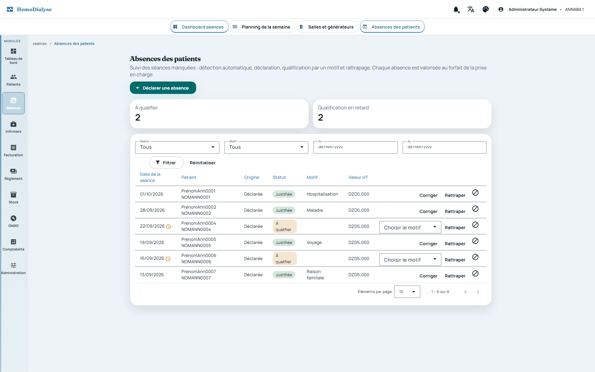
Préfixe
RG-ABS. Le système détecte chaque nuit les séances prévues non réalisées, valorise la perte de chiffre d'affaires, alerte sur les absences à qualifier et sur celles qui sont en retard, et clôture les corrections avec la facturation. Sources :AbsencePatient,MotifAbsence,StatutAbsence,ValeurAbsence,ValorisationAbsenceService,AbsencePatientService,AbsencePatientScheduler,AbsenceDonneesJdbcAdapter,AbsencePatientRestController.
Une absence est celle d'un patient à une séance prévue ; il y a au plus une absence par patient et
par jour
(ABSENCE_EXISTANTE, y compris si la précédente a été annulée).
Source : AUTOMATIQUE (détectée par le contrôle nocturne) ou DECLAREE (saisie par un utilisateur).
Statuts : A_QUALIFIER → JUSTIFIEE ou NON_JUSTIFIEE (qualification par un motif) → RATTRAPEE
(séance de
remplacement) ; ANNULEE possible à tout moment. Une absence rattrapée ou annulée n'est plus modifiable
(ABSENCE_NON_MODIFIABLE) ; l'annulation est définitive.
Motifs : hospitalisation, maladie, voyage, transport, familial, refus du patient, décès, autre (tous
justifiants) et
« non justifiée » (seul motif non justifiant, donne le statut NON_JUSTIFIEE).
Le motif « autre » exige un commentaire (ABSENCE_COMMENTAIRE_REQUIS). Le motif est obligatoire à la
qualification (ABSENCE_MOTIF_REQUIS).
Une absence est comptabilisée (perte de séance et de chiffre d'affaires) tant qu'elle est à qualifier, justifiée ou non justifiée ; elle ne l'est plus une fois rattrapée ou annulée.
Le patient doit exister dans le centre (PATIENT_INTROUVABLE).
La date de la séance manquée ne peut pas être future (ABSENCE_DATE_FUTURE) ni plus ancienne que
60 jours
(ABSENCE_DELAI_DEPASSE).
Une absence ne peut être déclarée à une date où le patient a une séance réalisée
(ABSENCE_SEANCE_REALISEE) :
est réalisée une séance au statut VALIDEE, SIGNEE ou FACTUREE.
Une déclaration avec motif est qualifiée d'emblée ; sans motif elle reste « à qualifier ».
La déclaration est possible depuis l'écran de suivi des absences (choix du patient par saisie assistée, motif en ligne, erreurs affichées dans le formulaire) et depuis le planning de la semaine.
Qui déclare. La déclaration d'une absence est réservée à
ADMIN, SECRETAIRE et INFIRMIER
(refus d'accès côté serveur pour tout autre profil). Le médecin ne déclare pas l'absence d'un
patient : son
planning
est en lecture seule (aucun bouton de déclaration, ni sur le planning, ni sur l'écran
de suivi des absences,
RG-PLN-104) ;
il consulte le suivi et garde la correction d'une absence déjà qualifiée (RG-ABS-020).
Requalifier une absence déjà qualifiée exige un commentaire (ABSENCE_COMMENTAIRE_REQUIS) et un
profil autorisé :
seuls ADMIN et MEDECIN corrigent une absence déjà qualifiée (ABSENCE_CORRECTION_INTERDITE) ; la première
qualification est ouverte à
ADMIN, SECRETAIRE, MEDECIN, INFIRMIER.
Rattrapage : la date est obligatoire (ABSENCE_RATTRAPAGE_DATE_REQUISE), postérieure à la séance
manquée (ABSENCE_RATTRAPAGE_ANTERIEUR), non future (ABSENCE_DATE_FUTURE) et le patient doit avoir une séance
réalisée à cette date (ABSENCE_RATTRAPAGE_SANS_SEANCE). Une séance ne rattrape qu'une seule absence du
patient (ABSENCE_RATTRAPAGE_DEJA_UTILISEE). La perte n'est alors plus comptabilisée. À l'écran, l'utilisateur
choisit la séance dans une liste (GET /absences-patients/{id}/seances-rattrapage : séances réalisées du patient
après la séance manquée, jusqu'à aujourd'hui, pas déjà utilisées) au lieu de saisir une date ; sans séance éligible,
l'écran renvoie au poste infirmier (le patient doit d'abord venir et être scanné).
Annulation : commentaire obligatoire (ABSENCE_COMMENTAIRE_REQUIS) ; déjà annulée :
ABSENCE_DEJA_ANNULEE ; mêmes droits de
correction que RG-ABS-020 pour une absence déjà qualifiée.
Absence inconnue du centre : ABSENCE_INTROUVABLE.
Clôture avec la facturation : toute création, qualification, rattrapage ou annulation est refusée
si une facture du patient couvre
la date de la séance (ABSENCE_PERIODE_FACTUREE).
Chaque modification enregistre l'auteur et l'horodatage ; la déclaration et la qualification enregistrent leurs propres auteur/date.
La valeur d'une absence est figée à sa création : forfait de la prise en charge applicable à la date de la séance (prix HT, comme en facturation), taux du type de TVA actif ce jour-là, montant TTC = HT × (1 + taux/100), arrondi à deux décimales.
Forfait applicable : PEC dont la période effective (ou, à défaut, demandée) couvre la date ; sinon dernier forfait connu de la PEC (effectif sinon demandé). Sans forfait, la valeur est nulle (jamais bloquant). Une TVA exonérée ou absente vaut 0 %.
Prix, taux et montant HT ne peuvent être négatifs (valeurs refusées sinon).
Contrôle quotidien (02:30, tâche AbsencePatientScheduler.controlerAbsences) de chaque centre actif,
sur les 7 derniers jours
(hors aujourd'hui ; une semaine pour absorber un arrêt du serveur) : (1) réconciliation — les absences détectées «
à qualifier » dont la séance a finalement été
réalisée sont annulées avec le
commentaire « Séance réalisée à cette date » ; (2) détection des absences. Un échec sur un centre n'empêche pas
les autres.
Rattrapage au démarrage : à chaque démarrage du serveur, le contrôle (réconciliation +
détection) est rejoué sur les 31 derniers jours de chaque centre, sans notification (la notification suit le
contrôle de la nuit). Idempotent ; désactivable par la propriété app.absences.startup-catchup.
Rattrapage manuel d'une période passée (POST /api/v1/absences-patients/rattrapage-detection,
ADMIN, centre courant) : réconciliation puis détection jour par jour entre deux dates, pour les absences jamais
détectées (mois antérieurs au déploiement, scheduler arrêté, reprise de données). La fin est ramenée à hier ; le début
doit la précéder (ABSENCE_PERIODE_INVALIDE) ; la période ne dépasse pas 366 jours (ABSENCE_PERIODE_TROP_LONGUE).
Retourne le nombre d'absences créées et annulées. Limite : la détection s'appuie sur la fiche patient actuelle ;
un patient dont les jours de dialyse ont été retirés à la libération de sa place (RG-PAT-033) n'est plus détecté pour
ses jours passés.
Un patient est attendu un jour donné si : le jour de la semaine est coché sur sa fiche, il n'est pas « en sommeil », sa date d'admission n'est pas postérieure, sa place n'est pas libérée (patient transféré ou guéri : attendu jusqu'à la date de l'évènement incluse ; décédé ou greffé : plus attendu à cette date ; séjour occasionnel ou vacancier : attendu jusqu'à la fin de séjour incluse ; état de sortie sans date : plus attendu, cf. RG-PAT-032), le centre n'est pas fermé ce jour (férié ou fermeture exceptionnelle) et il n'a aucune séance réalisée ce jour.
La détection est idempotente : aucune absence n'est créée si une absence existe déjà (même annulée) ou si la période est facturée. Les absences détectées naissent « à qualifier ».
Une absence à qualifier est en retard au-delà de 3 jours après la séance manquée.
Quand des absences sont à qualifier, le centre est notifié en temps réel (ABSENCES_A_QUALIFIER,
nombre à qualifier, nombre en retard)
aux rôles ADMIN, SECRETAIRE, INFIRMIER, MEDECIN. La synthèse (à qualifier / en retard) est consultable à tout
moment.
La liste des absences est paginée et filtrable (statut, motif, patient, période), limitée au centre ;
accès ADMIN, SECRETAIRE,
MEDECIN, INFIRMIER (y compris profils restreints, voir RG-SEC-022/023).
Le suivi de la semaine (dimanche → samedi) renvoie les absences non annulées et les séances réalisées, pour colorer le planning : les séances réalisées (validées par l'infirmier à la présence du patient) s'affichent avec un soleil sur fond jaune.
Les absences alimentent le tableau de bord de la direction (volumes, perte valorisée, taux — voir RG-DIR) sans donnée nominative.
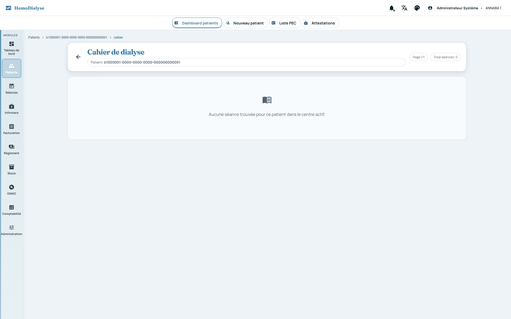
Préfixe
RG-SEA. Sources :Seance,SeanceStatus,SeanceDomainService,SeanceApplicationService,SeanceBillingEligibilityJdbcAdapter,VoletParamedicalDomainService,VoletMedicalDomainService,TensionArterielle,SeanceRestController,VoletMedicalRestController,VoletParamedicalRestController,BonSortieService.
Statuts d'une séance : CREE → VALIDEE (validation infirmière) → SIGNEE (signature médecin) →
FACTUREE
(facturation). Aucun retour en arrière. Statut particulier ABSENT : séance exclue de la facturation depuis la
simulation (RG-FAC-023) ; elle n'est plus validable ni facturable, ne compte pas comme réalisée et n'accepte pas de
volet médical.
Une séance facturée ne peut plus être modifiée : date, forfait, volets paramédical et médical,
consommables (« La seance facturee ne peut plus etre modifiee »). L'entrée de stock liée à une séance facturée est
également immuable (SEANCE_BILLED_STOCK_EXIT_IMMUTABLE).
Une séance appartient à un patient et à un centre ; une séance inconnue du centre : « Seance introuvable ».
Suppression d'une séance (ADMIN seul, écran « Historique des séances » ;
DELETE /api/v1/seances/{id}), tout ou rien : la séance doit exister dans le centre (SEANCE_INTROUVABLE) et ne
pas être facturée (SEANCE_FACTUREE_NON_SUPPRIMABLE : annuler d'abord la facture) ; un motif de 5 à 500
caractères est exigé (SEANCE_SUPPRESSION_MOTIF_INVALIDE). Une séance créée, validée ou signée peut être supprimée.
Effets : les consommables et administrations EPO/fer sortis du stock pour la séance sont restitués (lots
recrédités, mouvements et bons de sortie supprimés, PMP recalculé) ; les volets paramédical et médical et les
administrations EPO/fer de la séance sont effacés ; la séance est supprimée. La suppression est journalisée
(séance, patient, date, statut, motif, auteur, horodatage — table seance_suppression) en plus du journal d'audit
(RG-SEC-050), et notifiée en temps réel (SEANCE_SUPPRIMEE) pour rafraîchir les écrans. Irréversible.
Création : ADMIN ou INFIRMIER. Le patient doit exister dans le centre. La date par défaut est
aujourd'hui.
Le patient doit être facturable à la date de la séance : une prise en charge au statut VALIDEE,
avec un forfait (effectif sinon demandé), dont la période couvre la date, et une attestation de droits couvrant
la date. La période est celle de la période effective (début et fin pris ensemble : sans fin, elle reste ouverte)
ou, à défaut, celle de la période demandée — jamais un mélange des bornes, comme pour la résolution du forfait de
la séance. Sans cela, la séance ne se crée pas, et le message dit ce qui manque réellement : « Le patient doit
avoir une prise en charge valide pour être facturé » quand aucune prise en charge ne couvre la date, « La prise en
charge du patient couvre le … mais n'est pas validée » quand elle existe mais n'est pas validée, ou « La prise en
charge du patient est valide mais aucune attestation de droits ne couvre le … » quand seule l'attestation est
absente ou expirée.
Création par scan de QR (ADMIN, INFIRMIER, SECRETAIRE) : le code est résolu, dans cet
ordre, comme identifiant patient (UUID,
éventuellement après un préfixe xxx:), code patient, numéro d'assurance, puis par comparaison tolérante (sans
espace, tiret ni ponctuation) sur code
patient, numéro d'assurance du patient ou de l'assuré ; QR vide ou introuvable : refus explicite. Si le patient a déjà
une séance ce jour-là, elle est
renvoyée (pas de doublon). Scan par un infirmier (INFIRMIER, ADMIN) : la séance est validée directement —
si une séance CREE existe ce jour-là (par exemple créée par la secrétaire) elle passe à VALIDEE, sinon elle est
créée directement à l'état VALIDEE (RG-SEA-011 reste exigée ; le patient doit en outre être programmé ce jour-là,
voir RG-SEA-048), sans passer par « Modifier → Enregistrer » ; la
signature de l'infirmier est celle de l'utilisateur qui scanne. Un second scan d'une séance déjà VALIDEE, SIGNEE
ou FACTUREE ne change rien (réponse alreadyValidated). Le scan de la secrétaire crée seulement la séance
(CREE) : elle ne peut pas valider (RG-SEA-020). La réponse indique created, validatedNow, alreadyValidated et
l'identité du patient.
La création notifie le centre en temps réel (séance créée) ; la réponse indique le générateur affecté au patient et son état (statut GMAO) pour avertir l'équipe d'un générateur indisponible.
Modification de la date d'une séance : ADMIN seul, interdite si facturée ; sans date, aujourd'hui.
La validation (ADMIN, INFIRMIER) fait passer la séance de CREE à VALIDEE, date la validation
et enregistre la signature de l'infirmier. Une
séance déjà validée ou signée n'est pas rejetée mais ne change pas de statut ; une séance facturée est refusée. Autre
statut que CREE : « La seance n'est pas en statut CREE ».
À la validation, la séance mémorise la place où elle a eu lieu (salle, créneau, générateur) :
le déplacement temporaire du patient pour ce jour s'il en a un (RG-PLN-096), sinon sa place habituelle ; rien si le
patient n'est pas placé. Une place déjà mémorisée n'est jamais remplacée, même si la séance est revalidée (ajout de
consommables) ou si la place ou les jours du patient changent ensuite. Les séances validées avant cette règle n'ont
pas de place mémorisée (SeancePlaceJdbcAdapter, migration V26).
À la validation, les consommables utilisés sont sortis du stock automatiquement : chaque ligne doit désigner un article existant du centre et actif (« Article inactif »), la quantité est prélevée sur les lots disponibles par FEFO (lot le plus proche de la péremption d'abord) ; si le stock disponible est insuffisant, la validation est refusée avec la quantité manquante (« Stock insuffisant pour l'article … »). Un bon de sortie valorisé au PMP est créé (motif SEANCE), de façon atomique avec le changement de statut.
Retirer un consommable d'une séance (ADMIN, INFIRMIER) restitue le stock ; modifier sa quantité
(positive) met à jour la ligne du bon de sortie unique de la séance (RG-SEA-025), dont les lots sont
resélectionnés
au FEFO. Interdit si la séance est facturée. Chaque changement notifie le centre.
Une séance = un seul bon de sortie « SEANCE » : à la validation (RG-SEA-021) ou, pour une
séance déjà validée, dès le premier article ajouté (ADMIN, INFIRMIER ; POST /seances/{id}/consommables),
le bon est créé avec son numéro de pièce ; chaque ajout, modification de quantité ou retrait met à jour ce même
bon (lignes, lots et mouvements recalculés par FEFO, stock rendu restitué) au lieu de créer une sortie par article.
Article actif exigé pour une quantité qui augmente, quantité d'ajout strictement positive ; autorisé pour une séance
VALIDEE ou SIGNEE, refusé si facturée (« La seance facturee ne peut plus etre modifiee ») ou non validée.
Les administrations EPO/fer gardent leur propre bon numéroté (poste « ADMINISTRATION »). Chaque saisie notifie le
médecin (RG-NOT-004).
Poste infirmier (écran « Séances » ; le médecin seul n'y a pas accès, il passe par son tableau de
bord) : un seul écran pour scanner, choisir le patient dans la file du jour (séances du
jour avec leur statut : à valider, validée, signée, facturée, absent) et saisir la séance en quatre étapes —
constantes (avec le poids sec prescrit), consommables, anémie, remarques. Les constantes s'enregistrent à la sortie de
chaque champ et les remarques après une courte pause de frappe, sans bouton « Enregistrer » ; une séance facturée est
en lecture seule. Les consommables les plus sortis du jour dans le centre sont proposés en un toucher (+1 unité,
RG-SEA-025). Une alerte non bloquante signale un générateur affecté dont l'état n'est pas « en service ». Les
statistiques et le tableau des séances sont dans l' historique (RG-SEA-029), accessible depuis le poste. La
secrétaire voit la file et scanne mais n'ouvre pas la saisie clinique. L'écran est responsive : une
colonne (file puis séance) sur mobile, deux colonnes sur tablette, toutes les sections visibles sur PC.
L'habillage suit la charte de l'application (thème actif, titres Fraunces, cartes vitrées, indicateurs du jour).
Sur PC, un panneau de contexte rappelle les dernières séances du patient (RG-SEA-028). L'en-tête de la séance ouverte
propose d'afficher et d'imprimer le badge du patient avec son QR code (le même qu'à la liste des patients).
Source :
SeanceStationComponent, QrScannerComponent.
Validation oubliée : une séance restée CREE après son jour n'est pas réalisée (RG-ABS-041) :
la détection de la nuit compte le patient absent (« à qualifier ») et la perte est valorisée. La régularisation se
fait en deux temps : (1) l' administrateur consulte, dans « À régulariser » du poste infirmier, les séances
CREE des 7 derniers jours (les plus anciennes d'abord, jusqu'à 50) et déverrouille pour régularisation
(POST /seances/{id}/deverrouiller-regularisation, ADMIN seul) celles dont il est sûr qu'il s'agit d'un oubli ;
seule une séance d'un jour passé restée CREE peut l'être (SEANCE_DEVERROUILLAGE_INVALIDE), l'action est
idempotente et notifie les infirmiers (SEANCE_DEVERROUILLEE) ; (2) la séance déverrouillée devient visible de
l' infirmier dans son bloc « À régulariser » (il ne voit que celles-là, jamais les autres) et il peut la valider.
L'infirmier ne valide librement que les séances du jour : valider une séance d'un jour passé non déverrouillée est
refusé par le serveur (SEANCE_REGULARISATION_NON_DEVERROUILLEE) ; l'administrateur valide toujours. La secrétaire
ne voit pas le bloc. Un rappel est envoyé chaque jour à 07:00 (SeanceRegularisationScheduler, après la
détection des absences de 02:30) à l'administrateur de chaque centre qui a de telles séances pas encore
déverrouillées : nombre et date de la plus ancienne (notification SEANCES_A_REGULARISER, ADMIN seul ; rien
n'est envoyé s'il n'y en a aucune). Une fois validée, la séance compte comme réalisée et
l'absence détectée à tort est annulée à la réconciliation suivante (RG-ABS-040, commentaire « Séance réalisée à
cette date »). Au-delà de 7 jours, la séance reste consultable dans l'historique (RG-SEA-029).
Navigation entre patients du poste infirmier : après un scan réussi, le poste se positionne
automatiquement sur la séance du patient scanné (étape « constantes »). Depuis une séance ouverte de la file du jour,
les boutons « Patient précédent » / « Patient suivant » ouvrent le voisin dans l'ordre de la file sans repasser par la
liste (désactivés aux extrémités, rang « n / total » affiché) ; ils sont masqués pour une séance hors file (ex. séance
à régulariser) ou lorsqu'il n'y a qu'un patient. La saisie en cours est enregistrée avant le changement. Source :
SeanceStationComponent, PatientPagerComponent.
Séance hors planning : le scan qui doit créer la séance du jour (aucune séance n'existe
encore ce jour-là ; une séance existante est simplement renvoyée) vérifie que le patient est attendu à la date,
avec les mêmes critères que la détection des absences (RG-ABS) : la date est un de ses jours de dialyse, le centre
est ouvert (ni jour férié ni fermeture exceptionnelle), le patient n'est ni en sommeil, ni admis plus tard, ni
sorti (transféré, guéri : attendu jusqu'au jour de sortie inclus ; décédé, greffé : jusqu'à la veille ; occasionnel ou
vacancier : jusqu'à la fin du séjour incluse). Sinon, rien n'est créé et le serveur répond 422 avec le motif :
SEANCE_HORS_PLANNING_JOUR (pas un jour de dialyse), SEANCE_HORS_PLANNING_PATIENT (patient non attendu) ou
SEANCE_CENTRE_FERME (centre fermé). L' infirmier (et l'administrateur) peut alors confirmer en renvoyant le
scan
avec un motif — RATTRAPAGE, URGENCE ou AUTRE (précision libre obligatoire :
SEANCE_DEROGATION_PRECISION_REQUISE ; motif absent ou inconnu : SEANCE_DEROGATION_MOTIF_REQUIS) : la séance est
créée
et validée, marquée « hors planning » avec son motif (poste infirmier, historique des séances). Un jour de
fermeture n'est franchi que par l'administrateur (la confirmation d'un infirmier reste refusée par
SEANCE_CENTRE_FERME). La secrétaire ne peut jamais confirmer : son scan hors planning est refusé avec les mêmes
codes et l'écran lui demande de prévenir l'infirmier. La création manuelle d'une séance (POST /seances) n'est pas
concernée. Source : SeanceDomainService.verifierProgramme, ProgrammationSeance, SeancePlanningJdbcAdapter,
HorsPlanningConfirmComponent.
Historique des séances (GET /seances, tous profils de centre ; écran « Historique des
séances ») : statistiques du mois (séances prévues, présences, absences, total, répartitions par sexe et par âge,
détail et export) et liste paginée des séances du centre. La recherche, les filtres et le tri sont appliqués par
le serveur sur toute la liste, jamais sur la seule page affichée : période (from, to, bornes incluses,
début ≤ fin), statut (un ou plusieurs), texte libre sur le nom, le prénom ou le code du patient (tous les mots
doivent correspondre), tri sur la date, le patient, le code, le statut ou la création (liste blanche ; toute autre
colonne retombe sur la date décroissante, avec un départage stable). Réponse {items, total, page, size} ; size
est borné à 500 et la liste est toujours limitée au centre demandé. L'écran est en consultation seule : la saisie se
fait au poste infirmier (RG-SEA-026). Point d'attention : l'ancien écran permettait à l'ADMIN de modifier la
date et le forfait d'une séance (RG-SEA-014 et suivantes) ; ces actions n'ont plus d'écran depuis la refonte
(les points d'accès subsistent). Source : SeanceDomainService.search, SeanceRepositoryAdapter.search,
SeancesHistoriqueComponent.
Raccourcis de consommables du centre : l'ADMIN choisit (au plus 12, sans doublon, articles
actifs du centre, ordre de sélection conservé) les articles proposés en un toucher à l'infirmier
(PUT /seances/raccourcis-consommables) ; la lecture est ouverte à ADMIN, INFIRMIER et SECRETAIRE. Sans
raccourci configuré, l'écran propose les articles les plus sortis du jour (6 au plus). La liste est propre au centre
(isolation stricte), mise en cache par centre et purgée à chaque modification. Source :
SeanceRaccourciDomainService, SeanceRaccourciApplicationService.
Rappel des dernières séances (GET /seances/patient/{id}/recentes, ADMIN, INFIRMIER,
MEDECIN) : les 3 dernières séances du patient antérieures à la séance ouverte (10 au plus, de la plus récente à
la plus ancienne) avec leurs constantes — poids avant/après, perte de poids, tension, durée, ultrafiltration.
Limité au centre de la session. Source : SeanceDomainService.recentByPatient.
La date d'une sortie de stock rattachée à une séance est immuable
(SEANCE_STOCK_EXIT_DATE_IMMUTABLE).
Valider à nouveau une séance déjà validée avec une liste de consommables retraite ces consommables (nouvelle sortie) : l'idempotence ne porte que sur le statut. L'interface n'expose pas ce cas ; à protéger côté serveur. L'ajout d'un consommable après validation passe par RG-SEA-025.
Volet paramédical (ADMIN, INFIRMIER, SECRETAIRE) : poids avant/après, tension avant/après,
durée, débit sang, ultrafiltration, anticoagulant, type de
dialysat, incidents. Les poids saisis respectent RG-TRV-032 (> 0, ≤ 500 kg). Une tension est normalisée au format
systolique/diastolique en mmHg ; chaque valeur entre 20 et 400 mmHg,
systolique ≥ diastolique. La saisie en centimètres de mercure est acceptée et convertie : dès que la systolique
saisie est ≤ 30, les deux valeurs sont multipliées par 10 (« 12/8 » → 120/80, « 11,5/7 » → 115/70) ; la virgule
ou le point décimal sont tolérés. Enregistrement notifié ; interdit si facturée.
Volet médical (ADMIN, MEDECIN) : prescription, tolérance, examen clinique, résultats
biologiques, ajustements thérapeutiques, conclusion. Il n'est
accessible qu'après validation infirmière (« n'est accessible qu'apres validation infirmiere ») ; interdit si
facturée.
Signature médecin (ADMIN, MEDECIN) : uniquement après validation infirmière, une seule fois
(« deja signee par un medecin ») ; statut SIGNEE.
Forfait de la séance : par défaut celui de la prise en charge ; l'administrateur (ADMIN seul —
l'infirmier ne le modifie pas) peut le surcharger par un forfait du
centre actif (« Forfait introuvable pour le centre actif » sinon), avec enregistrement de l'auteur et de
l'horodatage ; interdit si facturée.
La liste des séances est paginée et peut être filtrée par mois ; accès ADMIN, INFIRMIER,
MEDECIN, SECRETAIRE.
Le journal du jour rassemble les patients dialysés à une date, avec leur statut, et le total des articles sortis ce jour-là par code article.
Tableau de bord mensuel : séances prévues = somme, sur les jours ouvrés échus du mois (hors
fériés et fermetures exceptionnelles ; le futur n'est compté ni en présence ni en absence), des patients programmés ce
jour de la semaine, hors patients « en sommeil », à partir de leur date d'admission et jusqu'à la libération de leur
place (transfert, décès, greffe, guérison, fin de séjour : RG-PAT-032) ; présences = séances réalisées (statuts
VALIDEE, SIGNEE, FACTUREE) du mois ; absences = absences du suivi des absences (RG-ABS) du mois, hors
annulées, qu'elles soient déclarées ou détectées par le contrôle quotidien (plus de calcul « prévues − présences »,
supprimé) ; effectif du mois = patients pris en charge sur la période (admis au plus tard le dernier jour du mois,
place non libérée avant le 1er du mois, hors « en sommeil ») auxquels s'ajoutent ceux qui ont une séance réalisée
dans le mois, qu'ils aient déjà dialysé ou non ; répartition par sexe (M/F/autre) et par tranche d'âge (0-17, 18-39,
40-59, 60+, inconnu) de cet effectif (effectifPatients) ; détail par jour de la semaine ; exports PDF, XLSX et CSV.
Le détail du tableau de bord se demande pour presence (séances réalisées du mois) ou absence
(absences du suivi du mois, hors annulées, avec leur statut) ; toute autre valeur est refusée
(« kind must be 'presence' or 'absence' »).
Calendrier du centre : jours fériés (libellé) et jours de fermeture exceptionnelle (motif) par
mois ; ajout et suppression réservés à ADMIN, bornés au centre.
Ces jours bloquent les séances prévues, les absences automatiques et le planning de la semaine. Point
d'attention : l'ajout utilise une instruction MERGE … KEY propre à H2 ; elle est à remplacer par une requête
compatible PostgreSQL (AGENTS.md §10) avant la
mise en production sur ce moteur, et l'unicité d'un jour férié n'est pas contrôlée.
Cahier de dialyse imprimable (modèle de document CAHIER_DIALYSE, GET /api/v1/cahier-dialyse/{patientId}/imprimer, profils ADMIN, SECRETAIRE, MEDECIN, INFIRMIER, patient du centre
courant uniquement) : une page par séance validée, signée ou facturée (jamais une séance seulement créée), de la
plus récente à la plus ancienne comme à l'écran, éventuellement limitée à une période (from, to incluses). Chaque
page reprend toutes les informations du cahier : date, statut et forfait de la séance (forfait modifié sur la
séance, sinon forfait de la prise en charge couvrant la date, sinon dernier forfait connu) ; saisie infirmier (poids
avant et après, TA avant et après, durée, débit sang, ultrafiltration, type de dialysat, anticoagulant, incidents) ;
consommables sortis du stock avec quantité, unité, valorisation unitaire (PMP) et totale, et valorisation totale de la
séance ; saisie médecin (néphropathie initiale, date de mise en dialyse, statuts des hépatites B et C, observation
globale, conclusion du médecin, prescription en vigueur à la date de la séance — poids sec, EPO, fer — et volet
médical de la séance : prescription, tolérance, examen clinique, résultats biologiques, ajustements, conclusion). Une
information absente est imprimée « - ». Chaque page porte l'en-tête (logo, société, centre, identité du patient) et
le pied de page (édition, pagination, centre, pied de page société) du centre. Refus : patient hors du centre
(PATIENT_INTROUVABLE), aucune séance à imprimer (CAHIER_VIDE), début après la fin (CAHIER_PERIODE_INVALIDE).
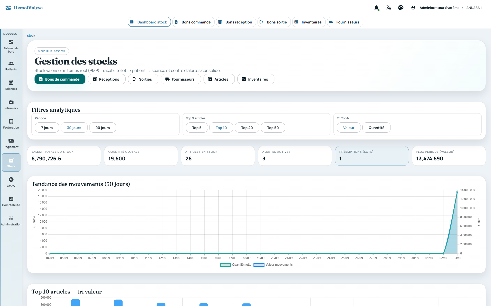
Préfixe
RG-STK. Le système valorise le stock (PMP recalculé en cascade), choisit les lots à sortir (FEFO), gèle les mouvements pendant un inventaire, surveille péremptions, seuils et ruptures, et trace chaque lot jusqu'au patient. Sources :Article,Lot,BonCommande,BonReception,BonSortie,BonReceptionService,BonSortieService,BonCommandeService,PmpCalculator,PmpEngine,PmpRecalculationCoordinator,ValorisationStockCalculator,Inventaire*,InventoryGuardedMovementRepository,StockDashboardService,StockDashboardAdapter,GroupeArticle*,ExpirationAlertScheduler, contrôleursStock*,Bon*,Inventaire*,GroupeArticle*.
Fiche article : un article porte son identité (code, libellé, DCI, forme galénique,
code-barres, référence fabricant), ses unités (unité de stock = unité de sortie, unité d'achat et coefficient
d'achat, dosage par unité — voir RG-STK-006), son achat (fournisseur principal, type de TVA, prix d'achat, seuil
d'alerte, stock maximum), sa conservation et sa sécurité (géré par lot, péremption obligatoire, condition de
conservation AMBIANT / REFRIGERE / CONGELE, produit dangereux, génère des déchets DASRI), ainsi que son stock
courant, son PMP courant et son état « actif » (jamais saisis sur la fiche : ils résultent des mouvements). Code,
libellé et unité de stock sont obligatoires (ARTICLE_CODE_REQUIS, ARTICLE_LIBELLE_REQUIS,
ARTICLE_UNITE_REQUISE) ; le coefficient d'achat doit être > 0 (ARTICLE_COEFFICIENT_ACHAT_INVALIDE), prix, seuil
et stock maximum ≥ 0 (ARTICLE_VALEUR_NEGATIVE) et le stock maximum au moins égal au seuil d'alerte
(ARTICLE_STOCK_MAX_INFERIEUR_SEUIL). Un éventuel type de traitement de l'anémie (EPO ou FER_INJECTABLE,
vide = article ordinaire) alimente les listes de prescription (voir RG-MED). Source : Article.appliquerFiche,
ArticlesComponent.
Dosage par unité de stock : la fiche peut porter « 1 unité de stock = X UI (ou mg…) »,
c'est-à-dire
un dosage (> 0, ARTICLE_DOSAGE_INVALIDE) et son unité, indissociables (ARTICLE_DOSAGE_INCOMPLET). Il relie
l'unité de prescription du médecin à la sortie de stock : quantité sortie = dose ÷ dosage (4 décimales ; ex. 8000
UI avec une seringue de 4000 UI = 2 seringues). Sans dosage, seule une dose déjà exprimée dans l'unité de stock est
acceptée (conversion 1:1). Une dose dans une autre unité que celle du dosage est refusée
(ARTICLE_UNITE_DOSE_INCOMPATIBLE), de même qu'une dose à convertir alors que le dosage n'est pas renseigné
(ARTICLE_DOSAGE_NON_DEFINI) : le stock n'est jamais décrémenté « au hasard ». Comment remplir la fiche (bloc «
Unités et conditionnement ») : l' unité est ce qui se compte en stock et
se sort (seringue, ampoule, pièce…) ; l' unité d'achat et le nombre d' unités de stock par unité d'achat
décrivent la commande au fournisseur (facultatifs) ; le dosage et son unité donnent la quantité de produit
actif d'une unité de stock, dans l'unité de la prescription (UI pour l'EPO, mg pour le fer), et ne se remplissent
que pour ces articles. Exemples : Époétine alfa 4000 UI — unité « seringue », unité d'achat « boîte », 6 unités
par boîte, dosage 4000, unité du dosage « UI » : une prescription de 8000 UI sort 2 seringues (RG-MED-071) ; Fer
saccharose 100 mg — unité « ampoule », unité d'achat « boîte », 5 unités par boîte, dosage 100, unité du dosage
« mg » : une prescription de 200 mg sort 2 ampoules ; Dialyseur FX60 — unité « pièce », unité d'achat « carton »,
12 unités par carton, dosage et unité du dosage laissés vides (aucune conversion). Dès que le dosage et son unité sont
saisis, la fiche affiche la ligne de contrôle « 1 seringue = 4000 UI ». Source : Article.quantiteStockPourDose,
ArticlesComponent.
Le code article est unique par centre sans tenir compte de la casse (ARTICLE_CODE_EXISTANT) ;
un article inconnu du centre est introuvable (ARTICLE_INTROUVABLE). Création, modification et (dés)activation :
ADMIN, PHARMACIEN. L'écran « Articles » liste les fiches par pages (GET /stock/referentiel/articles/page,
page/size), avec recherche sur le code, le libellé, la DCI ou le code-barres et filtre actif / désactivé ; un
article désactivé n'est plus proposé mais son historique reste. Source : StockReferentialRestController,
ArticleCatalogPort.
Un article inactif ne peut plus être sorti du stock (« Article inactif »). Une consommation doit être strictement positive et ne peut dépasser le stock (« Stock insuffisant pour l'article »).
Un fournisseur exige une raison sociale ; un emplacement exige un libellé. Les fournisseurs et emplacements sont propres au centre.
Création d'articles, de fournisseurs et d'emplacements : ADMIN, PHARMACIEN. Lecture des
articles : ADMIN, PHARMACIEN, INFIRMIER, MEDECIN ;
des fournisseurs et emplacements : ADMIN, PHARMACIEN, INFIRMIER.
Les références de pièces sont générées par séquence de centre : BC (bon de commande), BR
(réception), BS (sortie), INV (inventaire).
Un bon de commande naît en BROUILLON avec un fournisseur et des lignes (article, quantité, prix
unitaire) ; ses lignes se remplacent tant qu'il est
brouillon. Le total est la somme des sous-totaux de lignes (montants non négatifs, RG-TRV-030).
Validation : uniquement depuis BROUILLON (« Seul un bon BROUILLON peut etre valide ») et avec au
moins une ligne (« doit contenir au moins une ligne ») ; statut
VALIDE. Il passe à RECU quand un bon de réception issu de lui est validé.
Accès : écriture ADMIN, PHARMACIEN ; lecture + INFIRMIER. Un bon inconnu du centre est
introuvable.
Un bon de réception (BROUILLON → VALIDE) peut être créé librement ou depuis un bon de
commande (lignes reprises, date du jour, fournisseur du bon).
Il exige au moins une ligne à la validation ; seul un bon brouillon se valide.
À la validation, pour chaque ligne : article obligatoire et existant du centre, quantité > 0, un
lot est créé (quantité initiale = restante, PMP = prix
d'entrée) et un mouvement ENTREE daté de la date de réception est enregistré ; le PMP de chaque article touché
est recalculé en cascade ; le bon de commande lié passe
RECU ; le centre est notifié (mouvement de stock).
Article géré par lot : numéro de lot et date de péremption obligatoires. Article non géré par
lot : numéro de lot facultatif, sinon généré (AUTO-<référence du bon>-<rang>).
Correction d'un bon déjà validé : la date des mouvements d'entrée suit toujours la date du bon ; le nombre de lignes ne peut pas changer, l'article d'une ligne ne peut pas être modifié, la nouvelle quantité ne peut être inférieure à ce qui est déjà consommé sur le lot ; le lot et le mouvement sont mis à jour puis le PMP est recalculé sur tout l'historique.
Un article dont le PMP est en cours de recalcul est verrouillé : toute saisie le concernant est refusée (« Recalcul en cours … Saisie temporairement bloquee »).
Accès : écriture ADMIN, PHARMACIEN ; lecture + INFIRMIER.
Un bon de sortie (BS) peut être rattaché à une séance et un patient (poste, date) ; il exige au moins une ligne ; le lot choisi doit appartenir à l'article ; la quantité demandée doit être disponible sur le lot (« Stock insuffisant sur le lot »).
FEFO : pour une sortie automatique (consommation de séance), les lots disponibles sont consommés par date de péremption croissante jusqu'à satisfaire la quantité ; le manque éventuel est signalé (« Stock insuffisant … manque »). Chaque sortie est valorisée au PMP courant de l'article.
Les sorties liées à une séance sont immuables si la séance est facturée
(SEANCE_BILLED_STOCK_EXIT_IMMUTABLE) et leur date ne peut être changée (SEANCE_STOCK_EXIT_DATE_IMMUTABLE).
Corriger un bon de sortie restitue d'abord les quantités aux lots d'origine puis recrée les sorties.
Accès : ADMIN, PHARMACIEN, INFIRMIER. La liste des lots disponibles d'un article est triée
FEFO.
Entrée : nouvelle quantité = quantité + q ; nouvelle valeur = valeur + q × prix ; PMP = valeur / quantité (4 décimales, arrondi demi-supérieur). Sortie : valeur diminuée au PMP courant, PMP inchangé ; si le stock tombe à 0 ou moins, valeur remise à 0 et dernier PMP conservé. Ajustement avec prix : traité comme une entrée ; sans prix : comme une sortie. Mouvement d'inventaire : traité comme une entrée.
Toute réception ou correction d'une pièce passée déclenche un recalcul en cascade de l'historique
de l'article (ordre chronologique) : le PMP après chaque
mouvement et la valorisation de chaque sortie sont réécrits, ainsi que le PMP et la quantité courants de l'article. Le
recalcul massif est un traitement asynchrone suivi par
un identifiant de tâche et un verrou par article (réservé ADMIN, PHARMACIEN pour le lancer ; consultation +
INFIRMIER).
L'écran « explication du PMP » détaille, mouvement par mouvement, l'état avant/après et la formule appliquée.
Valorisation historique d'une période : valeur de début, entrées (valorisées au prix), sorties
(valorisées au PMP qui précède), « autres variations » (inventaires, ajustements sans prix, arrondis = fin − début −
entrées + sorties) et valeur de fin ; elle est mise en cache par centre, période et ensemble d'articles (TTL
CACHE_TTL_STOCK_VALORISATION, vidée à chaque écriture de mouvement).
Les statistiques du tableau de bord stock portent sur 7, 30 ou 90 jours (30 par défaut) : quantité et valeur totales, tendance journalière des mouvements (jours sans mouvement comblés) et « top articles » (10 par défaut, 50 maximum) triés par valeur ou volume.
Un seul inventaire peut être en cours par centre (INVENTORY_ALREADY_IN_PROGRESS). La date est
obligatoire (INVENTORY_DATE_REQUIRED), non future (INVENTORY_DATE_IN_FUTURE), postérieure au dernier inventaire
clôturé (INVENTORY_DATE_BEFORE_LAST) et au moins égale à la date du dernier mouvement
(INVENTORY_MOVEMENTS_AFTER_DATE). Ouverture impossible pendant un recalcul de PMP (INVENTORY_RECALC_RUNNING).
À l'ouverture, le stock théorique est figé : une ligne par lot non épuisé de chaque article actif (triée par article puis FEFO) ; un article en stock sans lot (données anciennes) obtient une ligne sans lot.
Tant qu'un inventaire est en cours, aucun mouvement de stock n'est permis dans le centre
(STOCK_INVENTORY_IN_PROGRESS), ni création, modification ou suppression.
Comptage : quantité ≥ 0 avec 3 décimales au plus (INVENTORY_QUANTITY_SCALE) ; ligne
introuvable : INVENTORY_LINE_NOT_FOUND ; inventaire introuvable :
INVENTORY_NOT_FOUND ; inventaire clôturé/annulé : INVENTORY_NOT_IN_PROGRESS. Un lot trouvé en rayon mais
inconnu s'ajoute (théorique 0, numéro de lot obligatoire pour un
article géré par lot : INVENTORY_LOT_REQUIRED, article inconnu : INVENTORY_ARTICLE_NOT_FOUND, doublon :
INVENTORY_LINE_DUPLICATE) ; seule une ligne ajoutée se retire (INVENTORY_LINE_NOT_REMOVABLE — pour un lot absent,
on compte 0).
Import d'une feuille de comptage (Excel) : lignes rapprochées par identifiant caché, sinon par
code article + n° de lot ; anomalies listées sans bloquer le
reste (article absent, plusieurs lots possibles, ligne déjà renseignée, quantité invalide) ; une cellule vide laisse
la ligne inchangée ; le motif de l'écran est conservé si le
fichier n'en porte pas. La feuille de comptage Excel est celle téléchargée pour l'inventaire : une feuille d'un
autre inventaire est refusée (INVENTORY_SHEET_OTHER_INVENTORY), une feuille sans les
colonnes attendues aussi (INVENTORY_SHEET_INVALID) ; mêmes contrôles de fichier que RG-REF-010. « Reporter le
théorique » reprend la quantité théorique des lignes non comptées.
Clôture : toutes les lignes doivent être comptées (INVENTORY_NOT_COMPLETE, compter 0 pour un
lot absent) et chaque écart justifié par un motif
(INVENTORY_GAP_WITHOUT_REASON). Alors, de façon atomique : les quantités comptées deviennent le stock des lots (lots
trouvés créés ; INVENTORY_LOT_NOT_FOUND si un lot a disparu) ;
tous les mouvements jusqu'à la date d'inventaire (fin de journée UTC) sont clôturés ; un mouvement INVENTAIRE
par lot compté pose le stock de départ au PMP de l'inventaire ;
quantités et PMP de tous les articles sont recalculés à partir de ce seul stock de départ.
Période clôturée : aucun mouvement ne peut être daté au plus tard le jour du dernier inventaire
(STOCK_PERIOD_CLOSED) ; un mouvement clôturé ne peut plus être
modifié ni supprimé (STOCK_MOVEMENT_CLOSED).
Annulation : possible tant que l'inventaire est en cours ; il n'a alors aucun effet sur le stock.
Procès-verbal imprimé via le modèle de document INVENTAIRE_STOCK
(filigrane « PROVISOIRE » tant que l'inventaire est en cours). Lecture/comptage : ADMIN, PHARMACIEN, INFIRMIER ;
ouverture, report, clôture, annulation : ADMIN, PHARMACIEN.
Chaque changement d'état notifie le centre.
Alertes de stock du centre : péremption (lot encore en stock dont la date de péremption est dans
les 30 jours ou déjà dépassée), rupture (article actif dont le
stock est ≤ 0) et seuil (stock > 0 mais ≤ seuil d'alerte). Consultation : ADMIN, PHARMACIEN, INFIRMIER.
Contrôle quotidien à 07:00 (ExpirationAlertScheduler.scanExpirations) : pour chaque centre, les
lots contenant du stock et expirant dans 30 jours sont consignés au
journal technique. Point d'attention : ce contrôle ne produit aujourd'hui ni notification temps réel ni
message ; les alertes visibles sont celles du tableau de bord (RG-STK-060). Il
parcourt aussi les centres inactifs.
Traçabilité par lot : de l'entrée (bon de réception, fournisseur) aux sorties (séances, patients)
pour un numéro de lot donné (ADMIN, PHARMACIEN).
Un groupe regroupe de 1 à 500 articles du centre ; nom obligatoire (100 caractères maximum, espaces superflus réduits), description facultative (500 caractères maximum).
Le nom est unique par centre sans tenir compte de la casse, des accents ni des espaces multiples
(« Kit CNAS » = « KIT CNAS ») : GROUPE_ARTICLE_NOM_EXISTANT.
Un groupe inconnu du centre est introuvable (GROUPE_ARTICLE_INTROUVABLE). Un article d'un autre
centre est refusé (GROUPE_ARTICLE_ARTICLE_INCONNU). La gestion des groupes est réservée à ADMIN.
La valorisation d'un groupe sur une période est restituée à la direction sans donnée nominative (voir RG-DIR).
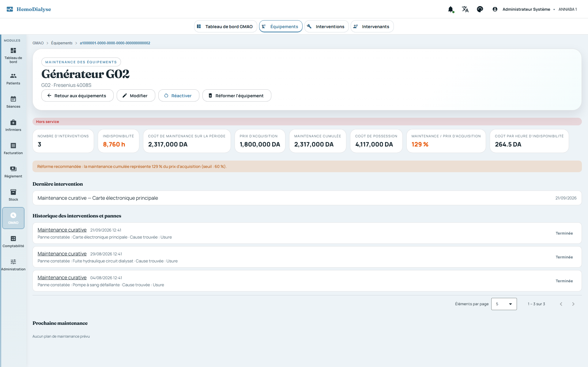
Préfixe
RG-GMA. La GMAO ne se contente pas d'enregistrer : elle calcule le coût de possession et l'indisponibilité de chaque équipement, recommande la réforme quand la maintenance cumulée devient excessive, avertit quand un patient est affecté à un générateur indisponible et relance les interventions et plans en retard. Le générateur de dialyse du parc est l'équipement GMAO : il n'existe pas de second référentiel de générateurs. Sources :Equipement,Intervention,PlanMaintenance,Intervenant,LigneCoutIntervention,DocumentIntervention,IndisponibiliteCalculator,IndicateursIntervention,AideDecisionMaintenance,InterventionEquipementStatutService, contrôleursweb/rest/gmao/*.
Tous les écrans et API GMAO sont réservés à ADMIN et limités au centre de la session : un
équipement, une intervention, un plan ou un intervenant d'un autre centre est
« non trouvé ». La réforme d'un équipement exige l'habilitation GMAO_REFORME, la rectification d'une
intervention l'habilitation GMAO_RECTIFICATION (droits distincts de
l'administration GMAO).
Toute liste GMAO (équipements, interventions, plans, intervenants) est paginée (RG-TRV-020) ; les statistiques du tableau de bord sont des comptages serveur, jamais recalculés côté interface.
Types : générateur de dialyse, station de traitement d'eau, osmose inverse, ultrafiltre, charbon actif, adoucisseur, désinfectant chimique, filtre à particules, pompe d'eau, compresseur d'air, alarme de surveillance, autre.
Création : code, désignation, type, date d'installation obligatoires ; prix d'acquisition non négatif ; le code est unique par centre (« Un équipement avec ce code existe déjà dans ce centre ») ; le code, le type et la date d'installation sont immuables ensuite. La salle de rattachement est facultative.
Statuts : EN_SERVICE, EN_MAINTENANCE, EN_ATTENTE_PIECE, HORS_SERVICE, DESACTIF,
A_REFORMER, REFORME.
Mise hors service : refusée si déjà hors service ou réformé ; réactivation : uniquement depuis
HORS_SERVICE (jamais depuis REFORME) ; observation obligatoire non vide.
Réforme : fin de vie définitive (aucun retour en arrière, aucun changement de statut
ensuite), motif obligatoire ; réservée à GMAO_REFORME. Un équipement
réformé n'est plus compté dans la capacité théorique (RG-PLN-071) ni proposé au placement.
Chaque changement de statut (création, hors service, réactivation, réforme, état saisi par une intervention) est inscrit dans l' historique de statuts (statut précédent, nouveau, motif, auteur, date), source du calcul d'indisponibilité.
Capacité de salle : l'affectation d'un générateur à une salle respecte la capacité de la salle (RG-PLN-061). Toute écriture sur un équipement vide le cache du référentiel des générateurs (le wizard patient voit immédiatement le nouvel état).
Avertissement de sécurité patient (non bloquant) : affecter un patient à un générateur
EN_MAINTENANCE, EN_ATTENTE_PIECE, HORS_SERVICE ou REFORME affiche un rappel dans
le wizard patient et à l'affichage de la séance ; l'enregistrement reste possible.
Types : préventive, curative, urgente, contrôle technique, installation, désinstallation, remplacement de pièce, révision complète. Priorités : normale (défaut), haute, urgente.
Création (statut PLANIFIEE) : équipement du centre, type, date de début, description obligatoires ;
état de l'équipement au moment de l'intervention obligatoire parmi
EN_SERVICE, EN_MAINTENANCE, EN_ATTENTE_PIECE, HORS_SERVICE ; l'échéance éventuelle ne précède pas la date de
début ; symptôme facultatif ; intervenant facultatif.
Démarrage : uniquement depuis PLANIFIEE ; l'équipement prend alors l'état constaté à la création
(avec historique), sauf s'il est déjà dans cet état. Un équipement réformé
ne change plus d'état.
Clôture : uniquement depuis EN_COURS ; actions réalisées obligatoires ; date et heure de
fin obligatoires et postérieures au début ; état de l'équipement après
obligatoire parmi EN_SERVICE, EN_ATTENTE_PIECE, HORS_SERVICE, A_REFORMER ; cause de panne facultative.
L'équipement prend l'état « après ».
Une intervention terminée ne peut plus être annulée ; annuler fixe le statut ANNULEE avec motif
et auteur. Les états REFORME et DESACTIF ne peuvent jamais être fixés par
une intervention.
Rectification (GMAO_RECTIFICATION) : seule une intervention terminée se rectifie ; motif
obligatoire ; l'intervention est rouverte (EN_COURS), la clôture précédente est
conservée dans la chronologie, la date de fin, les états et les lignes de coût automatiques sont réinitialisés
(recalculés à la nouvelle clôture) ; une nouvelle date de début peut être donnée.
Lignes de coût : types pièce, main d'œuvre, intervenant, autre ; libellé obligatoire, quantité > 0, prix unitaire valide ; une pièce peut référencer un article du stock. Ajout possible sauf sur une intervention annulée ; suppression uniquement tant que l'intervention est ouverte (planifiée ou en cours — une terminée se rectifie d'abord). Le coût d'une intervention est la somme de ses lignes.
Valorisation automatique du temps de l'intervenant à la clôture : durée (début → fin, en heures arrondies au centième) × tarif horaire par défaut de l'intervenant ; ligne « Honoraires intervenant » pour un prestataire externe, « Main d'œuvre » pour un interne ; sans effet si le tarif est absent ou nul, si la durée est nulle, ou si une ligne de même nature existe déjà (jamais de double comptage). Pour un intervenant externe, saisir manuellement de la main d'œuvre est refusé.
Pièces jointes d'une intervention : bon d'intervention, facture, photo ou autre ; PDF, PNG ou JPEG reconnus à leur contenu, 5 Mo maximum, fichier non vide, 50 documents au plus par intervention ; nom nettoyé (sans chemin, 150 caractères maximum).
Tâches d'une intervention : A_FAIRE → EN_COURS → COMPLETEE ; description obligatoire ; une
tâche ne se démarre que « à faire » et ne se complète qu'« en cours ».
Une intervention est en retard (relance) si elle est planifiée avec une date de début passée, ou ouverte (planifiée ou en cours) avec une échéance dépassée.
Indicateurs d'une intervention : délai de prise en charge (création → début), durée (début → fin, ou → maintenant si en cours), indisponibilité de l'équipement pendant l'intervention et sa part dans l'indisponibilité des 12 derniers mois (plafonnée à 100 %, vide s'il n'y a eu aucune indisponibilité). Un bon d'intervention imprimable et une chronologie sont disponibles.
Un intervenant porte nom (obligatoire), type INTERNE ou EXTERNE (obligatoire), téléphone, email,
tarif horaire par défaut (non négatif), état actif ; il se désactive (jamais
supprimé). Référentiel propre au centre, distinct des fournisseurs du stock.
Un plan relie un équipement à une désignation, une fréquence et une prochaine date prévue (tous
obligatoires) ; fréquences : hebdomadaire (7 j), bimensuelle (15 j), mensuelle,
trimestrielle, semestrielle, annuelle. Statuts : ACTIF, INACTIF, ARCHIVE.
Exécuter un plan (uniquement ACTIF) enregistre la date et le nombre d'exécutions et recalcule la
prochaine date à partir d'aujourd'hui (+1 semaine, +15 jours, +1/3/6 mois, +1 an).
Désactiver : uniquement un plan actif ; réactiver : uniquement un plan inactif, avec une nouvelle date prévue.
Un plan en retard est un plan actif dont la prochaine date prévue est atteinte ou dépassée ; la liste des plans en retard et le compteur du tableau de bord servent de relance.
Indisponibilité d'un équipement sur une période = durée cumulée passée en EN_MAINTENANCE,
EN_ATTENTE_PIECE ou HORS_SERVICE, calculée par rejeu de l'historique de statuts ;
DESACTIF et REFORME (fin de vie) ne comptent pas.
Fiche équipement (12 derniers mois) : nombre d'interventions, indisponibilité en heures, coût de maintenance sur la période et cumulé depuis l'installation, dernière intervention, prochain plan de maintenance, et analyse de décision.
Analyse de décision : coût de possession = prix d'acquisition + maintenance cumulée ; ratio de maintenance = maintenance cumulée / prix d'acquisition (4 décimales ; vide si le prix est inconnu) ; coût par heure d'indisponibilité = coût de la période / heures d'indisponibilité (vide si aucune).
Réforme recommandée quand l'équipement est encore actif (ni réformé ni désactivé) et soit au
statut A_REFORMER, soit son ratio de maintenance atteint ou dépasse le seuil de
60 % (paramètre serveur hemodialyse.gmao.reforme-seuil-ratio, défaut 0,60, strictement positif). La recommandation
est une aide : la réforme reste une décision humaine d'un détenteur de GMAO_REFORME.
Les indicateurs GMAO de la direction (coûts, indisponibilité, réformes recommandées, alertes critiques) sont décrits au chapitre direction (RG-DIR).
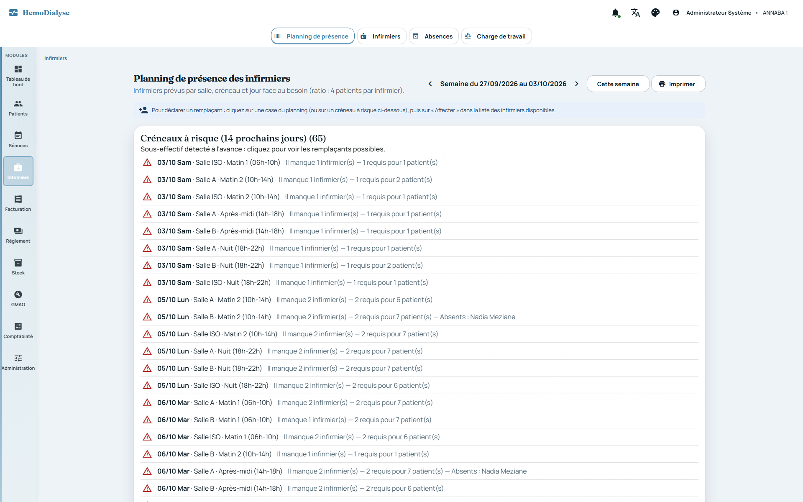
Préfixe
RG-INF. Le système calcule l'effectif requis à partir du ratio de sécurité, détecte à l'avance les créneaux en sous-effectif, propose et classe des remplaçants et équilibre la charge. Sources :Infirmier,AffectationInfirmier,AbsenceInfirmier,RemplacementInfirmier,Presence,PresenceInfirmierService,RemplacantService,ChargeInfirmierService,InfirmierService,AffectationInfirmierService,AbsenceInfirmierService,RemplacementInfirmierService,CompteInfirmierService,MonPlanningInfirmierService,GenerateurMotDePasseTemporaire,PresenceInfirmierScheduler, contrôleursInfirmier*,PresenceInfirmier*,MonPlanningInfirmier*.
Une fiche infirmier porte : matricule, nom (obligatoires), prénom, téléphone, qualification
(INFIRMIER, MAJOR, AIDE_SOIGNANT — obligatoire), indicateur habilité isolement, état actif, et un éventuel
compte utilisateur lié.
Le matricule est unique par centre (INFIRMIER_MATRICULE_EXISTANT) ; fiche inconnue du centre :
INFIRMIER_INTROUVABLE.
Un infirmier désactivé n'apparaît plus dans le planning de présence mais reste au référentiel ; désactiver ou réactiver une fiche reliée à un compte désactive ou réactive aussi le compte, et inversement (un compte activé/désactivé dans l'administration des utilisateurs fait suivre sa fiche ; un compte supprimé délie la fiche sans la supprimer).
Lecture du référentiel : ADMIN, SECRETAIRE, MEDECIN, INFIRMIER ; écriture : ADMIN. La liste
est paginée.
Lier un compte existant : le compte doit exister dans le centre avec le rôle infirmier
(COMPTE_INTROUVABLE), ne pas être déjà relié à un autre infirmier (COMPTE_DEJA_UTILISE), et avoir le même état que
la fiche (COMPTE_ETAT_INCOHERENT) ; la fiche ne doit pas déjà avoir de compte (COMPTE_DEJA_LIE).
Créer un compte depuis la fiche : fiche active uniquement (COMPTE_ETAT_INCOHERENT), identifiant
de 3 à 50 caractères [A-Za-z0-9._-]
(COMPTE_IDENTIFIANT_INVALIDE), identifiant libre (COMPTE_IDENTIFIANT_EXISTANT) ; un mot de passe temporaire de
14 caractères (majuscule, minuscule, chiffre, symbole, sans
caractères ambigus) est généré, affiché une seule fois à l'administrateur et jamais journalisé ; le compte devra
être modifié au premier accès (RG-SEC-025).
Délier une fiche de son compte est toujours possible ; les comptes pouvant être liés sont listés
(paginés). Dans la liste des infirmiers, chaque ligne porte une action « Compte d'accès » (icône lien, ou gestion
de compte si déjà lié) qui ouvre la carte permettant de lier un compte existant, d'en créer un ou de le délier.
Source : InfirmiersComponent.
Une affectation place un infirmier dans une salle, sur un créneau, certains jours de la semaine (au moins un) ; un infirmier peut avoir plusieurs affectations.
La salle et le créneau doivent appartenir au centre (AFFECTATION_SALLE_INCONNUE,
AFFECTATION_CRENEAU_INCONNU) ; affectation inconnue : AFFECTATION_INTROUVABLE.
Jamais deux affectations d'un même infirmier sur le même créneau un même jour
(AFFECTATION_CHEVAUCHEMENT).
Types : congé, maladie, formation, autre. Une absence couvre une période (bornes incluses) qui se superpose au roulement ; la fin ne précède pas le début ; durée maximale 366 jours ; type obligatoire.
Déclaration par l'administration ou le secrétariat (ADMIN, SECRETAIRE) pour un infirmier du
centre ; suppression de même ; la liste est paginée et lisible par
ADMIN, SECRETAIRE, MEDECIN, INFIRMIER. Absence inconnue : ABSENCE_INTROUVABLE.
« Mon planning » : un infirmier connecté déclare lui-même ses absences à venir ou en cours
(fin non antérieure à aujourd'hui, sinon ABSENCE_PASSEE) et l'administration et
le secrétariat sont prévenus ; il ne retire que ses absences non commencées (début strictement postérieur à
aujourd'hui, sinon ABSENCE_NON_ANNULABLE). Il ne voit ni ne modifie jamais
les données d'un autre ; sans fiche liée à son compte : INFIRMIER_NON_LIE. Son planning de la semaine se présente
comme le planning des séances : une grille semaine (salles et créneaux en lignes, jours du dimanche au samedi en
colonnes) ou une vue jour (une carte par salle et créneau, onglets de jours), limitées aux salles et créneaux
où il est affecté. Chaque case indique sa situation (prévu, remplaçant, absent), le nombre de patients de la salle,
le nombre de collègues prévus avec lui (sans nom, un autre infirmier n'est jamais identifié), la salle
d'isolement et le détail des patients placés dans cette salle et ce créneau ce jour-là (nom, générateur,
signalement du risque infectieux, libération prochaine de la place) — uniquement ceux de ses propres cases ; les jours
de fermeture du centre (fermeture hebdomadaire, férié, fermeture exceptionnelle) sont grisés.
L'écran est responsive : défilement horizontal local de la grille, cartes en une colonne sur mobile. Source :
MonPlanningInfirmierService, MonPlanningComponent.
Effectif requis d'une case (salle, créneau, jour) = ⌈patients / patients par infirmier⌉ (0 sans patient) ; le ratio vient du paramétrage du centre (RG-PLN-001, 4 par défaut). Les patients sont ceux placés sur la case (RG-PLN-010).
Les infirmiers prévus d'une case sont ceux du roulement, absences déduites, plus les remplaçants ajoutés ; en salle d'isolement, seuls les infirmiers habilités comptent dans l'effectif.
Statut d'une case : FERME (fermeture hebdomadaire, férié ou fermeture exceptionnelle),
SANS_PATIENT, COUVERT, SOUS_EFFECTIF ; le manque = requis − effectif compté (jamais négatif). Les absents
normalement prévus sont listés avec leur type d'absence.
Conflits : DOUBLE_AFFECTATION (un infirmier prévu dans deux salles sur le même créneau le même
jour) et NON_HABILITE (infirmier non habilité prévu en salle d'isolement).
La semaine de présence (dimanche → samedi) donne le nombre de cases en sous-effectif ; elle est
calculée à la demande, non mise en cache, bornée au centre ; lisible par
ADMIN, SECRETAIRE, MEDECIN, INFIRMIER (le médecin « seul » la lit, RG-SEC-023) et imprimable.
Alertes de sous-effectif : liste des cases en sous-effectif sur un horizon donné (14 jours par défaut), de la plus proche à la plus lointaine, avec les absents responsables.
Contrôle quotidien à 07:15 (PresenceInfirmierScheduler.controlerPresence) : pour chaque centre
ayant des infirmiers actifs, si au moins un créneau est en sous-effectif dans
les 14 jours à venir, l'administration et le secrétariat reçoivent une notification temps réel
(INFIRMIER_SOUS_EFFECTIF : nombre de créneaux et première date). Un centre en erreur
n'empêche pas les autres.
Sur-effectif. Chaque case porte aussi le nombre d'infirmiers en
trop (surplus) : infirmiers
comptés (en salle d'isolement, seuls les habilités comptent) moins l'effectif requis, jamais négatif
; dans une salle
sans patient, tous les infirmiers prévus sont en trop. Le sur-effectif n'est pas un
manque : le statut de la case
reste COUVERT (ou SANS_PATIENT), aucune alerte n'est envoyée ; il est signalé
en jaune avec « +N » sur le planning
de
présence et en « N infirmier (s) en trop » sur le planning des séances, pour réaffecter ces ressources aux
cases en
sous-effectif. C'est toutefois du personnel payé sans activité utile : le contrôle quotidien de
07:15 (RG-INF-046)
prévient aussi l'administrateur (INFIRMIER_SUREFFECTIF) dès qu'une case des 14
prochains jours est en sur-effectif —
y compris une case avec patients dont les infirmiers dépassent le ratio (3 infirmiers pour
4 patients avec un
ratio de 4) — avec le nombre de cases, de vacations en trop et les heures payées sans activité
utile (vacations en
trop × durée d'une vacation des réglages du centre, RG-PLN-098). Ce contrôle est indépendant de celui du
sous-effectif : l'échec de l'un n'empêche pas l'autre. À l' affectation
d'un infirmier à une salle (RG-INF-020),
la
réponse indique les jours de la semaine en cours où elle crée un sur-effectif ; l'écran affiche un
avertissement, sans
jamais refuser ni annuler l'affectation (un échec du calcul de cet avertissement est ignoré).
Pour une case, les candidats exclus sont : les infirmiers absents ce jour-là, ceux déjà prévus sur ce créneau (dans n'importe quelle salle), et, en salle d'isolement, les non habilités.
Les autres sont classés de 0 à 100 : base 40 ; +15 salle connue ; +10 créneau habituel ; +max (0 ; 20 − 4 × séances de la semaine) selon la charge ; +10 jour libre ou −25 si double vacation (déjà prévu sur un autre créneau le même jour) ; +10 habilité isolement pour une salle d'isolement. Les raisons sont affichées : salle connue, créneau habituel, charge faible (≤ 2 séances), jour libre, habilité isolement, double vacation. Départage par nom.
Affecter un remplaçant (ADMIN, SECRETAIRE) : salle et créneau du centre, remplacé éventuel du
centre (INFIRMIER_INTROUVABLE), et le remplaçant doit figurer parmi les candidats
éligibles (REMPLACEMENT_INELIGIBLE) ; un infirmier ne peut se remplacer lui-même ; un remplaçant devenu absent n'est
plus compté ; l'annulation d'un remplacement est possible (REMPLACEMENT_INTROUVABLE sinon).
Charge mensuelle d'un infirmier = séances du roulement (jours d'ouverture du centre, hors jours d'absence) + remplacements effectués dans le mois ; les jours d'absence sont comptés à part ; la moyenne du centre (une décimale) sert de repère d'équité pour répartir les remplacements. La liste est paginée.
Le roulement des infirmiers peut être conçu et les cases en sous-effectif couvertes par
l'optimisation du planning (RG-PLN-080 à 100). L'application d'une proposition remplace le roulement des infirmiers
actifs (ROULEMENT, COMPLET) ou crée des remplacements (COUVERTURE) ; elle respecte les mêmes règles que la saisie
manuelle (jamais deux salles au même créneau le même jour, RG-INF-022 ; absents et non habilités exclus, RG-INF-050).
Le profil de planification d'un infirmier (taux d'activité, compétences pédiatrie et cathéter, RG-PLN-097) et les réglages du centre (durée d'une vacation, temps plein, repos hebdomadaire, RG-PLN-098) sont pris en compte par l'optimisation : un temps partiel ne dépasse pas son quota d'heures, chacun garde son repos hebdomadaire et les patients qui le demandent sont suivis par un infirmier compétent (RG-PLN-099). Ils n'imposent rien à la saisie manuelle du roulement.
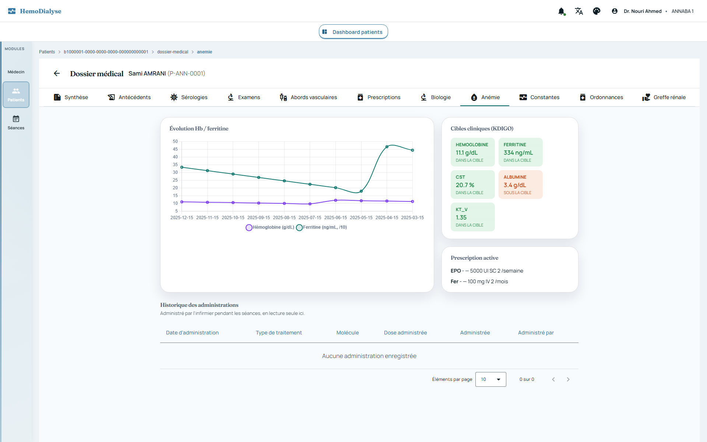
Préfixe
RG-MED. Le dossier médical n'est jamais saisi en double : les constantes viennent du cahier de dialyse, les évaluations KDIGO sont recalculées à la demande. Le système compare chaque résultat aux cibles KDIGO, contrôle chaque jour l'observance des traitements EPO/fer, replace en isolement un patient devenu à risque et alerte le médecin. Sources : agrégats debc-medical(Allergie,Antecedent,Serologie,DemandeExamen,ObservationBiologique,Ordonnance,AdministrationTraitement,AlerteObservance,BilanPreGreffe,EtapeBilanPreGreffe,DonneurVivant,DecisionRcp),Kdigo*Policy,PrescriptionMedicaleDomainService,ResultatAnalyseDomainService,DossierMedicalPatientDomainService,AbordVasculaireDomainService,ObservancePrescriptionScheduler,ObservancePeriodMath,SuiviAnemieQueryService,KdigoGreffeQueryService,FhirExportService, contrôleurs du dossier.
Écriture réservée au médecin (rôle MEDECIN) pour : antécédents, allergies, sérologies, demandes
d'examen, observations biologiques, ordonnances, prescriptions
médicales, résultats d'analyse, abords vasculaires, dossier médical, bilan et donneurs de greffe (le volet médical de
séance est ouvert à MEDECIN et ADMIN, RG-SEA-031). Lecture : MEDECIN et ADMIN (+ INFIRMIER pour dossier
médical, abords vasculaires, prescription active, observance, administrations, étapes de greffe). L'administrateur lit
mais n'écrit pas.
Toute donnée est rattachée à un patient et à un centre ; un patient ou une pièce d'un autre centre est introuvable (RG-TRV-001/002).
Toute consultation du dossier médical d'un patient est inscrite au journal d'audit (RG-SEC-050) ; les écritures aussi.
Les listes cliniques sont paginées (taille par défaut 20, plafond 200) ; les périodes de recherche exigent « du ≤ au » (« La date from doit être <= à la date to »).
Les codes cliniques sont des concepts codés : système (CIM10 diagnostics, LOINC analytes,
ATC médicaments, LOCAL dernier recours), code obligatoire (CONCEPT_CODE_SYSTEM_REQUIRED,
CONCEPT_CODE_REQUIRED) et format valide (CONCEPT_CODE_INVALID_CIM10, CONCEPT_CODE_INVALID_LOINC). Une période
clinique exige une date de début (PERIODE_DEBUT_REQUIS) et une fin non antérieure (PERIODE_FIN_ANTERIEURE).
Types : médical, chirurgical, familial, obstétrical, comorbidité. Statuts : ACTIF, RESOLU,
INACTIF. Patient, centre et type obligatoires (ANTECEDENT_CHAMPS_REQUIS) ; un code
CIM-10 ou un libellé est obligatoire (ANTECEDENT_DIAGNOSTIC_REQUIS) ; la date de début n'est pas future
(ANTECEDENT_DATE_FUTURE).
Un même code CIM-10 ne peut pas être actif deux fois chez un patient ; un antécédent résolu ou inactif n'est pas en conflit (« Un antécédent actif avec ce diagnostic existe déjà pour ce patient »).
« Résoudre » fixe la date de fin et le statut RESOLU ; un antécédent déjà résolu ne se résout pas
deux fois (ANTECEDENT_DEJA_RESOLU).
Catégories : médicament, aliment, environnement, biologique ; criticité BASSE ou HAUTE ; type de
réaction allergie ou intolérance ; vérification SUSPECTEE (défaut),
CONFIRMEE, REFUTEE. Substance codée, catégorie, criticité et type obligatoires (ALLERGIE_CHAMPS_REQUIS) ; date
de constatation par défaut aujourd'hui, jamais future (ALLERGIE_DATE_FUTURE).
Une allergie de criticité haute doit décrire ses manifestations
(ALLERGIE_MANIFESTATIONS_REQUISES) ; déclarer ou passer une allergie en criticité haute émet l'événement
« allergie critique déclarée ». Une consultation dédiée liste les allergies critiques du patient.
Marqueurs : VIH (Ac), AgHBs, AcHBs, AcHBc, AcVHC, ARN VHC, TPHA, CMV IgG/IgM, toxoplasmose IgG/IgM,
EBV IgG/IgM ; résultats : positif, négatif, douteux, en cours. Patient, centre,
marqueur, résultat et date de prélèvement obligatoires (SEROLOGIE_CHAMPS_REQUIS) ; date non future
(SEROLOGIE_DATE_FUTURE).
Un résultat positif impose de documenter la conduite à tenir (SEROLOGIE_CONDUITE_REQUISE), à la
saisie comme à la correction.
Un seul résultat par patient, marqueur et date de prélèvement (« Un résultat existe déjà pour ce marqueur à cette date de prélèvement »). Le résumé du patient présente le dernier résultat de chaque marqueur.
Conséquence automatique : après enregistrement ou correction d'une sérologie, le patient est évalué « à risque infectieux » (dernier résultat positif pour AgHBs, anti-VHC, ARN VHC ou VIH, RG-PLN-012) et, si besoin, replacé en salle d'isolement ou signalé à l'administration (RG-PLN-053). Un positif émet l'événement « sérologie positive détectée ».
Une demande d'examen a une catégorie (biologie, imagerie, fonctionnel, anapath), un caractère urgent
éventuel, un motif et au moins une ligne (DEMANDE_EXAMEN_LIGNE_REQUISE) ;
patient, centre et catégorie obligatoires (DEMANDE_EXAMEN_CHAMPS_REQUIS) ; date non future
(DEMANDE_EXAMEN_DATE_FUTURE).
Chaque ligne d'une demande d'examen exige un code LOINC ou, à défaut, un libellé
(LIGNE_DEMANDE_EXAMEN_REQUISE).
Machine à états : DEMANDE → PRELEVE → RESULTAT_DISPONIBLE → VALIDE ; ANNULE possible
uniquement avant que le résultat soit disponible ; VALIDE et ANNULE sont
terminaux. Toute autre transition : DEMANDE_EXAMEN_TRANSITION_INVALIDE. La validation enregistre la conclusion du
médecin.
Une observation biologique est codée LOINC (OBSERVATION_ANALYTE_NON_LOINC), porte une
valeur numérique avec unité (VALEUR_MESUREE_REQUISE,
VALEUR_MESUREE_UNITE_REQUISE) ou textuelle, jamais les deux ni aucune (OBSERVATION_VALEUR_INVALIDE) ; patient,
centre, analyte et date obligatoires (OBSERVATION_CHAMPS_REQUIS) ; date non
future (OBSERVATION_DATE_FUTURE). Statuts préliminaire, final (défaut), corrigé ; sources saisie directe, import,
dérivée d'un bilan.
Corriger une observation passe son statut à « corrigé » ; une observation dérivée automatiquement
d'un bilan est immuable (OBSERVATION_DERIVEE_IMMUABLE).
Les résultats d'analyse (bilan biologique à colonnes fixes : Hb, Ht, plaquettes, ferritine, CST, EPO endogène, urée pré/post, créatinine, Kt/V mensuel, phosphore, calcium, PTH, albumine, protéines, CRP) portent une date de prélèvement (aujourd'hui par défaut) ; ils alimentent le suivi de l'anémie, l'évaluation KDIGO et les statistiques. La recherche est paginée.
Une ordonnance exige un patient et un centre (ORDONNANCE_CHAMPS_REQUIS) et au moins une ligne
(ORDONNANCE_LIGNE_REQUISE) ; chaque ligne exige un code ATC ou un nom de médicament
(LIGNE_ORDONNANCE_MEDICAMENT_REQUIS) et une posologie (LIGNE_ORDONNANCE_POSOLOGIE_REQUISE) ; durée et quantité
éventuelles strictement positives (LIGNE_ORDONNANCE_DUREE_INVALIDE, LIGNE_ORDONNANCE_QUANTITE_INVALIDE).
Cycle : BROUILLON → SIGNEE → IMPRIMEE, ANNULEE depuis tout statut non terminal
(ORDONNANCE_TRANSITION_INVALIDE sinon). La signature attribue le numéro définitif (ORDONNANCE_NUMERO_REQUIS)
et verrouille le contenu : corriger une ordonnance signée impose de l'annuler et d'en créer une nouvelle. La
réimpression ne change pas le statut.
La prescription médicale fixe les cibles de séance (débit sang Qb, débit dialysat Qd, UF max, durée cible), le type de dialyseur et d'anticoagulant, le poids sec cible (si renseigné : 20 à 300 kg, arrondi au centième), et les traitements EPO et fer injectable (article de stock, dose, voie, fréquence = valeur + unité heure/jour/semaine/mois/année). La prescription la plus récente fait foi ; le poids sec cible en vigueur un jour donné est celui de la dernière prescription datée au plus tard ce jour-là.
Les articles EPO / fer des listes déroulantes sont ceux du stock marqués EPO ou FER_INJECTABLE
(RG-STK-001).
Un abord vasculaire (type, côté, localisation, dates, actif, complications) ne peut être retiré
avant d'avoir été créé (ABORD_DATE_FIN_ANTERIEURE) ; actif par défaut ; la
liste est paginée (taille par défaut 20, plafond 200).
Le dossier médical du patient (néphropathie initiale, date de mise en dialyse, statuts hépatite B/C, observation globale, conclusion) est unique par patient (création puis mise à jour du même dossier).
Une administration (EPO ou fer) porte patient, centre, type de traitement et date
(ADMINISTRATION_CHAMPS_REQUIS) ; si administrée, la dose est obligatoire (ADMINISTRATION_DOSE_REQUISE, dose >
0 DOSE_ADMINISTREE_INVALIDE, unité DOSE_ADMINISTREE_UNITE_REQUISE) ; si non administrée, un motif est
obligatoire (ADMINISTRATION_MOTIF_REQUIS) et
l'événement « écart prescription/administration » est émis. Saisie par INFIRMIER ou MEDECIN.
Une administration rattachée à un article, à une séance et à une dose sort le stock au FEFO,
datée du jour réel de la saisie, via un bon de sortie numéroté (motif
ADMINISTRATION) ; si le stock est insuffisant, l'administration n'est pas créée (pas de trace sans sortie réelle).
La quantité sortie est déduite par le serveur de la dose (UI, mg) et de la fiche article (dose ÷ dosage par
unité, RG-STK-006) : elle n'est plus saisie à la main et toute quantité envoyée par le client est ignorée. Une unité
de dose incompatible avec l'article refuse l'administration (ARTICLE_UNITE_DOSE_INCOMPATIBLE,
ARTICLE_DOSAGE_NON_DEFINI) ; l'écran de l'infirmier affiche la sortie de stock calculée avant l'enregistrement.
À l'enregistrement d'une prescription, la dose d'EPO (UI) et la dose de fer (mg) doivent pouvoir
se convertir dans l'unité de stock de l'article choisi (RG-STK-006) : sinon la prescription est refusée avec les mêmes
codes (ARTICLE_UNITE_DOSE_INCOMPATIBLE, ARTICLE_DOSAGE_NON_DEFINI). Le formulaire de prescription affiche la
sortie
de stock correspondant à la dose saisie. Ainsi unité prescrite et unité de sortie restent conformes. Source :
PrescriptionMedicaleRestController.
Périodes d'observance : la prescription la plus récente découpe le temps en périodes successives
ancrées sur sa date (fenêtre : heure/jour = 1 jour, semaine = 7, mois = 30,
année = 365 jours). Quand la prescription porte une dose (UI pour l'EPO, mg pour le fer), le
calcul est en
quantités : attendu = dose × fréquence ; administré = somme des
doses effectivement administrées dans la
période, dans la même unité ; restant = attendu − administré (≥ 0) ; doses
restantes = restant ÷ dose, arrondi
au supérieur. Une prescription relevée en cours de période (ex. 4000 → 8000 UI après une administration de
4000 UI) laisse donc 4000 UI à administrer, soit un complément : l'infirmier peut le saisir en
séance, la dose
proposée étant exactement le reste. Sans dose prescrite, repli sur le nombre d'administrations
(attendues =
fréquence ; administrées = administrations effectives). L'infirmier voit, en séance, ce qu'il reste à
administrer et
l'échéance (même calcul que l'alerte planifiée). Quand le médecin crée, modifie ou supprime une
prescription, le
poste de l'infirmier qui a ce patient à l'écran se met à jour en temps réel, sans
rechargement (évènement
PRESCRIPTION_CHANGED limité au centre et au patient, absent de la cloche). Il en va de même, pour un
médecin qui a
ouvert le même dossier, de la liste des prescriptions et de l'onglet Anémie (périodes d'observance et
alertes).
Contrôle quotidien à 06:30 (ObservancePrescriptionScheduler.controlerObservance), pour chaque
patient ayant une prescription EPO/fer avec article et fréquence : (1) retard
constaté — la période close compte moins (en quantité, ou en nombre d'administrations sans dose)
que prescrit :
alerte RETARD_CONSTATE, qui explique le constat (traitement, période, prescription «
dose × fréquence »,
attendu,
administré, manque, conduite à tenir ; les champs sont conservés avec l'alerte ; les alertes antérieures gardent
leur
texte d'origine), acquittée
manuellement par le médecin ; (2) rappel d'échéance — il reste des doses et il reste
au plus ⌊fenêtre / 3⌋ jours (1 jour si fenêtre ≤ 2) : alerte RAPPEL_ECHEANCE, résolue automatiquement dès que le
retard est rattrapé. Une alerte déjà ouverte du même type n'est pas dupliquée ;
une notification durable (OBSERVANCE_NON_RESPECTEE, RG-NOT-005) est adressée au rôle
MEDECIN, avec un lien vers
l'onglet Anémie du patient.
Alerte inconnue : ALERTE_OBSERVANCE_INTROUVABLE. Consultation et acquittement : MEDECIN, ADMIN.
Le suivi de l'anémie assemble, pour un patient : les 10 derniers bilans (courbe Hb, ferritine, CST, albumine), l' évaluation du dernier bilan face aux cibles, la prescription active et les 10 dernières administrations.
Cibles (versionnées avec le code, aucune alerte persistée, tout recalculé) : hémoglobine 10 –
11,5 g/dL (KDIGO 2012) ; ferritine ≥ 200 ng/mL ; CST ≥ 20 % ; Kt/V ≥ 1,2 ;
phosphore 2,5 – 4,5 mg/dL, calcium 8,4 – 10,2 mg/dL, PTH 130 – 600 pg/mL (KDIGO 2017 CKD-MBD) ; albumine ≥ 4,0 g/dL.
Statut : SOUS_CIBLE (< borne basse), AU_DESSUS_CIBLE (> borne haute),
DANS_CIBLE, NON_EVALUABLE (valeur absente — une valeur absente n'est pas une valeur hors cible).
Aide à la décision greffe (KDIGO 2020) : risque immunologique d'après le PRA (le pire de classe I et II) : faible < 20 %, intermédiaire 20 – 80 %, élevé > 80 %, non évaluable sinon ; DFG estimé par CKD-EPI 2021 (sans coefficient ethnique) d'après la dernière créatinine, l'âge et le sexe, avec stade G1 (≥ 90) à G5 (< 15) — informatif chez un patient dialysé ; alertes sérologiques pour VIH, AgHBs, AcVHC, ARN VHC et TPHA positifs avec message de conduite. Ces évaluations sont des aides : la décision d'éligibilité reste celle de la RCP et du médecin.
Un bilan pré-greffe par patient, ouvert au premier accès au statut NON_DEBUTE. Machine à
états : NON_DEBUTE → BILAN_EN_COURS | CONTRE_INDICATION_DEFINITIVE ;
BILAN_EN_COURS → ELIGIBLE | CI_TEMPORAIRE | CI_DEFINITIVE ;
ELIGIBLE → INSCRIT_LISTE_ATTENTE | CI_TEMPORAIRE | CI_DEFINITIVE ; INSCRIT_LISTE_ATTENTE → GREFFE_REALISEE | CI_TEMPORAIRE | CI_DEFINITIVE ; CI_TEMPORAIRE → BILAN_EN_COURS | CI_DEFINITIVE ; CI_DEFINITIVE et GREFFE_REALISEE terminaux.
L'inscription sur liste d'attente n'est possible que depuis ELIGIBLE.
Violation : BILAN_GREFFE_TRANSITION_INVALIDE ; statut absent : BILAN_GREFFE_STATUT_REQUIS ; patient ou centre
absent à l'ouverture : BILAN_GREFFE_CHAMPS_REQUIS.
Dates automatiques : début de bilan (au passage en cours, si vide), inscription sur liste d'attente, greffe réalisée = date du jour. Le bilan immunologique (groupe sanguin confirmé, typage HLA, PRA classes I/II) et les notes (contre-indications, conclusion du néphrologue) se mettent à jour séparément.
Une décision de RCP exige une date de réunion et un avis (DECISION_RCP_CHAMPS_REQUIS), date non
future (DECISION_RCP_DATE_FUTURE) ; avis : favorable, défavorable, ajourné ;
prochaine revue facultative ; une décision absente est refusée (DECISION_RCP_REQUISE) ; les décisions s'accumulent
(historique).
Étapes du bilan : catégorie, libellé obligatoires (ETAPE_GREFFE_CHAMPS_REQUIS) ; statuts
A_FAIRE, PLANIFIE, FAIT, NON_APPLICABLE ; le statut est obligatoire (ETAPE_GREFFE_STATUT_REQUIS) ; une étape
faite exige une date de
réalisation (ETAPE_GREFFE_DATE_REALISATION_REQUISE) ; peut lier une demande d'examen ou une sérologie. La
checklist standard (23 étapes : cardiologie, pneumologie, dentaire, ORL, gynécologie,
urologie, digestif, oncologie, psychiatrie, virologie, immunologie, vaccination, nutrition) se génère à la demande ;
le médecin ajoute ou retire des étapes ensuite. Saisie : MEDECIN, INFIRMIER
(suppression : MEDECIN).
Donneur vivant candidat : nom et lien de parenté (conjoint, parent, enfant, fratrie, autre
famille, non apparenté) obligatoires (DONNEUR_VIVANT_CHAMPS_REQUIS) ; statut de
bilan CANDIDAT (défaut), BILAN_EN_COURS, COMPATIBLE, INCOMPATIBLE, EXCLU, RETENU ; crossmatch non fait
(défaut), négatif, positif ; décision finale datée.
Dossier de synthèse greffe exportable en PDF (receveur + donneurs candidats) pour le centre de
transplantation (MEDECIN).
Les constantes (poids, tension, débit, UF, durée) sont une vue longitudinale en lecture seule
du volet paramédical saisi en séance (source unique de vérité), paginée (MEDECIN, ADMIN).
Statistiques du patient (ADMIN, INFIRMIER, MEDECIN, SECRETAIRE) : moyennes médicales (Hb,
Kt/V, ferritine…) et paramédicales sur une période ; UF réelle = ultrafiltration
saisie, sinon perte de poids per-dialytique × 1000 ; tension lue au format « sys/dia » (ou « sys-dia ») ; poids sec
cible en vigueur le jour de la séance ; export CSV et PDF réservé à ADMIN.
Export FHIR R4 du dossier d'un patient (MEDECIN), en lecture seule, sous forme de Bundle
JSON : Patient, Condition (antécédents), AllergyIntolerance, Observation
(résultats d'analyse et observations LOINC), MedicationRequest (ordonnances), Procedure (abords vasculaires). Les
demandes d'examen et les administrations d'anémie ne sont pas encore
exportées (limite connue).
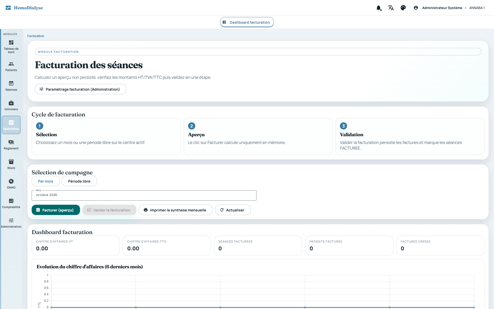
Préfixes
RG-FAC(facturation et TVA),RG-REG(règlements),RG-CPT(comptabilité). Le système n'accepte à la facturation que des séances validées et couvertes, fige prix, TVA et payeur sur chaque facture, calcule le solde de chaque facture et génère les écritures comptables équilibrées. Sources :FacturationDomainService,SeanceEligibleForFacturationSpecification,FactureAggregate,FactureNumberTemplate,TypeTVA,TypeTvaDomainService,SeanceFacturationJdbcAdapter,FactureReglementAggregate,FactureReglementStatusSpecification,ReglementService,ComptabiliteService,GenerateurEcritureComptable,EcritureComptable,MappingComptable,RegleTVA, listeners comptables, contrôleursFacturation*,TvaTypes*,Reglement*,Comptabilite*.
Un type de TVA est propre à un centre : libellé obligatoire, taux de 0 à 100 %, type de prestation obligatoire, indicateur d'exonération, date de début de validité obligatoire, date de fin facultative strictement postérieure au début (« La date de fin doit être postérieure à la date de début »), texte de référence légale facultatif.
La TVA applicable à une date est le type actif couvrant cette date pour la prestation
HEMODIALYSE ; sans type actif, le taux est 0 %. Le taux est figé sur chaque facture au
moment de la validation.
Les types de TVA se désactivent (jamais supprimés physiquement) ; création, modification,
désactivation : ADMIN ; consultation : ADMIN, MEDECIN, SECRETAIRE (liste paginée,
mise en cache par centre, vidée à chaque écriture).
Chaque centre définit un modèle de numérotation des factures (défaut FAC-{YEAR}-{SEQ}) : jetons
{YYYY}/{YEAR}, {YY}, {CENTER} (8 premiers caractères de l'identifiant du centre),
{SEQ} ou {SEQn} (séquence sur n chiffres, 4 par défaut). Le modèle est obligatoire ; la séquence est strictement
positive et propre au centre (et à l'année).
Option « regroupement multi-forfait » (défaut oui) : une facture par patient et par période
(plusieurs lignes de forfaits) ; sinon une facture par patient et par forfait.
Modification des paramètres : ADMIN ; lecture : ADMIN, MEDECIN, SECRETAIRE.
Est éligible une séance du centre, dans la période, au statut VALIDEE ou SIGNEE (la signature
médecin n'est pas exigée) et pas déjà facturée. La période est un mois entier ou
deux dates (fin non antérieure au début).
Forfait appliqué à une séance : le forfait de surcharge posé sur la séance (RG-SEA-033) ; à défaut, le forfait de la prise en charge couvrant la date (effectif sinon demandé, de préférence la PEC dotée d'un forfait effectif, puis la plus récente) ; sans forfait, prix 0.
La simulation (aperçu) construit les factures par groupe patient (ou patient + forfait), regroupe
les séances par forfait en lignes (prix unitaire HT × nombre de séances),
calcule HT, TVA, TTC (arrondis à deux décimales, TVA = HT × taux) et le numéro prévisionnel. Elle n'enregistre
rien. Accès : ADMIN, MEDECIN.
Depuis la simulation, on peut exclure une séance (statut ABSENT, détachée de toute facture ;
uniquement une séance validée/signée non facturée) ou changer son forfait ;
la simulation est recalculée. ABSENT est un statut à part entière des séances (RG-SEA-001) : la séance exclue reste
consultable, n'est plus facturable, n'est plus « réalisée » (RG-ABS-012) et n'accepte pas de volet médical.
Le tableau de bord de facturation d'un mois présente : chiffre d'affaires HT et TTC, séances
facturées, patients facturés, factures créées, ventilation par caisse d'assurance et par état
du patient. Accès : ADMIN, MEDECIN, SECRETAIRE. Une synthèse imprimable est disponible (modèle de document,
chapitre documents).
La validation recalcule la simulation, puis, de façon atomique : crée une facture par groupe
avec un numéro réel de séquence, fige le patient (code, nom, état, numéro
d'immatriculation), le centre payeur et l'agence, la période, la date de facturation (jour de validation) et le taux
de TVA ; marque chaque séance FACTUREE rattachée à sa facture. Si une
séance a changé entre-temps, la validation entière échoue (« Une ou plusieurs seances ne sont plus eligibles »). Sans
séance éligible : 0 facture créée. Accès : ADMIN, MEDECIN.
Une facture a au moins une ligne ; ligne : prix unitaire HT valide et nombre de séances > 0 ; totaux HT/TVA/TTC arrondis à deux décimales ; période valide.
Après validation, un évènement « facturation validée » déclenche la génération des écritures de ventes (RG-CPT-001) ; l'existence d'une facture couvrant une date clôt les absences du patient à cette date (RG-ABS-024) ; les séances facturées deviennent immuables (RG-SEA-002).
Un règlement est rattaché à une facture et à un centre : montant non nul (un montant négatif est
accepté et correspond à un remboursement ou à une correction), date obligatoire, auteur (« system » par défaut), code
REG- + 8 caractères généré. Accès : ADMIN, SECRETAIRE.
Situation d'une facture = comparaison du montant facturé et du total réglé : NON_REGLEE (rien
de réglé, reste = total), PARTIELLEMENT_REGLEE (reste > 0), REGLEE (soldée ;
si le réglé dépasse le facturé, la situation est « trop-perçu » et le montant excédentaire est affiché). Les montants
sont arrondis au centime.
La recherche et le tableau de bord des règlements portent sur une année (2000 à 3000) et facultativement un mois (1 à 12), une caisse, une agence ou un centre payeur ; les listes sont paginées (page ≥ 0, taille > 0) et exportables en Excel ou PDF.
Chaque règlement enregistré déclenche la génération d'une écriture de trésorerie (RG-CPT-002).
Écriture de ventes (journal VE) par facture : débit du compte client (411xxx), crédit du compte
de ventes (706) pour le HT, crédit de la TVA collectée (44571) si la TVA est > 0 (dérivée de TTC − HT si le total de
TVA manque) ; date de l'écriture = fin de la période facturée (jamais la date d'émission) ; axes analytiques
centre et type de tiers ; statut VALIDEE. Idempotence : une facture n'a qu'une écriture (recherche par pièce
source).
Écriture de règlement : journal banque BQ (débit 512) ou caisse CA (débit 530, si le mode
est « caisse ») ; crédit du compte client ; montant en valeur absolue ; une écriture par
règlement (idempotence par identifiant de règlement). Le mode par défaut du règlement enregistré est « banque ».
Toute écriture comporte au moins deux lignes et doit être équilibrée (total débit = total
crédit à deux décimales : ECRITURE_DESEQUILIBREE) ; compte SCF obligatoire, débit et
crédit non négatifs ; numéro de pièce par journal et par année.
Statuts : BROUILLON → VALIDEE → EXPORTEE. Une écriture exportée est immuable
(ECRITURE_EXPORTEE_IMMUABLE) ; seules les écritures validées sont exportables (EXPORT_ECRITURE_NON_VALIDEE) ;
l'export marque les écritures validées comme exportées. Écriture inconnue : ECRITURE_INTROUVABLE.
Clôture de période (mois) : réservée à ADMIN ; une période déjà clôturée ne se reclôt pas
(PERIODE_DEJA_CLOTUREE) ; aucune écriture ne peut être générée dans une période clôturée (PERIODE_CLOTUREE).
Lorsque la période d'un règlement est clôturée, le règlement reste enregistré mais aucune écriture n'est générée
(avertissement journalisé).
Plan de comptes par centre (MappingComptable) : comptes ventes, clients (patient, CNAS, CASNOS,
mutuelle, autre), banque, caisse — tous obligatoires ; valeurs par défaut :
706, 411100, 411200, 411300, 411400, 411500, 512, 530, 44571. Règles de TVA comptables versionnées dans le temps
(type de prestation, taux ≥ 0, exonération, début de validité obligatoire).
Reconstruction (rejeu) des écritures de factures et règlements existants sur une période,
réservée à ADMIN ; l'idempotence évite tout doublon. Consultation des écritures :
ADMIN, SECRETAIRE (paginée) ; validation, export, mapping, règles TVA, clôture : ADMIN.
Les écritures sont aujourd'hui générées avec le type de tiers AUTRE : toutes
les créances sont imputées au compte client « autre » (411500) quel que soit le payeur ;
les comptes CNAS, CASNOS, mutuelle et patient du plan de comptes ne sont pas encore alimentés automatiquement.
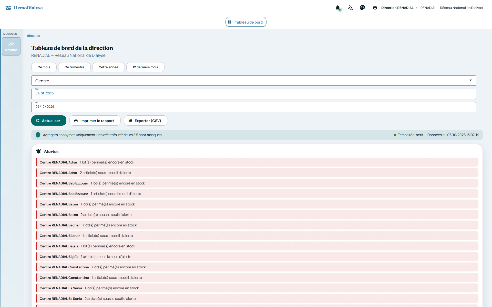
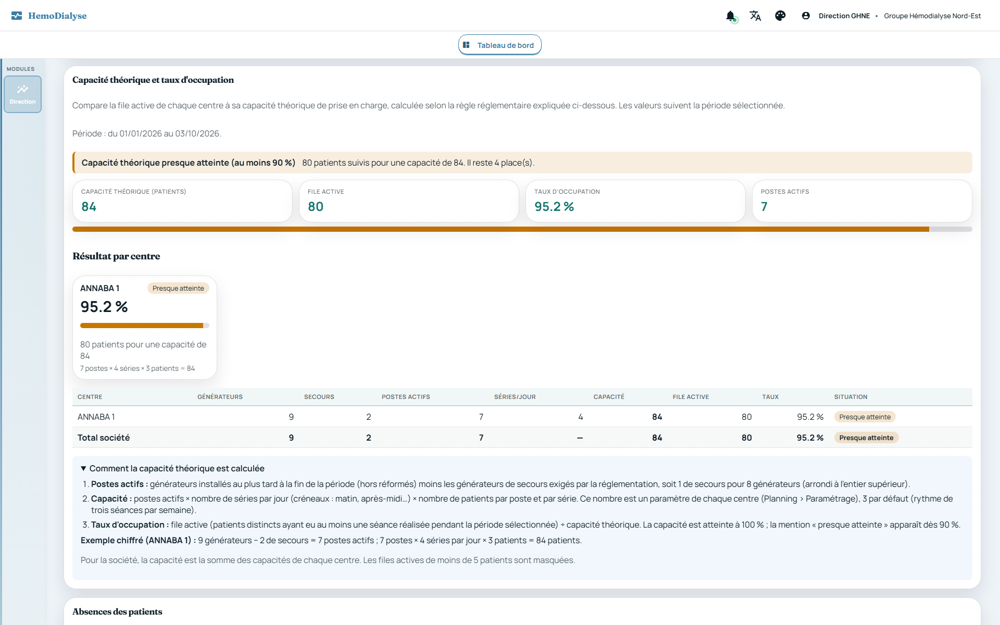
Préfixe
RG-DIR. La direction voit tous les centres de sa société sans jamais voir un patient : le système consolide, compare à la période précédente, lève des alertes et diffuse les changements en temps réel. Sources :DirectionDashboardRestController,DirectionSnapshotRestController,AnonymityPolicy,DirectionAlertPolicy,DirectionAlertHistoryService,DashboardDiff,Direction*QueryService,DirectionSnapshotService,DirectionRealtimeService,DirectionReportPdfService,DirectionAccessGuard, schedulersDirection*.
Les routes /api/v1/direction/** sont réservées au rôle DIRECTION, en lecture seule ; la
société est déduite de la session (jamais d'un paramètre) et revérifiée à chaque
appel (RG-SEC-021, RG-SEC-030). Aucune requête n'est exécutée hors des centres de la société (filtre
center_id IN (centres de la société)).
Toutes les réponses sont sans mise en cache (no-store).
Période : par défaut du 1er janvier de l'année en cours à aujourd'hui ; la date de début doit
précéder la date de fin (PERIODE_INVALIDE) et l'amplitude ne dépasse pas 5 ans
(PERIODE_TROP_LONGUE). Tous les chiffres d'un écran (sauf mention contraire) sont ceux de la période choisie.
Le tableau de bord s'ouvre sur le mois en cours (du 1er du mois à aujourd'hui) : le raccourci actif (« Ce mois »,
« Ce trimestre », « Cette année », « 12 derniers mois ») est mis en évidence (bouton plein, coche, état exposé aux
lecteurs d'écran) et aucun ne l'est pour une période personnalisée ; le bouton a un contour de focus bien visible au
clavier. Source : DirectionDashboardComponent.
Chaque écran présente par centre et pour l'ensemble de la société ; un centre inactif apparaît marqué comme tel.
Seuls des agrégats sortent : aucun nom, identifiant ni ligne de patient. Tout effectif compris entre 1 et 4 est masqué (affiché « < 5 ») ; zéro reste zéro. Le seuil est 5.
Tout taux calculé sur moins de 5 patients est masqué, ainsi que toute valorisation ou variation qui permettrait de déduire l'effectif. Une alerte sur un taux n'est jamais levée sur une valeur masquée ; les variations en temps réel ignorent un indicateur qui devient masqué ou publiable.
Par centre et total : patients (effectif de la période, RG-PAT-037 : un patient sorti avant la période n'est pas compté, un patient sorti pendant ou après l'est), patients « sous KT », séances réalisées de la période (statuts validée, signée ou facturée), factures, chiffre d'affaires HT et TTC, montants encaissés des factures de la période, évolution mensuelle, et comparaison avec la période précédente de même durée (activité et finances seulement : le nombre de patients est un effectif instantané, il n'est pas comparé).
Par centre et total : patients évalués et répartition dans / sous / au-dessus de la cible KDIGO pour l'hémoglobine, la ferritine, le CST, le Kt/V, le phosphore, le calcium, la PTH et l'albumine, en retenant la dernière valeur de chaque patient sur la période ; patients porteurs d'une sérologie positive (VHB, VHC, VIH — dernier résultat positif à la fin de la période) ; patients avec retard d'observance non acquitté ; patients en attente de greffe, en bilan, greffés dans la période ; stock (articles actifs, sous seuil, valeur) et lots périmés ou proches de la péremption. Cibles : RG-MED-081.
Alertes levées par centre :
KTV_CONFORMITE_BASSE (avertissement) : moins de 80 % des patients évalués ont un Kt/V à la cible ;HB_HORS_CIBLE (avertissement) : moins de 50 % des patients évalués ont une hémoglobine dans la cible ;OBSERVANCE_EN_RETARD (avertissement) : au moins un patient a un retard d'observance constaté non acquitté ;STOCK_SOUS_SEUIL (critique) : au moins un article actif dont le seuil d'alerte est renseigné (> 0) est au niveau
ou sous ce seuil (le tableau de bord de stock du centre signale en plus les articles à seuil nul dont le stock est
épuisé, RG-STK-060) ;LOTS_PERIMES (critique) : au moins un lot périmé contient encore du stock ;LOTS_PEREMPTION_PROCHE (avertissement) : au moins un lot expire dans les 90 jours.Un historique des alertes journalise leur apparition et leur résolution (en cours puis résolues, 50 par défaut, borné). Il n'est alimenté que lorsqu'une direction est connectée à la société : c'est un historique récent, pas un audit exhaustif.
Par centre : patients par sexe et par tranche d'âge (0-17, 18-29, 30-44, 45-59, 60+, inconnu), patients / séances / chiffre d'affaires HT par caisse d'assurance (agence figée sur la facture ; « sans caisse » regroupé), et traitement de l'anémie (EPO, fer) ; effectifs faibles masqués.
Par centre et total : équipements, hors service, en maintenance, réformés, interventions en cours, coût de maintenance de la période, heures d'indisponibilité cumulées, patients affectés à un générateur indisponible, équipements dont la réforme est recommandée, et classement des 5 équipements les plus coûteux de la période (complété par tous ceux dont la réforme est recommandée) avec coût de période, coût cumulé, ratio sur le prix d'acquisition et signal de réforme (RG-GMA-062/063). Aucune donnée patient n'est exposée.
Alertes GMAO : GMAO_PATIENT_SUR_EQUIPEMENT_EN_MAINTENANCE (critique, au moins un patient
affecté à un générateur en maintenance, en attente de pièce, hors service, à réformer ou
réformé), GMAO_GENERATEURS_HORS_SERVICE (avertissement), GMAO_REFORME_RECOMMANDEE (avertissement).
Valorisation du stock des groupes d'articles sur la période, par centre et consolidée : stock de début, entrées, sorties valorisées au PMP, autres variations (inventaires, ajustements, arrondis) et stock de fin (RG-STK-043). Un même nom de groupe (insensible à la casse, aux accents et aux espaces) présent dans plusieurs centres est consolidé en un seul groupe.
Par centre et total : nombre d'absences comptabilisées (ni rattrapées ni annulées), répartition
par motif (« non qualifié » pour celles en attente), valorisation (HT et TTC), taux
d'absentéisme = absences / (absences + séances réalisées) en %, et part du chiffre d'affaires HT = valorisation
HT / CA HT facturé de la période. Effectifs et valorisations faibles masqués. Sources : RG-ABS. La répartition par
motif est présentée en tableau (nombre, part, valorisation) et en deux graphiques en anneau : l'un par nombre
d'absences, l'autre par valeur HT ; les motifs masqués (effectif faible) et à zéro n'y figurent pas, et aucun
graphique n'est affiché s'il ne reste aucun motif publiable. Source : DirectionDashboardComponent.
Par centre et total, pour la période : générateurs installés au plus tard à la fin de la période (hors réformés, désactivés, supprimés), générateurs de secours (1 pour 8), postes actifs, séries par jour (créneaux configurés), patients par poste et par série (paramètre du centre, 3 par défaut), capacité théorique, file active (effectif de la période, RG-PAT-037 : patients admis non sortis avant la période, hors « en sommeil ») et taux d'occupation avec son niveau (marge, proche de la saturation ≥ 90 %, atteinte, sans capacité). Le total additionne les centres ; séries et patients par poste n'ont pas de sens consolidé. Une file active de 1 à 4 patients est masquée avec son taux. Voir RG-PLN-070 à 074.
Le dernier jour de chaque mois, les agrégats anonymes de la société sont figés dans un instantané (tâche planifiée le 1er du mois à 02:30, ou à la première demande de la direction pour un mois écoulé). Un instantané n'est jamais recalculé : il garde sa valeur historique même si les données sources sont corrigées ensuite.
Le mois est au format AAAA-MM (MOIS_INVALIDE) ; seul un mois écoulé peut être figé
(MOIS_NON_TERMINE) ; au plus 5 ans en arrière (MOIS_TROP_ANCIEN) ; un instantané absent :
SNAPSHOT_INTROUVABLE. La liste des instantanés et chaque instantané sont consultables ; un rapport PDF est généré
par mois.
Rapport PDF de la période : généré à la demande à partir des mêmes agrégats anonymes, avec l'en-tête (logo, raison sociale, coordonnées) et le pied de page de la société (RG-ORG-022/030).
Les changements d'indicateurs (familles patients, séances, finances, caisses, clinique, anémie, stock, alertes) sont détectés par comparaison d'instantanés recalculés — donc quelle que soit l'origine de la modification (saisie, import, tâche planifiée) — et diffusés à la direction connectée sur le canal de la société (RG-SEC-040). Au plus 60 changements par évènement.
Une écriture dans un centre signale la société « à recalculer » : traitement rapide toutes les secondes pour les sociétés signalées, balayage de sécurité toutes les 10 secondes pour toutes les sociétés suivies. Seules les sociétés ayant au moins une direction connectée sont recalculées.
L'apparition ou la disparition d'une alerte est elle-même un changement diffusé ; les indicateurs masqués par l'anonymat ne sont jamais diffusés.
Préfixes
RG-REF(référentiels),RG-DOC(modèles de documents),RG-MIG(reprise de données). Le système valide chaque ligne avant d'écrire, n'enregistre rien tant qu'un fichier contient une anomalie, rapproche au lieu de dupliquer et défait une reprise qui n'a pas encore servi. Sources :ReferentialKind,ReferentialField,ReferentialValuesValidator,ReferentialAdminDomainService,ReferentialAdminTables,ReferentialAdminRestController,ModeleDocumentCatalog,ModeleDocumentProvisioner,ModeleDocumentPrinter,ModeleDocumentTemplateService,JrxmlSecurityValidator,DocumentRestController,TabularFileReader,MigrationDomainService,MigrationBatch,*Migrator,MigrationRestController.
Référentiels propres à chaque centre, gérés par ADMIN (et SUPERADMIN) : forfaits (code,
libellé, prix), créneaux (code, libellé), salles (code, nom, isolement oui/non, capacité en
générateurs), médecins traitants (nom, prénom, spécialité), caisses (code, nom, type standard/vacancier),
agences (code, nom, caisse), centres payeurs (code, nom, adresse, agence), transporteurs (nom, téléphone).
Les générateurs ne sont plus un référentiel plat : ce sont des équipements GMAO (RG-GMA-010).
Clé naturelle (unicité par centre, casse et espaces ignorés) : le code pour forfaits,
créneaux, salles, caisses, agences, centres payeurs ; nom + prénom pour les médecins ; nom
pour les transporteurs. Un doublon est refusé (ALREADY_EXISTS).
Hiérarchie : une agence référence une caisse, un centre payeur référence une agence ; la
référence se donne par identifiant (formulaire) ou par code (fichier) et doit exister dans le centre
(REFERENCE_NOT_FOUND). Ordre d'import conseillé : ordre 1 (forfaits, créneaux, salles, médecins, caisses,
transporteurs), puis agences, puis centres payeurs.
Validation d'un champ (formulaire comme import) : obligatoire (REQUIRED) après application de
la valeur par défaut ; texte à longueur maximale (TOO_LONG) ; téléphone au format
[+0-9 ().-/] d'au moins 6 caractères (INVALID_PHONE) ; nombre décimal positif ou nul, virgule acceptée, arrondi à
2 décimales, maximum 99 999 999,99 (INVALID_NUMBER, NEGATIVE_NUMBER,
NUMBER_TOO_LARGE) ; entier de 1 à 999 (INVALID_INTEGER, INTEGER_OUT_OF_RANGE) ; liste de valeurs fermée,
accents et casse tolérés (INVALID_VALUE).
Suppression : refusée tant que l'élément est utilisé (REFERENTIAL_IN_USE : patients, prises en
charge, séances, équipements, autres référentiels) ; élément inconnu :
REFERENTIAL_NOT_FOUND. Les salles servent aux patients et équipements ; les forfaits aux PEC et séances ; etc.
La capacité d'une salle (en générateurs) limite l'affectation de générateurs (RG-PLN-061) ; la modifier ne contrôle pas rétroactivement les générateurs déjà affectés. L'indicateur d'isolement est une propriété de la salle (RG-PLN-004).
Les listes sont paginées (20 par défaut, 100 maximum) avec recherche texte. Toute modification vide les caches de référentiels concernés (RG-TRV-040) ; les caches sont par centre.
Formats acceptés : fichiers tableur (Excel) ou texte tabulé ; 5 Mo maximum
(IMPORT_FILE_TOO_LARGE), non vide (IMPORT_EMPTY_FILE), classeur non protégé par mot de passe
(IMPORT_ENCRYPTED_FILE), lisible (IMPORT_UNREADABLE_FILE), format reconnu (IMPORT_UNSUPPORTED_FORMAT). Un
modèle de fichier avec exemples est téléchargeable pour chaque référentiel.
Les colonnes sont reconnues par leur libellé ou leurs alias ; une colonne inconnue est ignorée
(signalée) ; une colonne obligatoire absente rejette le fichier ; 5 000 lignes
maximum (TOO_MANY_ROWS) ; 500 anomalies maximum affichées.
Vérification à blanc (« dry run ») disponible : elle produit le compte rendu (lignes à créer, à
mettre à jour, anomalies) sans rien écrire. L'import réel est tout ou rien : une
seule anomalie (valeur invalide, DUPLICATE_IN_FILE, référence introuvable…) empêche toute écriture. Une ligne dont
la clé naturelle existe met à jour l'élément ; sinon elle le crée.
Documents livrés : fiche signalétique patient, attestation d'ouverture de droit, prise en charge, liste des patients, liste des PEC, liste des attestations, synthèse mensuelle de facturation, ordonnance, procès-verbal d'inventaire, bon d'intervention GMAO, planning de présence des infirmiers, cahier de dialyse (RG-SEA-045). Aucun rapport ne contourne le catalogue : déclaration au catalogue, provisionnement par centre (au démarrage et à la première impression), impression uniquement via le service d'impression des modèles. Un test échoue si un modèle livré n'est pas au catalogue.
Pour chaque centre, un modèle peut être désactivé (jamais réactivé automatiquement) ; sinon le modèle actif imprime la version personnalisée active si elle existe, sinon le modèle d'origine. L'identité de la société et du centre (logo, en-tête, pied de page, coordonnées) est posée par le serveur et ne peut être retirée d'un modèle personnalisé.
Imprimer un document dont le modèle est désactivé pour le centre est refusé
(DOCUMENT_MODEL_INACTIVE) ; toute autre défaillance de génération est signalée par DOCUMENT_GENERATION_FAILED
avec la cause.
Personnalisation (ADMIN, SUPERADMIN) : téléverser une version, voir l'historique, réactiver
une ancienne version, revenir au modèle d'origine, télécharger la source. Toute opération
est bornée au centre ; un modèle d'un autre centre est inexistant ; commentaire de version 500 caractères maximum ;
nom de modèle sûr ([A-Za-z0-9_-]+.jrxml).
Un modèle téléversé est refusé s'il n'est pas sûr (liste blanche) : fichier ≤ 512 Ko
(TOO_LARGE), XML sans DOCTYPE ni entité externe, ≤ 5 000 éléments, éléments de mise en page
uniquement (pas de scriptlet, sous-rapport, graphique), requête SQL strictement identique à celle du modèle
d'origine, paramètres et champs sous-ensemble de l'original avec mêmes types, en-tête
société/centre conservé, seule image autorisée = logo de la société (jamais de chemin ni d'URL), expressions limitées
(≤ 2 000 caractères, grammaire minimale, aucun appel de méthode arbitraire).
Aucune donnée n'est conservée si une anomalie est détectée.
Les modèles utilisent les polices standard uniquement (aucune police externe n'est garantie sur le serveur) ; l'impression produit un PDF ou un HTML.
La liste des modèles (types et modèles du centre) est paginée ; création, modification et suppression
d'un modèle de document : ADMIN, SUPERADMIN ; l'impression est ouverte aux profils
de l'écran appelant.
La reprise se fait par lot (MigrationBatch) propre à un centre : libellé obligatoire
(MIGRATION_LABEL_REQUIRED), système d'origine facultatif, date de début de reprise facultative
non future (MIGRATION_START_IN_FUTURE) qui borne les données historiques (les lignes antérieures sont ignorées avec
avertissement OUT_OF_PERIOD). Un seul lot actif par centre
(MIGRATION_BATCH_ALREADY_OPEN) ; lot inconnu : MIGRATION_BATCH_NOT_FOUND. Réservé à ADMIN (son centre) et
SUPERADMIN.
Statuts d'un lot : EN_COURS (fichiers importables autant de fois que nécessaire, la reprise est
rejouable), TERMINE, ANNULE ; passé TERMINE ou ANNULE, plus aucun import (MIGRATION_BATCH_CLOSED).
Ordre des données : 1 assurés, 2 patients, 3 affectations assuré↔patient, 4 attestations, 5
prises en charge, 6 dossiers médicaux, 7 antécédents, 8 sérologies, 9 abords vasculaires, 10 résultats
d'analyses, 11 séances, 12 soldes d'ouverture. Les référentiels du centre (RG-REF) doivent exister avant les
patients ; chaque donnée rattachée à un patient le désigne par son identifiant d'origine
(PATIENT_NOT_MIGRATED s'il n'a pas été repris).
Mêmes règles de fichier que les référentiels (5 Mo, 5 000 lignes, 500 anomalies, modèle
téléchargeable, alias de colonnes, vérification à blanc, tout ou rien par fichier). Les valeurs de
l'ancien logiciel sont converties par correspondances de valeurs enregistrées par le centre (colonne à liste
fermée seulement : MIGRATION_MAPPING_COLUMN_INVALID, valeur d'origine obligatoire
MIGRATION_MAPPING_SOURCE_REQUIRED, cible dans les valeurs autorisées MIGRATION_MAPPING_TARGET_INVALID) ; entité
non disponible : MIGRATION_ENTITY_UNSUPPORTED.
Assurés : le n° d'assurance est unique sur toute la plateforme : un n° déjà rattaché à un
autre centre est refusé (OTHER_CENTER) ; déjà présent dans le centre, l'assuré est rapproché (mis à jour) et non
dupliqué (MATCHED_EXISTING) ; doublons dans le fichier refusés (DUPLICATE_IN_FILE) ; conflit d'identifiant
d'origine (LEGACY_ID_CONFLICT).
Patients : nom, prénom, n° d'assurance, date de naissance et d'admission obligatoires ; naissance
non future (DATE_IN_FUTURE), admission non antérieure à la naissance (INCONSISTENT_DATES) ; pour un état
transféré, décédé, greffé ou guéri la date d'événement est attendue (EVENT_DATE_MISSING) ; un patient du centre au
même n° d'assurance est rapproché
(MATCHED_EXISTING), un n° pris par un autre patient est refusé (NUMERO_USED_BY_OTHER), un code patient déjà pris
est refusé (CODE_ALREADY_USED), un homonyme probable est signalé (POSSIBLE_DUPLICATE) ; un patient ayant droit
exige le n° de l'assuré (REQUIRED) qui doit exister (ASSURE_NOT_FOUND). Une reprise n'efface jamais une donnée
déjà saisie : seules les valeurs
renseignées sont reportées. Un générateur situé dans une autre salle est signalé (GENERATEUR_OTHER_ROOM).
Affectations assuré↔patient : patient et assuré repris (PATIENT_NOT_MIGRATED,
ASSURE_NOT_FOUND), fin non antérieure au début, une affectation principale ne peut être terminée (PRIMARY_ENDED)
et il n'y a qu'une affectation principale par patient (DUPLICATE_PRIMARY).
Données historiques (attestations, PEC, dossiers médicaux, antécédents, sérologies, abords,
analyses, séances) : une ligne déjà présente (même clé métier) est mise à jour ou, si la
donnée ne l'autorise pas, conservée (ALREADY_PRESENT_KEPT) ; dates incohérentes refusées (INCONSISTENT_DATES),
dates futures refusées (DATE_IN_FUTURE), ligne d'analyse sans aucun résultat refusée (NO_RESULT), élément actif
mais terminé signalé (ACTIVE_BUT_ENDED). Une séance historique est reprise dans son état final : FACTUREE
si elle était facturée dans l'ancien logiciel (jamais
refacturée), sinon SIGNEE (donc facturable) ; une séance déjà présente n'est jamais modifiée.
Soldes d'ouverture : seules les factures non soldées sont reprises avec le montant déjà
encaissé ; montant positif (INVALID_AMOUNT), réglé ≤ facturé (OVERPAID), période et date
valides, factures soldées ignorées (FULLY_PAID), facture déjà encaissée dans la plateforme non modifiable
(PAID_IN_PLATFORM).
Annulation d'un lot : supprime les données créées par le lot (dans l'ordre inverse des
dépendances) et ses correspondances ; refusée si une donnée reprise a déjà été utilisée
(MIGRATION_CANCEL_BLOCKED avec la liste des blocages). Terminer un lot est définitif. Chaque exécution de fichier
est journalisée (fichier, lignes, créations, mises à jour, anomalies, auteur, date).
Préfixe
RG-NOT. Ce chapitre recense, en un seul endroit, tout ce que le système surveille et signale, avec son déclencheur, son destinataire et le chapitre qui en détaille la règle. Sources :NotificationService,WebSocketStockEventPublisher,WebSocketInventaireEventPublisher,WebSocketDirectionPublisher,DirectionRealtimeService, schedulers.
Les évènements d'un centre sont poussés sur /topic/center/{centerId}/events (STOMP sur /ws) avec
un type, le centre, une charge utile et un horodatage ; un évènement peut porter
targetRoles : la cloche de notifications de l'interface ne l'affiche qu'aux utilisateurs ayant l'un de ces rôles
(RG-TRV-060). Sans targetRoles, il sert surtout à rafraîchir les écrans ouverts.
Chaque évènement de centre signale aussi à la direction qu'une donnée a changé (RG-TRV-061, RG-DIR-101).
Les évènements temps réel ne sont pas persistés : un utilisateur hors ligne ne les reçoit pas (sauf les alertes durables, RG-NOT-005) ; les états à surveiller (alertes de stock, absences à qualifier, alertes d'observance, sous-effectif, conflits de planning, alertes de la direction) restent consultables dans leurs écrans.
Journal durable des alertes. Les alertes qui demandent une action sont, en
plus d'être poussées
en
temps réel, enregistrées dans le journal du centre (INFIRMIER_SOUS_EFFECTIF,
INFIRMIER_ABSENCE_DECLAREE,
INFIRMIER_ABSENCE_ENREGISTREE, OPTIMISATION_PROPOSITION, ABSENCES_A_QUALIFIER,
SEANCES_A_REGULARISER,
PATIENT_REPLACE_ISOLEMENT, ISOLEMENT_IMPOSSIBLE,
GENERATEUR_INDISPONIBLE, SEANCES_DEPLACEES,
INFIRMIER_SUREFFECTIF, OBSERVANCE_NON_RESPECTEE) ; les autres
évènements (création, mise à jour) ne valent que sur le moment. À sa connexion, la cloche relit les 50
alertes
récentes (30 derniers jours) destinées à ses rôles dans son centre (GET
/api/v1/notifications, paginé) : une
proposition calculée à 02:30 est donc retrouvée même si personne n'était connecté. La lecture
est propre à chaque
utilisateur (POST /api/v1/notifications/lecture et /lecture-tout) ;
une alerte d'un autre centre ne peut ni se
lire
ni se marquer lue. Le journal ne ralentit ni ne fait échouer l'alerte temps réel (une base indisponible
est ignorée) ;
les alertes de plus de 60 jours sont purgées chaque jour à 03:40 (NotificationPurgeScheduler).
Source :
NotificationService, NotificationJournalPort,
NotificationJournalJdbcAdapter,
NotificationRestController.
Alertes liées à l'exploitation. Un générateur de dialyse en
service qui devient indisponible
(maintenance, attente de pièce, panne, réforme — par la fiche équipement ou une intervention GMAO) alerte
ADMIN et
SECRETAIRE (GENERATEUR_INDISPONIBLE) avec le code du générateur, son nouveau
statut, le nombre de patients dont
c'est
la place habituelle et les cinq premiers noms : leurs séances sont à déplacer. Aucune alerte pour un autre
équipement,
pour un générateur déjà indisponible, ni à la création. Une absence d'infirmier saisie par le
secrétariat alerte
ADMIN (INFIRMIER_ABSENCE_ENREGISTREE) ; saisie par l'administrateur, elle ne
le prévient pas. L' application
d'une
proposition d'optimisation qui déplace des patients ou des séances alerte
MEDECIN et SECRETAIRE
(SEANCES_DEPLACEES). Le contrôle quotidien de sous-effectif (RG-INF-046) prévient aussi MEDECIN
; son contrôle
jumeau
de sur-effectif (INFIRMIER_SUREFFECTIF, RG-INF-047) prévient
ADMIN des infirmiers payés au-delà de l'effectif
requis, avec les heures concernées. Un échec de ces
alertes ne fait jamais échouer l'opération qu'elles accompagnent. Depuis la cloche, un lien mène à l'écran
qui traite
l'alerte : l'optimisation du bon périmètre (Maintenance pour un générateur, Couverture
pour une absence ou un
sous-effectif), la proposition elle-même, ou le planning ; ces liens vers l'optimisation ne sont
proposés qu'à
ADMIN et SECRETAIRE. Source : GenerateurIndisponibleService,
AbsenceInfirmierService,
OptimisationApplicationService.
Toute saisie d'un infirmier prévient le médecin du centre : l'évènement SAISIE_INFIRMIER
(destinataire MEDECIN) nomme l'auteur, le patient, la date et la nature de la saisie — séance créée ou validée
(SEANCE_CREEE, SEANCE_VALIDEE), volet paramédical (PARAMEDICAL), consommable ajouté / modifié / retiré
(CONSOMMABLE_AJOUT, CONSOMMABLE_MODIF, CONSOMMABLE_RETRAIT), traitement anémie (ANEMIE), absence de patient
(ABSENCE). La notification accompagne la saisie sans jamais la faire échouer (une panne du canal temps réel est
ignorée). Les évènements de séance historiques ne visent plus le médecin : il n'est prévenu que par ce message.
Source : SaisieInfirmierNotifier, NotificationService.notifySaisieInfirmier.
| Évènement | Déclencheur | Destinataires (cloche) | Règle |
|---|---|---|---|
PATIENT_CREATED, PATIENT_UPDATED |
création / modification d'une fiche patient | tous (rafraîchissement) | RG-PAT-015 |
ATTESTATION_CREATED, ATTESTATION_DELETED |
attestation de droits | tous | RG-ATT-004 |
PEC_VALIDATED, PEC_CLOSED, PEC_DELETED |
cycle de vie d'une PEC | tous | RG-PEC-003/004/008 |
SEANCE_CREATED |
création / scan d'une séance | INFIRMIER, SECRETAIRE |
RG-SEA-013 |
SEANCE_VALIDATED |
validation infirmière | INFIRMIER, SECRETAIRE |
RG-SEA-020 |
SEANCE_PARAMEDICAL_SAVED |
volet paramédical enregistré | INFIRMIER, SECRETAIRE |
RG-SEA-030 |
SEANCE_MEDICAL_SAVED |
volet médical enregistré | INFIRMIER, MEDECIN, SECRETAIRE |
RG-SEA-031 |
SEANCE_SUPPRIMEE |
séance supprimée par l'administrateur (motif journalisé) | ADMIN, INFIRMIER, SECRETAIRE |
RG-SEA-050 |
SEANCE_CONSOMMABLE_CHANGED |
consommable ajouté / modifié / retiré | INFIRMIER, SECRETAIRE |
RG-SEA-022 |
SAISIE_INFIRMIER |
toute saisie d'un infirmier (voir RG-NOT-004) | MEDECIN |
RG-NOT-004 |
OBSERVANCE_NON_RESPECTEE |
retard constaté ou rappel d'échéance EPO/fer (contrôle de 06:30) | MEDECIN |
RG-MED-073 |
ABSENCES_A_QUALIFIER |
absences détectées à qualifier (contrôle de 02:30) | ADMIN, SECRETAIRE, INFIRMIER, MEDECIN |
RG-ABS-044 |
SEANCES_A_REGULARISER |
séances des 7 derniers jours jamais validées, pas encore déverrouillées (rappel de 07:00) | ADMIN |
RG-SEA-046 |
SEANCE_DEVERROUILLEE |
l'administrateur déverrouille une séance oubliée pour régularisation | INFIRMIER |
RG-SEA-046 |
INFIRMIER_SOUS_EFFECTIF |
créneaux en sous-effectif dans les 14 jours (contrôle de 07:15) | ADMIN, SECRETAIRE, MEDECIN |
RG-INF-046, RG-NOT-006 |
INFIRMIER_SUREFFECTIF |
infirmiers au-delà de l'effectif requis dans les 14 jours, salle sans patient comprise (contrôle de 07:15) | ADMIN |
RG-INF-047, RG-NOT-006 |
INFIRMIER_ABSENCE_ENREGISTREE |
le secrétariat enregistre l'absence d'un infirmier | ADMIN |
RG-NOT-006 |
GENERATEUR_INDISPONIBLE |
un générateur en service passe en maintenance, attente de pièce, panne ou réforme | ADMIN, SECRETAIRE |
RG-NOT-006 |
SEANCES_DEPLACEES |
une proposition d'optimisation appliquée déplace des patients ou des séances | MEDECIN, SECRETAIRE |
RG-NOT-006 |
OPTIMISATION_PROPOSITION |
proposition utile de la replanification nocturne (sous-effectif, maintenance, gain) | ADMIN |
RG-PLN-100 |
INFIRMIER_ABSENCE_DECLAREE |
un infirmier déclare une absence | ADMIN, SECRETAIRE |
RG-INF-032 |
PATIENT_REPLACE_ISOLEMENT |
patient replacé automatiquement en isolement | ADMIN, SECRETAIRE, MEDECIN |
RG-PLN-053 |
ISOLEMENT_IMPOSSIBLE |
patient à risque sans place d'isolement | ADMIN, SECRETAIRE, MEDECIN |
RG-PLN-053 |
STOCK_MOVEMENT_CHANGED |
entrée ou sortie de stock | tous (rafraîchissement) | RG-STK-021, RG-STK-030 |
STOCK_RECALC_LOCKS_CHANGED |
verrous de recalcul de PMP modifiés | tous | RG-STK-024, RG-STK-041 |
STOCK_INVENTORY_CHANGED |
ouverture, clôture ou annulation d'inventaire | rôles du stock (ADMIN, PHARMACIEN, INFIRMIER) |
RG-STK-057 |
| Surveillance | Cadence / fraîcheur | Produit | Règle |
|---|---|---|---|
| Absences de patients | contrôle nocturne 02:30, 3 jours rétro-contrôlés | absences « à qualifier », « en retard » (> 3 jours) | RG-ABS-040 à 044 |
| Observance EPO / fer | contrôle quotidien 06:30 | alertes RETARD_CONSTATE et RAPPEL_ECHEANCE |
RG-MED-073 |
| Sous-effectif infirmiers | contrôle quotidien 07:15, horizon 14 jours | alertes de présence, conflits | RG-INF-045/046 |
| Conflits de planning | à la demande (planning réel) | générateur double, salle surchargée, isolement non respecté, générateur mixte, patients à replanifier | RG-PLN-041/042 |
| Placement incohérent | à l'enregistrement d'une fiche | refus PLACEMENT_* |
RG-PLN-050 |
| Stock | à la demande | péremption (≤ 30 j), rupture, seuil | RG-STK-060 |
| Péremption J-30 | quotidien 07:00 | consignation au journal technique uniquement (pas de message) | RG-STK-061 |
| Disponibilité d'un générateur | à l'affectation d'un patient | avertissement non bloquant | RG-GMA-017 |
| Interventions et plans en retard | à la demande | compteurs de relance | RG-GMA-030, RG-GMA-052 |
| Réforme recommandée | à la demande | fiche équipement, direction | RG-GMA-063 |
| Cibles cliniques KDIGO | à la demande | statut dans / sous / au-dessus de la cible | RG-MED-081 |
| Alertes de la direction | temps réel (1 s / 10 s) | Kt/V, Hb, observance, stock, péremption, GMAO | RG-DIR-031, RG-DIR-051, RG-DIR-100 |
| Licence | à chaque requête (60 s en cache), contrôle en ligne quotidien 03:15 | refus 402 | RG-SEC-032, RG-SEC-036 |
| Journal d'audit | écriture asynchrone (3 s), purge 03:30 | traces des actions | RG-SEC-050 à 053 |
| Instantanés de la direction | le 1er du mois à 02:30 | mois précédent figé | RG-DIR-090 |
Cette annexe rattache chaque contrôleur REST et chaque tâche planifiée du code aux chapitres de règles qui les décrivent (AGENTS.md §18). Un test automatique vérifie qu'aucun contrôleur ni aucune tâche n'est absent de ce tableau (voir
ReglesDeGestionDocumentationTest). Toute nouvelle route ou tâche doit y être ajoutée dans la même modification.
| Contrôleur | Base de l'API | Accès principal | Règles |
|---|---|---|---|
AuthRestController |
/api/v1/auth |
public (connexion, annuaires, rafraîchissement) puis authentifié | RG-SEC-010 à 019b |
InitialSetupRestController |
/api/v1/auth/setup |
public, une seule fois | RG-SEC-039 |
MfaRestController |
/api/v1/auth/mfa |
utilisateur connecté | RG-SEC-027 à 029 |
LicenseRestController |
/api/v1/licenses |
SUPERADMIN (émission, révocation), ADMIN (activation) |
RG-SEC-031 à 037 |
UserRestController |
/api/v1/users |
ADMIN |
RG-SEC-003, 005, 038 |
RoleRestController |
/api/v1/roles |
ADMIN |
RG-SEC-001 à 005 |
AuditRestController |
/api/v1/audit |
ADMIN, SUPERADMIN |
RG-SEC-050 à 053 |
SocieteRestController |
/api/v1/societes |
SUPERADMIN |
RG-ORG-001 à 031 |
SocieteAdminAccountRestController |
/api/v1/societes/{id}/admin-accounts |
SUPERADMIN |
RG-ORG-040 à 043 |
SocieteDirectionAccountRestController |
/api/v1/societes/{id}/direction-accounts |
SUPERADMIN |
RG-ORG-050 à 052 |
SystemRestController |
/api/v1/system |
public (ping) | RG-SEC-036 |
ReferentialRestController |
/api/v1/referentials |
profils de centre (lecture, mis en cache) | RG-REF-001, RG-TRV-040 |
ReferentialAdminRestController |
/api/v1/admin/referentials |
ADMIN, SUPERADMIN |
RG-REF-001 à 012 |
MigrationRestController |
/api/v1/admin/migration |
ADMIN, SUPERADMIN |
RG-MIG-001 à 010 |
DocumentRestController |
/api/v1/documents |
impression ouverte, gestion ADMIN/SUPERADMIN |
RG-DOC-001 à 006 |
ModeleDocumentTemplateRestController |
/api/v1/documents/modeles/{id} |
ADMIN, SUPERADMIN |
RG-DOC-003, 004 |
PatientRestController |
/api/v1/patients |
lecture tous profils de centre, écriture hors médecin « seul » | RG-PAT-001 à 024, RG-ASS-001 à 008 |
PatientStatsRestController |
/api/v1/patients/.../stats |
ADMIN, INFIRMIER, MEDECIN, SECRETAIRE (export ADMIN) |
RG-MED-101 |
CahierDialyseRestController |
/api/v1/cahier-dialyse |
ADMIN, SECRETAIRE, MEDECIN, INFIRMIER |
RG-SEA-045 |
MouvementPatientRestController |
/api/v1/mouvements-patients |
ADMIN, SECRETAIRE, MEDECIN, INFIRMIER |
RG-PAT-034, 035 |
PecRestController |
/api/v1/pec |
profils de centre (validation ADMIN) |
RG-ATT-001 à 004, RG-PEC-001 à 010 |
DashboardRestController |
/api/v1/dashboard |
profils de centre | RG-PEC-010 |
SeanceRestController |
/api/v1/seances |
ADMIN, INFIRMIER, MEDECIN, SECRETAIRE selon l'action |
RG-SEA-001 à 044 |
SeanceSuppressionRestController |
/api/v1/seances/{id} (DELETE) |
ADMIN |
RG-SEA-050 |
SeanceStationRestController |
/api/v1/seances/raccourcis-consommables, /patient/{id}/recentes |
ADMIN (écriture), INFIRMIER, SECRETAIRE, MEDECIN selon l'action |
RG-SEA-026 à 029 |
VoletParamedicalRestController |
/api/v1/seances/{id}/volet-paramedical |
ADMIN, INFIRMIER, SECRETAIRE |
RG-SEA-030 |
VoletMedicalRestController |
/api/v1/seances/{id}/volet-medical |
ADMIN, MEDECIN |
RG-SEA-031 |
AbsencePatientRestController |
/api/v1/absences-patients |
lecture et suivi tous profils ; déclaration ADMIN, SECRETAIRE, INFIRMIER
|
RG-ABS-001 à 052 |
PlanningAffectationRestController |
/api/v1/planning/affectations |
ADMIN, SECRETAIRE, MEDECIN, INFIRMIER |
RG-PLN-020 à 036 |
PlanningParametresRestController |
/api/v1/planning/parametres |
lecture tous, écriture ADMIN |
RG-PLN-001 à 006 |
PlanningSemaineRestController |
/api/v1/planning/semaine |
ADMIN, SECRETAIRE, MEDECIN, INFIRMIER |
RG-PLN-040 à 044, RG-PLN-103, 104 |
SalleGenerateursRestController |
/api/v1/planning/salles |
ADMIN, SECRETAIRE |
RG-PLN-060 à 062 |
PlanningOptimisationRestController |
/api/v1/planning/optimisations |
ADMIN, SECRETAIRE (application : ADMIN) |
RG-PLN-080 à 096, 101, 102, 103, RG-INF-070 |
PlanningPreferencesRestController |
/api/v1/planning/preferences |
ADMIN, SECRETAIRE (réglages : modification ADMIN) |
RG-PLN-093, 097, 098, RG-INF-071 |
InfirmierRestController |
/api/v1/infirmiers |
lecture tous, écriture ADMIN |
RG-INF-001 à 022 |
AbsenceInfirmierRestController |
/api/v1/infirmiers/absences |
lecture tous, écriture ADMIN/SECRETAIRE |
RG-INF-030, 031 |
PresenceInfirmierRestController |
/api/v1/infirmiers/presence |
lecture tous, écriture ADMIN/SECRETAIRE |
RG-INF-040 à 060 |
NotificationRestController |
/api/v1/notifications |
tout profil de centre (alertes destinées à ses rôles) | RG-NOT-005 |
MonPlanningInfirmierRestController |
/api/v1/infirmiers/moi |
l'infirmier connecté | RG-INF-032 |
DossierMedicalPatientRestController |
/api/v1/patients/{id}/dossier-medical |
MEDECIN (écriture), ADMIN/INFIRMIER (lecture) |
RG-MED-063 |
AntecedentRestController |
/api/v1/patients/{id}/antecedents |
MEDECIN (écriture), ADMIN (lecture) |
RG-MED-010 à 012 |
AllergieRestController |
/api/v1/patients/{id}/allergies |
idem | RG-MED-020, 021 |
SerologieRestController |
/api/v1/patients/{id}/serologies |
idem | RG-MED-030 à 033 |
DemandeExamenRestController |
/api/v1/patients/{id}/demandes-examen |
idem | RG-MED-040 à 041 |
ObservationBiologiqueRestController |
/api/v1/patients/{id}/observations |
idem | RG-MED-042, 043 |
ResultatAnalyseRestController |
/api/v1/patients/{id}/analyses |
idem | RG-MED-044 |
OrdonnanceRestController |
/api/v1/patients/{id}/ordonnances |
idem | RG-MED-050, 051 |
PrescriptionMedicaleRestController |
/api/v1/patients/{id}/prescriptions |
MEDECIN (écriture), MEDECIN/ADMIN/INFIRMIER (lecture) |
RG-MED-060, 061 |
AbordVasculaireRestController |
/api/v1/patients/{id}/abords-vasculaires |
MEDECIN (écriture) |
RG-MED-062 |
ConstantesRestController |
/api/v1/patients/{id}/constantes |
MEDECIN, ADMIN |
RG-MED-100 |
AdministrationTraitementRestController |
/api/v1/patients/{id}/administrations-anemie |
INFIRMIER, MEDECIN (écriture) |
RG-MED-070, 071 |
ObservanceAnemieRestController |
/api/v1/patients/{id}/observance-anemie |
MEDECIN, ADMIN, INFIRMIER |
RG-MED-072 |
AlerteObservanceRestController |
/api/v1/patients/{id}/alertes-observance |
MEDECIN, ADMIN |
RG-MED-073, 074 |
SuiviAnemieRestController |
/api/v1/patients/{id}/suivi-anemie |
MEDECIN, ADMIN |
RG-MED-080, 081 |
KdigoGreffeRestController |
/api/v1/patients/{id}/greffe/kdigo |
MEDECIN, ADMIN |
RG-MED-082 |
BilanPreGreffeRestController |
/api/v1/patients/{id}/greffe/bilan |
MEDECIN (écriture) |
RG-MED-090 à 092 |
EtapeBilanPreGreffeRestController |
/api/v1/patients/{id}/greffe/etapes |
MEDECIN, INFIRMIER |
RG-MED-093 |
DonneurVivantRestController |
/api/v1/patients/{id}/greffe/donneurs |
MEDECIN (écriture) |
RG-MED-094 |
GreffeExportRestController |
/api/v1/patients/{id}/greffe/export-pdf |
MEDECIN |
RG-MED-095 |
FhirExportRestController |
/api/v1/patients/{id}/dossier-medical/export-fhir |
MEDECIN |
RG-MED-102 |
StockReferentialRestController |
/api/v1/stock/referentiel |
ADMIN, PHARMACIEN (écriture) |
RG-STK-001 à 005 |
BonCommandeRestController |
/api/v1/stock/bons-commande |
ADMIN, PHARMACIEN |
RG-STK-010 à 012 |
BonReceptionRestController |
/api/v1/stock/bons-reception |
ADMIN, PHARMACIEN |
RG-STK-020 à 025 |
BonSortieRestController |
/api/v1/stock/bons-sortie |
ADMIN, PHARMACIEN, INFIRMIER |
RG-STK-030 à 033 |
InventaireRestController |
/api/v1/stock/inventaires |
ADMIN, PHARMACIEN, INFIRMIER |
RG-STK-050 à 057 |
StockDashboardRestController |
/api/v1/stock/dashboard |
ADMIN, PHARMACIEN, INFIRMIER |
RG-STK-040 à 044, 060, 062 |
GroupeArticleRestController |
/api/v1/stock/groupes-articles |
ADMIN |
RG-STK-070 à 073 |
EquipementRestController |
/api/v1/gmao/equipements |
ADMIN (réforme : GMAO_REFORME) |
RG-GMA-010 à 016 |
EquipementFicheRestController |
/api/v1/gmao/equipements/{id} |
ADMIN |
RG-GMA-017, 061 à 063 |
InterventionRestController |
/api/v1/gmao/interventions |
ADMIN (rectification : GMAO_RECTIFICATION) |
RG-GMA-020 à 027 |
InterventionSuiviRestController |
/api/v1/gmao/interventions/{id} |
ADMIN |
RG-GMA-031 |
InterventionDocumentRestController |
/api/v1/gmao/interventions/{id}/documents |
ADMIN |
RG-GMA-028 |
IntervenantRestController |
/api/v1/gmao/intervenants |
ADMIN |
RG-GMA-040 |
PlanMaintenanceRestController |
/api/v1/gmao/plans-maintenance |
ADMIN |
RG-GMA-050 à 052 |
GmaoStatsRestController |
/api/v1/gmao/stats |
ADMIN |
RG-GMA-002, 030, 052 |
TvaTypesRestController |
/api/v1/tva-types |
ADMIN (écriture), MEDECIN/SECRETAIRE (lecture) |
RG-FAC-001 à 003 |
FacturationRestController |
/api/v1/facturation |
ADMIN, MEDECIN (+ SECRETAIRE en lecture) |
RG-FAC-010 à 032 |
ReglementRestController |
/api/v1/reglements |
ADMIN, SECRETAIRE |
RG-REG-001 à 004 |
ComptabiliteRestController |
/api/v1/comptabilite |
ADMIN (SECRETAIRE en lecture des écritures) |
RG-CPT-001 à 008 |
DirectionDashboardRestController |
/api/v1/direction |
DIRECTION |
RG-DIR-001 à 080, 100 à 102 |
DirectionSnapshotRestController |
/api/v1/direction/snapshots |
DIRECTION |
RG-DIR-090 à 092 |
ApiExceptionHandler |
(contrat d'erreur) | — | RG-TRV-010 à 016 |
ReferentialAdminExceptionHandler |
(erreurs d'import et de référentiels) | — | RG-REF-004, RG-REF-012 |
| Tâche | Cadence | Règles |
|---|---|---|
AbsencePatientScheduler |
02:30 chaque jour et au démarrage | RG-ABS-040 à 046 |
SeanceRegularisationScheduler |
07:00 chaque jour | RG-SEA-046 |
AuditScheduler |
écriture toutes les 3 s, purge 03:30 | RG-SEC-051, RG-SEC-052 |
DirectionRealtimeScheduler |
1 s et 10 s | RG-DIR-100, RG-DIR-101 |
DirectionSnapshotScheduler |
02:30 le 1er du mois | RG-DIR-090 |
ExpirationAlertScheduler |
07:00 chaque jour | RG-STK-061 |
LicenseOnlineCheckJob |
03:15 chaque jour | RG-SEC-032 |
LiberationPlacesScheduler |
04:00 chaque jour | RG-PAT-033 |
ObservancePrescriptionScheduler |
06:30 chaque jour | RG-MED-073 |
PresenceInfirmierScheduler |
07:15 chaque jour | RG-INF-046 |
NotificationPurgeScheduler |
03:40 chaque jour | RG-NOT-005 |
ReplanificationAutomatiqueScheduler |
02:30 chaque nuit | RG-PLN-100 |
Écarts constatés entre l'intention métier et le comportement actuel. Ils sont retirés du référentiel dès leur correction.